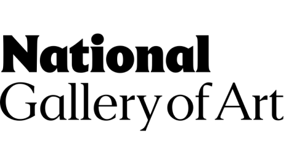

This overview is based on this XML output of the GLAMorous tool d.d. 17-01-2024.
It was generated using the GLAMorousToHTML Python script.
Also see the documentation of this tool.
English (1,180)
1400–1500 in European fashion --
1490s --
1492 --
1517 in art --
1530s --
1537 --
1600s (decade) --
1600–1650 in Western fashion --
1606 --
1610 --
1610s --
1649 in art --
1660s --
1669 --
1750–1775 in Western fashion --
1772 in art --
1775–1795 in Western fashion --
1778 in art --
1783 in Great Britain --
1795 in art --
1795–1820 in Western fashion --
1796 United States presidential election in Delaware --
1796 United States presidential election in Georgia --
1796 United States presidential election in Kentucky --
1797 State of the Union Address --
1798 State of the Union Address --
1799 State of the Union Address --
1800 State of the Union Address --
1800 United States presidential election --
1800 United States presidential election in Connecticut --
1800 United States presidential election in Delaware --
1800 United States presidential election in Georgia --
1800 United States presidential election in Kentucky --
1800 United States presidential election in Massachusetts --
1800 United States presidential election in New Jersey --
1800 United States presidential election in Pennsylvania --
1800 United States presidential election in Rhode Island --
1800 United States presidential election in Vermont --
1806 United Kingdom general election --
1807 United Kingdom general election --
1834 in art --
1842 in art --
1850s in Western fashion --
1860s in Western fashion --
1900s in Western fashion --
71st Regiment of Foot, Fraser's Highlanders --
A Friendly Call --
A Polish Nobleman --
A Sunday Afternoon on the Island of La Grande Jatte --
A Young Girl Reading --
Abigail Adams --
Abraham Bloemaert --
Abraham Bosse --
Achille Devéria --
Adam and Eve --
Adams political family --
Adolph Menzel --
Adolphe Appian --
Adoration of the Shepherds --
Adoration of the Shepherds (Giorgione) --
Adoration of the Shepherds (Martin Schongauer, Berlin) --
Adriaen Coorte --
Adriaen Hanneman --
Adriaen de Vries --
Adriaen van Ostade --
Adriaen van der Donck --
Aeaea --
Aesthetics (textile) --
Agostina Segatori --
Agricola I --
Alano Español --
Albert Bierstadt --
Albert Hecht --
Albert Pinkham Ryder --
Albert Pontremoli --
Albrecht Dürer --
Alexandra Kitchin --
Alexandre-Frédéric-Jacques Masson de Pezay --
Alexandre Calame --
Alfred Sisley --
Alfred Stieglitz --
Alice De Lancey Izard --
Amateur Photographer --
Amedeo Modigliani --
American Realism --
Ammi Phillips --
Amphitrite --
Amstel --
Amzi Emmons Zeliff --
An Agricultural Testament --
Ancient Israelite cuisine --
Anders Zorn --
Andrea Matteo Acquaviva --
Andrea del Sarto --
Andrea del Verrocchio --
Andrew Mellon --
Andrzej Rej (diplomat) --
Angel --
Angel Holding the Body of Christ --
Angelo Uggeri --
Angels in art --
Anglo-Scottish war (1650–1652) --
Anna Lea Merritt --
Anna Thornton --
Annunciation (van Eyck, Washington) --
Annunciation in Christian art --
Anthony van Dyck --
Antoine, Duke of Lorraine --
Antoine Benoist (engraver) --
Antoine Vollon --
Antoine Watteau --
Antonio Vassilacchi --
Antonis Mor --
Apocalypse (Dürer) --
Archbishop William Henry Elder --
Archibald Campbell (British Army officer, born 1739) --
Arion --
Arles --
Armory Show --
Arnold Böcklin --
Arnolfini Portrait --
Art Deco --
Art of Europe --
Art of the United Kingdom --
Artistic Dress --
Ashcan School --
Assassination of Admiral Coligny --
Assumption of the Virgin Mary in art --
Aubrey Beardsley --
Augustin Hirschvogel --
Aurora (mythology) --
Bagpipes --
Balthasar van der Ast --
Baluster --
Barbara Regina Dietzsch --
Barbizon School --
Bartholomew Gosnold --
Bartholomew the Apostle --
Bartolomé Sureda y Miserol --
Bathers at San Niccolò --
Battle of Harpers Ferry --
Battle of Siddim --
Battle of the Anio River (361 BC) --
Battle of the Caudine Forks --
Battles of Barfleur and La Hougue --
Bearded Man with a Beret --
Beatrice d'Este --
Beck Gold Medal --
Bed base --
Beekman family --
Benedetto Caliari --
Benjamin Stoddert --
Benjamin Tappan --
Benjamin West --
Bergère hat --
Bernard Berenson --
Bernard II van Risamburgh --
Bernardino Luini --
Bernardino of Siena --
Bertel Thorvaldsen --
Bertha Jaques --
Berthe Morisot --
Betel --
Bibliography of John Adams --
Biltmore Estate --
Bindo Altoviti --
Black --
Bogeyman --
Bolinus brandaris --
Bonnet (headgear) --
Book of Tobit --
Boris Legran --
Boston Artists' Association --
Botanical illustration --
Both Members of This Club --
Bridget of Sweden --
Bridgewater Iron Works --
Brocade --
Bronzino --
Brook Watson --
Brown --
Bulb Fields --
Bullfighting --
Bust (sculpture) --
Bust of Francesco Barberini --
Café-chantant --
Camille Doncieux --
Camille Pissarro --
Canson --
Capture of Savannah --
Capture of USS President --
Caravaggisti --
Cardinal Richelieu --
Carl Guttenberg --
Carl Larsson --
Carl Wilhelm Kolbe the Elder --
Caterina Sforza --
Cathedral of Our Lady (Antwerp) --
Catherine of Alexandria (Palladas) --
Catskill Mountains --
Chalice --
Champmol --
Chaperon (headgear) --
Charles Balthazar Julien Févret de Saint-Mémin --
Charles Caleb Ward --
Charles Carnan Ridgely --
Charles Cornwallis, 1st Marquess Cornwallis --
Charles Frederic Ulrich --
Charles Henry Granger --
Charles Lee (Attorney General) --
Charles Maurin --
Charles Meryon --
Charles Rolls (engraver) --
Charlotte Angus --
Charlotte Williams-Wynn (aristocrat) --
Childe Hassam --
Chinese ceramics --
Christ Bound --
Christ Driving the Money Changers from the Temple (El Greco, Washington) --
Christian communism --
Christianity in the 6th century --
Christianity in the Middle Ages --
Christianization of the Franks --
Christoph Nathe --
Clark Art Institute --
Clasped Hands of Robert and Elizabeth Barrett Browning --
Claude-Joseph Vernet --
Claude Monet --
Claudio Monteverdi --
Cleansing of the Temple --
Cloaca Maxima --
Clovis I --
Coat --
Coats of skin --
Coco (folklore) --
Coffeeland --
Colloquies --
Comte de Pourtalès Collection --
Constantijn à Renesse --
Constitution of the United States --
Cornelius Vanderbilt Whitney --
Coronation of Charles V --
Cosimo III de' Medici --
Crucifixion with the Virgin and St John --
Cultural depictions of dogs --
Cultural references to Othello --
Culture of Italy --
Cupid --
Cyanotype --
Daniel Hopfer --
David Johnson (American artist) --
David Lucas (engraver) --
Death and the Miser --
Delaware, Lackawanna and Western Railroad --
Demidov Collection --
Demon --
Desiderio da Settignano --
Devil May Cry --
Devil May Cry (video game) --
Diana (Renoir painting) --
Diana Scultori --
Dictionary of Women Artists --
Digitalis --
Diomede Falconio --
Diplomacy of John Adams --
Dirck Helmbreker --
Divine Comedy --
Dome --
Domenichino --
Domenico Bernardo Zilotti --
Donor portrait --
Dora Louise Murdoch --
Dream Isaiah Saw --
Duccio --
Duke of Ferrara and of Modena --
Dürer's Rhinoceros --
E Boyd --
Eadweard Muybridge --
Early Netherlandish painting --
Early modern European cuisine --
East Hampton (village), New York --
Eastland Company --
Edgar Degas --
Edith Loring Getchell --
Edmé Bouchardon --
Edward Hicks --
Edward Savage (artist) --
Edward Shippen IV --
Edwin Deakin --
Egon Schiele --
El Greco --
El Palo Alto --
Eleanor of Toledo --
Electoral history of John Adams --
Elgin Botanic Garden --
Elisabetta Gonzaga --
Elisha Kirkall --
Eliza Ridgely --
Elizabeth I --
Elizabeth Stanhope, Countess of Chesterfield --
Elizabeth Stuart (daughter of Charles I) --
Elizabeth Throckmorton (prioress) --
Emanuel Leutze --
Emilia (Othello) --
Entry and coronation of Anne of Denmark --
Equestrian Portrait of Count Stanislas Potocki --
Ernst Barlach --
Ernst Ludwig Kirchner --
Etching revival --
Eugène Boudin --
Eugène Carrière --
European printmaking in the 19th century --
Eva Gonzalès --
Eve, Psyche & the Bluebeard's Wife --
Exaggeration --
Exposition des primitifs flamands à Bruges --
F. L. Griggs --
Facing History: The Black Image in American Art, 1710-1940 --
Faiyum --
Faiyum Oasis --
Federalist Era --
Federalist No. 14 --
Federalist No. 18 --
Federalist No. 19 --
Federalist No. 20 --
Federalist No. 37 --
Federalist No. 38 --
Federalist No. 39 --
Federalist No. 40 --
Federalist No. 41 --
Federalist No. 42 --
Federalist No. 43 --
Federalist No. 44 --
Federalist No. 45 --
Federalist No. 46 --
Federalist No. 47 --
Federalist No. 48 --
Federalist No. 49 --
Federalist No. 50 --
Federalist No. 51 --
Federalist No. 52 --
Federalist No. 53 --
Federalist No. 54 --
Federalist No. 55 --
Federalist No. 56 --
Federalist No. 57 --
Federalist No. 58 --
Federalist No. 62 --
Federalist No. 63 --
Federalist Party --
Ferdinand II of Naples --
Ferdinando II de' Medici --
Fifine at the Fair --
Filippo Lippi --
First family of the United States --
Fitz Henry Lane --
Five Acres and Independence --
Flag of Tuscany --
Florence Griswold Museum --
Florentine Renaissance in figurative art --
Food, Inc. (book) --
Founding Fathers of the United States --
Four Horsemen of the Apocalypse --
Four Horsemen of the Apocalypse in popular culture --
France --
Frances Stewart, Duchess of Richmond --
Francesco Algarotti --
Francesco Benaglio --
Francesco Foscari --
Francesco Francia --
Francesco Guardi --
Francesco Novello da Carrara --
Francesco Zuccarelli --
Francis Danby --
Francis Seymour Haden --
Francisco Goya --
Frank Short --
Frank Weston Benson --
Frans Hals catalogue raisonné, 1974 --
Frans Hals catalogue raisonné, 1989 --
Frans van Schooten --
François-Louis Français --
François Boucher --
Fred Grayson Sayre --
Frederic Edwin Church --
Frederic Remington --
Frederick Sturges --
Frederick Sylvester North Douglas --
Frederick William II of Prussia --
French sculpture --
Freydal --
Fruit and Flowers --
Frédéric Bazille --
Félix Buhot --
Gabrielle-Marie Niel --
Gabriello Chiabrera --
Gabriël Metsu --
Galerie Barbazanges --
Galleon --
Garzia de' Medici --
Gennaro Annese --
Gentile de' Becchi --
Georg Pencz --
George Bellows --
George Cruikshank --
George Cuitt the Younger --
George Edwards (naturalist) --
George Elbert Burr --
George H. Pendleton --
George Henry Durrie --
George Inness --
George Romney (painter) --
George Stubbs --
George Walpole, 3rd Earl of Orford --
George Washington --
George Washington Parke Custis --
Georges Seurat --
Georgiana Cavendish, Duchess of Devonshire --
Gerard van Honthorst --
Germany–Turkey relations --
Gertrude Käsebier --
Gianello della Torre --
Gilbert Stuart --
Gilles Boileau --
Gillis van Tilborgh --
Giovanna Dandolo --
Giovanni Alberghetti --
Giovanni Antonio Amadeo --
Giovanni Battista Moroni --
Giovanni Battista Tiepolo --
Giovanni Borgherini and His Tutor --
Giovanni Ciampoli --
Giovanni Paolo Panini --
Giovanni Vendramini --
Giovanni della Robbia --
Girl in White --
Girl with a Flute --
Girl with a Red Hat --
Girolamo dai Libri --
Giuseppe Antonio Landi --
Glorification (theology) --
God in Christianity --
God the Father in Western art --
Grand Tour --
Greed --
Guido Bentivoglio --
Guido Reni --
Gustav Klimt --
Gustave Doré --
Gwen John --
HMS Swan (1767) --
Haarlem schutterij --
Hail! Bright Cecilia --
Haller Madonna --
Haller von Hallerstein --
Hampton National Historic Site --
Han van Meegeren --
Handbook of the Christian Knight --
Heinrich Aldegrever --
Hendrick Goltzius --
Hendrick de Keyser --
Henri Fantin-Latour --
Henri Guérard --
Henri de Toulouse-Lautrec --
Henrietta Liston --
Henriette Henriot --
Henry Greville, 3rd Earl of Warwick --
Henry II, Duke of Guise --
Henry Ossawa Tanner --
Henry Percival Dodge --
Henry Stuart, Duke of Gloucester --
Henry VIII (play) --
Henry White (diplomat) --
Hercules --
Hewitt Poole Jellett --
History of Newark, New Jersey --
History of art --
History of painting --
History of the Jews in Amsterdam --
History of the Metropolitan Police --
History of the United States (1776–1789) --
History of the United States (1789–1849) --
Ho-Chunk Nation of Wisconsin --
Holy Experiment --
Hope Collection of Pictures --
Horace Binney --
House of Grimaldi --
House of Loredan --
House of Sforza --
Hudson River School --
Human uses of animals --
I Know...Brad --
Ice skating --
Icon --
Ignaz Sebastian Klauber --
Impressionism --
In Our Time (short story collection) --
Inauguration of John Adams --
Invasion of the Danish West Indies --
Isabella (1813 ship) --
Isabella Doerfler --
Isabella of Aragon, Duchess of Milan --
Isotta degli Atti --
Italian Renaissance interior design --
Italian Renaissance sculpture --
Italians --
Italophilia --
Italy --
J. M. W. Turner --
Jacob Savery --
Jacoba van Heemskerck --
Jacopo Ligozzi --
Jacopo Sansovino --
Jacopo de' Barbari --
Jacques Necker --
James Madison --
James McHenry --
James McNeill Whistler --
James Otis Sr. --
Jan Davidsz. de Heem --
Jan Hus --
Jan Lievens --
Jan van Eyck --
Jan van den Eynde --
Jean-Antoine Houdon --
Jean-Auguste-Dominique Ingres --
Jean-Baptiste-Camille Corot --
Jean-François Millet --
Jean-Féry Rebel --
Jean-Honoré Fragonard --
Jean-Louis Forain --
Jean Duvet --
Jean Mignon --
Jean Monet (son of Claude Monet) --
Jean Nicolle --
Jean Siméon Chardin --
Jeanne Olivier --
Jerusalem artichoke --
Jesus of Montreal --
Jeungbo sallim gyeongje --
Jewels of Anne of Denmark --
Jewish cemetery --
Joachim Wtewael --
Joachim de Châteauvieux --
Joan of Arc --
Joanna Hiffernan --
Job 23 --
Johan Christian Dahl --
Johann Caspar Weidenmann --
Johann Koerbecke --
Johann Pistorius the Elder --
Johannes Cornelisz Verspronck --
Johannes Vermeer --
John, Elector of Saxony --
John, Hereditary Prince of Saxony --
John Adams --
John Bard (physician) --
John Boyne (artist) --
John Campbell White (diplomat) --
John Clerk of Eldin --
John Hoppner --
John Marshall --
John Martin (painter) --
John Neagle --
John Skippe --
John Speed --
John Tayloe III --
John Upton, 1st Viscount Templetown --
John Vanderbank --
John Ward (painter) --
Jonathan Sturges (businessman) --
Joseph Bonnier de la Mosson --
Joseph E. Widener --
Joseph Harrison Jr. --
Joseph Heintz the Younger --
Joseph Leboit --
Joseph Pennell --
Josiah Johnson Hawes --
José Guadalupe Posada --
Juan Gris --
Jules Dupré --
Juliette Dubufe --
Justice --
Keziah --
Kirtle --
Knight, Death and the Devil --
Knut Hamsun --
Kyriakos Pittakis --
Käthe Kollwitz --
Königstein Fortress --
L'Estampe originale --
La Mousmé --
La Rábida Friary --
La Tauromaquia --
Lala Eve Rivol --
Landscape with Rainbow (Duncanson) --
Landscape with Waterfall --
Large Triumphal Carriage --
Latch --
Latin Church --
Laura Piranesi --
Laure (art model) --
Lead white --
Lech-Lecha --
Legendary horses of Pas-de-Calais --
Leo Africanus --
Leon Battista Alberti --
Leonardeschi --
Leone Leoni --
Leroy Milton Yale Jr. --
Lescot Wing --
Lessing J. Rosenwald --
Leuchtenberg Gallery --
Lewis Hine --
Lewis Morris Rutherfurd --
Lewis R. Morris --
Lighting --
Lise Tréhot --
Lise with a Parasol --
List of 20th-century women artists --
List of American painters exhibited at the 1893 World's Columbian Exposition --
List of Hudson River School artists --
List of Pennsylvania state historical markers in Bucks County --
List of Pennsylvania state historical markers in Delaware County --
List of US Army Chaplain Corps regimental awards --
List of ambassadors of the United States to Spain --
List of ambassadors of the United States to the United Kingdom --
List of artwork associated with Agnes E. Meyer --
List of banking families --
List of colonial governors of Georgia --
List of cultural references in The Cantos --
List of drawings by Rembrandt --
List of dukes of Milan --
List of engravings by Albrecht Dürer --
List of erotica by Thomas Rowlandson --
List of federal judges appointed by John Adams --
List of governors of Maryland --
List of justices of the Massachusetts Supreme Judicial Court --
List of justices of the Supreme Court of Pennsylvania --
List of knights and ladies of the Garter --
List of knights companion of the Order of the Bath --
List of mayors of Washington, D.C. --
List of memorials to John Adams --
List of monarchs of Naples --
List of paintings by Adriaen Coorte --
List of paintings by Albrecht Dürer --
List of paintings by Alfred Sisley --
List of paintings by Anthony van Dyck --
List of paintings by Arnold Böcklin --
List of paintings by Claude Monet --
List of paintings by Eugène Boudin --
List of paintings by Frans Hals --
List of paintings by Frédéric Bazille --
List of paintings by Georges Seurat --
List of paintings by Henry Ossawa Tanner --
List of paintings by J. M. W. Turner --
List of paintings by Jacob van Ruisdael --
List of paintings by Jean-Auguste-Dominique Ingres --
List of paintings by Johannes Vermeer --
List of paintings by Judith Leyster --
List of paintings by Paul Gauguin --
List of paintings by Pierre-Auguste Renoir --
List of paintings by Raphael --
List of paintings by Rembrandt --
List of paintings by Sandro Botticelli --
List of paintings by Thomas Cole --
List of paintings by Valentin de Boulogne --
List of paintings by Édouard Manet --
List of paintings in the National Gallery of Art formerly in the Hermitage Museum --
List of people from Cincinnati --
List of portraits by Frank Weston Benson --
List of presidents of the United States --
List of prime ministers of the United Kingdom --
List of rulers who converted to Christianity --
List of sculptures by Auguste Rodin --
List of speakers of the Massachusetts House of Representatives --
List of szlachta --
List of the youngest state legislators in the United States --
List of things named after Rembrandt --
List of vice presidents of the United States --
List of vice presidents of the United States by education --
List of woodcuts by Albrecht Dürer --
List of works by Albert Bierstadt --
List of works by Canaletto --
List of works by Edward Hopper --
List of works by El Greco --
List of works by Fragonard --
List of works by Francisco Goya --
List of works by Jan van Eyck --
List of works by John Singer Sargent --
List of works by Mary Cassatt --
List of works by Orazio Gentileschi --
List of works by Thomas Eakins --
List of works by Vincent van Gogh --
List of works by William Merritt Chase --
Litoměřice Altarpiece --
Little Girl in a Blue Armchair --
Long Ago, Prophets Knew --
Longnose gar --
Lorenzo de' Medici --
Lorenzo di Credi --
Lot's daughters --
Lot (biblical person) --
Louis de Tousard --
Louis Émile Benassit --
Lucas Cranach the Elder --
Lucas van Leyden --
Lucretia --
Lucretia (Rembrandt, 1664) --
Lucretia (Rembrandt, 1666) --
Ludwig Gruner --
Lugger --
Luminism (American art style) --
Lumières --
Luncheon in the Studio --
Lute --
Léopold Flameng --
Maarten --
Maddalena Corvina --
Madonna (art) --
Madonna and Child with Saint Jerome and Saint John the Baptist --
Madonna della Loggia (Botticelli) --
Madonna in the Church --
Magnificent bird-of-paradise --
Marbury v. Madison --
Margaritone d'Arezzo --
Maria Uhden --
Maria de' Medici (1540–1557) --
Maria of Nassau (1539–1599) --
Marian art in the Catholic Church --
Marianna Russell --
Marie-Philippe Coupin de la Couperie --
Marie Louise Gonzaga --
Marine art --
Marmot --
Marriage of the Virgin --
Marsyas --
Martha Washington --
Martin Schongauer --
Martin of Tours --
Martina of Rome --
Mary Cassatt --
Maryland's 5th congressional district --
Maryland's 8th congressional district --
María Ana de Pontejos y Sandoval, Marchioness of Pontejos --
Masked Ball at the Opera House --
Masquerade ball --
Mass of Saint Gregory --
Master of Heiligenkreuz --
Master of Saint Francis --
Master of Saint Giles --
Master of the Franciscan Crucifixes --
Master of the Legend of Saint Lucy --
Master of the Playing Cards --
Master of the Prado Adoration of the Magi --
Mathematics and architecture --
Matthew 12:2 --
Matthew 27:54 --
Matthew 27:64 --
Matthew 5:33 --
Matthew 9:2 --
Matthew Pratt --
Matthias Grünewald --
Max Klinger --
Max Liebermann --
Maximilian I, Holy Roman Emperor --
May Belfort --
May Night (Willard Metcalf painting) --
Mayfly --
Medici Bank --
Medici giraffe --
Medicinal jar --
Medicine bag --
Meisterstiche --
Melencolia I --
Merchant --
Messiah Part II --
Mexican Revolution --
Michiel Sweerts --
Mildred McMillen --
Milton Avery --
Minetta Good --
Mobcap --
Models (painting) --
Mongol elements in Western medieval art --
Moors --
Morris Canal --
Mortimer Menpes --
Mound of Butter --
Mount Corcoran --
Municipio III --
Muses --
Natalie Victurnienne, Marchioness of Rougé --
National Gallery of Art --
Nativity of Jesus in art --
Nelumbo nucifera --
Nevile Wilkinson --
New England Museum --
New York Etching Club --
Niagara (Frederic Edwin Church) --
Niagara Falls --
Niccolini-Cowper Madonna --
Niccolò Machiavelli --
Nicolaes Maes --
Nicolas Coustou --
Nicolas de Largillière --
Night in paintings (Western art) --
Nightfall (Candlemass album) --
Nikola IV Zrinski --
Nikolay Yusupov --
Niobe --
Nocturne (painting) --
Nongsa jikseol --
Noël Brûlart de Sillery --
Nude (art) --
Nude on a Blue Cushion --
Nude swimming --
Nude swimming in US indoor pools --
Nudity in religion --
Nymph --
Old Lyme, Connecticut --
Old Lyme art colony --
Old Master --
Oliver Wolcott Jr. --
Omnia munda mundis --
Opp Amaryllis! --
Orazio Gentileschi --
Orfeo dolente --
Othello (character) --
Ottoman–Habsburg wars --
Oval Office --
Oxford Arms, Warwick Lane --
Pacifism in the United States --
Paestum --
Paintings of Children (Van Gogh series) --
Palace of Fontainebleau --
Palpitations --
Pamela hat --
Pan (god) --
Pantheon, Rome --
Paris Carnival --
Paris during the Bourbon Restoration --
Paris under Napoleon --
Pastel --
Patrick Boyle Mure Macredie --
Paul-Albert Besnard --
Paul Gauguin --
Paul Sérusier --
Pedal harp --
Peggy Shippen --
Perkins Harnly --
Peter Arrell Browne Widener --
Peter G. Gerry --
Peter Pelham --
Philipp Otto Runge --
Philippe Mercier --
Pia de' Tolomei (Rossetti) --
Picnic on the Grass --
Piero di Cosimo --
Pierre-Auguste Renoir --
Pierre-Paul Prud'hon --
Pierre Le Gros the Elder --
Pieter de Jode I --
Pietro Bembo --
Pietro Gaspari --
Pietro Longhi --
Pietro Perugino --
Pietro de' Medici --
Pietà --
Pillars of Hercules --
Plagues of Egypt --
Planet symbols --
Plum Brandy --
Poliziano --
Pontine Marshes --
Pope Leo XIII --
Portrait of Baldassare Castiglione --
Portrait of Bindo Altoviti --
Portrait of Charles Marcotte --
Portrait of Innocent X --
Portrait of Lorenzo di Credi --
Portrait of Madame Moitessier --
Portrait of Mrs Mary Graham --
Portrait of Ranuccio Farnese --
Portrait of a Lady (van der Weyden) --
Portrait of a Man (Mantegna) --
Portrait of a Young Girl (Christus) --
Portrait of a Young Man (Botticelli, Washington) --
Portrait of an Old Woman with Folded Hands --
Portraits by Vincent van Gogh --
Portraits of presidents of the United States --
Presidency of John Adams --
President's House (Philadelphia) --
Presiding Officer of the United States Senate --
Pride --
Primero --
Primicerius --
Primula veris --
Primum Mobile --
Prince Charming --
Printmaking --
Protestantism and Islam --
Purgatory --
Pyramid Lake (Nevada) --
Pythagoras --
R. G. Harper Pennington --
Rachael Robinson Elmer --
Ralph Izard (naval officer) --
Ranuccio Farnese (cardinal) --
Raphael --
Rauenstein Castle --
Reading --
Realism (art movement) --
Realism (arts) --
Reception of Islam in Early Modern Europe --
Recortes --
Red Jacket --
Reed pen --
Refectory table --
Reformation --
Reims Cathedral --
Rembrandt --
Rembrandt Peale --
Rembrandt catalogue raisonné, 1908 --
Rembrandt catalogue raisonné, 1935 --
Rembrandt catalogue raisonné, 1968 --
Rembrandt catalogue raisonné, 1986 --
Renaissance music --
Reverse perspective --
Rhinemaidens --
Richard Mentor Johnson --
Richard Norris Brooke --
Richard Peters (reporter) --
Richard Williams (animator) --
Right and Left --
Riverscape --
Robert Calder --
Robert Henri --
Robert Swain Gifford --
Rococo --
Rodolphe Bresdin --
Roland Balaÿ --
Roman Agrarian History and Its Significance for Public and Private Law --
Romanticism --
Rope bed --
Rouen Cathedral --
Rubens Peale --
Rubens Peale with a Geranium --
Ruff (clothing) --
Saint-Séverin, Paris --
Saint Apollonia --
Saint Barbara --
Saint Catherine Reading --
Saint Cecilia --
Saint George and the Dragon --
Saint Martin and the Beggar (El Greco) --
Saint Michael Fighting the Dragon --
Saint Remigius --
Saint Sebastian at the Column (Dürer) --
Saint Thomas, U.S. Virgin Islands --
Sally Michel Avery --
Salmon: A Red Herring --
Salomon van Ruysdael --
Salon des Refusés --
Salve Regina --
Samuel Allyne Otis --
Samuel Dexter --
Samuel Morse --
Samuel Osgood House --
Samuel Seymour (artist) --
Samuel Vaughan --
Sandown --
Sandro Botticelli --
Sanguine --
Sarah Bernhardt --
Satyr --
Scherer, Nabholz & Co. --
Scranton, Pennsylvania --
Sculpture in the Renaissance period --
Second ladies and gentlemen of the United States --
Secretary of the United States Senate --
Seeds of Destruction (book) --
Self-Portrait with Beret and Turned-Up Collar --
Self-Portrait with Halo and Snake --
Self-Portrait with Palette (Manet) --
Self-portraits by Rembrandt --
Send under the yoke --
Servulus of Rome --
Seven rays --
Sextus Tarquinius --
Sgabello --
Shakers --
Shark attack --
Sheep --
Sigismondo d'Este (1433–1507) --
Sigismund II Augustus --
Simon Vouet --
Sinon --
Sketch (drawing) --
Small Cowper Madonna --
Smiling Girl --
Southern art --
Soviet sale of Hermitage paintings --
Spirit of the Dead Watching --
St. Bartholomew's Day massacre --
St. Peter's Basilica --
Stained glass --
Stanislas Lépine --
Stephen Carlton Clark --
Stephen Parrish --
Stiacciato --
Still life --
Street in Venice --
Suger --
Susanna and the Elders in art --
Susanna in the Bath (Corinth) --
Swedish emigration to the United States --
Symbolist painting --
Symphony in White, No. 1: The White Girl --
Symphony in White, No. 2: The Little White Girl --
Symphony in White, No. 3 --
Syncope (medicine) --
Szlachta --
Sébastien Bourdon --
Tapestry --
Tenement --
Testimony of peace --
Thanksgiving (United States) --
The Adoration of the Shepherds (Paulus van Vianen) --
The Agrarian History of England and Wales --
The Ancient Art of War at Sea --
The Banks of the Oise --
The Botany of Desire --
The Brownies --
The Coffee Planter of Saint Domingo --
The Dance Lesson --
The Dead Man (Manet) --
The Descent from the Cross (Rembrandt, 1650–1652) --
The Feast of Herod --
The Finding of Moses (Veronese, Smith collection) --
The Four Witches --
The Frankenfood Myth --
The Gene Revolution --
The Grain of Wheat --
The Gulf Stream (painting) --
The Heart of the Andes --
The Holy Family with the Dragonfly --
The Kitchen Maid (Rembrandt) --
The Lackawanna Valley --
The Last Joke, Bellagio --
The Lute Player (Orazio Gentileschi) --
The Martyrdom of Saint Bartholomew (Ribera, 1634) --
The Meadow (painting) --
The Mill (Rembrandt) --
The Mother and Sister of the Artist --
The Nativity (Victor) --
The Needlewoman --
The Old Musician --
The Pride and the Passion --
The Rape of the Sabine Women (Poussin) --
The Sanctuary of Hercules (Böcklin) --
The Sea Monster --
The Siege of Sziget --
The Skater --
The Slave Ship --
The Stolen Kiss (Fragonard) --
The Stoning of Saint Stephen --
The Swimming Hole --
The Third-Class Carriage --
The Tribuna of the Uffizi (Zoffany) --
The Voyage of Life --
The Washington Family --
The Werl Triptych --
The lamb and lion --
Thebaid (Latin poem) --
Themes in Italian Renaissance painting --
Theo van Wijngaarden --
Theodore Robinson --
Things Heard & Seen --
Thomas Chambers (painter) --
Thomas Chevalier --
Thomas Cole --
Thomas Corcoran (mayor) --
Thomas Gainsborough --
Thomas Graham, 1st Baron Lynedoch --
Thomas Jefferson --
Thomas Pennant Barton --
Thomas Sully --
Thomas Tingey --
Thomas Tudor Tucker --
Théodore Duret --
Théâtre Libre --
Timeline of 20th century printmaking in America --
Timothy Pickering --
Titian's Mistress --
Toasting fork --
Tobias --
Tobias and the Angel --
Tobias and the Angel (Filippino Lippi) --
Toleware --
Tonalism --
Tonita Peña --
Top (tool) --
Tourism in Rome --
Townsend (name) --
Treasury of Saint-Denis --
Treaty of Amity and Commerce (France–United States) --
Treen --
Trictrac --
Trifone Gabriel --
Triumphal Arch (woodcut) --
Umber --
Umbrella --
Unfortunate events in the front seats of the ring of Madrid, and the death of the mayor of Torrejón --
United States Capitol --
United States Reports, volume 2 --
United States Reports, volume 3 --
United States Secretary of the Navy --
United States presidential election --
Valentin de Boulogne --
Valerio Belli --
Vayeira --
Vayeshev --
Venus Blindfolding Cupid --
Venus Consoling Love --
Venus and Adonis (Titian) --
Victor Hugo --
Vincent van Gogh --
Vincenzo Cappello --
Virginia Vezzi --
Viscount Templetown --
Visitation with Saint Nicholas and Saint Anthony --
Visual art of the United States --
Vitruvius --
Vittore Gambello --
Voltaire --
Walpole collection --
Walter Gramatté --
War of Padua --
Washing and anointing --
Washington Jockey Club --
Washington family --
Watson and the Shark --
Weaning --
Western canon --
Western painting --
Wheat Fields --
White --
Willard Metcalf --
Willem IV van den Bergh --
William Bambridge --
William Blake's Illustrations of the Book of Job --
William Crowninshield Endicott --
William Hamilton (diplomat) --
William Hartigan (Irish surgeon) --
William Merritt Chase --
William Thornton --
William Vans Murray --
William Villiers, 2nd Viscount Grandison --
Willoughby Ions --
Winslow Homer --
Winsor McCay --
Witch (archetype) --
Witchcraft --
Woman with Dead Child --
Woman with a Sunflower --
Women in music --
Wood engraving --
Woodcut --
Woolworth Building --
Works of art in The Aesthetics of Resistance --
Worms Eat My Garbage --
XYZ Affair --
Yellow --
Yvonne and Christine Lerolle at the Piano --
Zibellino --
Zwinger (Dresden) --
À la poupée --
Édouard Manet --
Édouard Vuillard
French (887)
1846 en France --
1849 en France --
1851 en arts plastiques --
1882 en France --
1887 en photographie --
609 --
8 mai --
Abraham Bredius --
Achior --
Adam et Ève (Cranach, 1509) --
Adriaen Coorte --
Adriaen Hanneman --
Adriaen van Ostade --
Adriaen van de Velde --
Adriaen van der Donck --
Adrien de Rougé --
Agnès d'Assise --
Agostina Segatori --
Agriculture aux Pays-Bas --
Aire protégée --
Albert-Ernest Carrier-Belleuse --
Albert Bierstadt --
Albert Pinkham Ryder --
Alexandre Calame --
Alexandre Chaponnier --
Alexandre Masson de Pezay --
Alfred Stieglitz --
Aline Charigot --
Alphonse Legros --
Amedeo Modigliani --
American Barbizon School --
Andrea Lilio --
Andromède enchaînée aux rochers --
Andrzej Rej --
André Suréda --
Ange Laurent Lalive de Jully --
Anguille et Rouget --
Anselme Flamen --
Antoine-Louis Lefebvre de Caumartin --
Antoine Benoist (graveur) --
Antoine Vollon --
Antoine van Dyck --
Apollon et Diane (Dürer) --
Apollon et Diane (Jacopo de' Barbari) --
Aqueducs de la Vanne et du Loing --
Arc de triomphe de Maximilien --
Arcadie (poésie) --
Archibald Campbell (gouverneur) --
Arioch --
Aristote contemplant le buste d'Homère --
Armand Doria --
Art de la Renaissance --
Arts plastiques et visuels en Suisse --
August Löffler --
Auguste Delâtre --
Auguste Renoir --
Augustin Hirschvogel --
Augustin de Lapeyrière --
Augustin de Thou --
Autoportrait --
Autoportrait (Giorgione, Brunswick) --
Autoportrait (Giorgione, Budapest) --
Autoportrait (Rembrandt, 1658) --
Autoportrait (Rembrandt, 1660) --
Autoportrait (Rembrandt, Indianapolis) --
Autoportrait (Rembrandt, Vienne) --
Autoportrait au bonnet noir --
Autoportrait au chevalet et à l'appuie-main de peintre --
Autoportrait aux deux cercles --
Autoportrait avec béret et col droit --
Autoportrait avec chaîne et pendentif --
Autoportrait avec un gorgerin --
Autoportrait en Zeuxis --
Autoportrait en apôtre Paul --
Autoportrait en enfant prodigue dans l'auberge --
Autoportrait féminin en peinture --
Autoportrait portant un bonnet à plumes blanches --
Autoportrait à l'âge de 34 ans --
Autoportrait à l'âge de 63 ans --
Autoportrait à la toque sur fond d'architecture --
Autoportraits de Rembrandt --
Aviron (rame) --
Bal de l'Opéra --
Bal masqué à l'opéra --
Ballet --
Bals de Paris --
Baptême de Clovis --
Bartholomeus Breenbergh --
Barthélemy d'Eyck --
Ben Broos --
Berger à la flûte --
Bernard Gaillot --
Bernard Vaillant --
Bertha Jaques --
Berthe Morisot --
Bethsabée au bain tenant la lettre de David --
Beurre --
Beurre (couleur) --
Bibliographie sur Rembrandt --
Bindo Altoviti --
Biographies des miliciens figurant dans La Ronde de nuit de Rembrandt --
Blanche Dillaye --
Bonabes Louis Victurnien Alexis de Rougé --
Bonne Mère --
Buffet (restauration) --
Buste de Francesco Barberini --
Buste d’un homme portant un gorgerin et un béret à plumes --
Béatrice d'Este --
Bénédicte d'Assise --
Cadavres d'insurgés dans leurs cercueils --
Calcutta --
Camille Doncieux --
Cancale --
Canotiers à Chatou --
Carnaval de Paris --
Caspar Hedio --
Catherine Lusurier --
Champs de fleurs en Hollande --
Chanteur passionné --
Charlatanisme --
Charles-Eugène Duponchel --
Charles-Édouard de Beaumont --
Charles Deudon --
Charles Faure --
Charles Frederic Ulrich --
Charles Marcotte d'Argenteuil --
Charles Meryon --
Charles Sautayra --
Chartreuse de Champmol --
Chasse aux sorcières --
Chaumière --
Chignon --
Christian Tümpel --
Christianisation et urbanisation du Nord-Pas-de-Calais --
Christopher White --
Chutes du Niagara --
Château de Bellevue (Meudon) --
Château de Lugny --
Château de Sully --
Château des Arcs --
Cimabue --
Cinquième district congressionnel du Maryland --
Clark Art Institute --
Claude Déruet --
Clipper d'Argenteuil --
Cloaca Maxima --
Clodion (sculpteur) --
Clohars-Carnoët --
Clovis Ier --
Coco (folklore) --
Collection Farnèse --
Collection de la maison d'Orléans --
Colonie artistique d'Old Lyme --
Contrepoint rigoureux --
Cornelis Hofstede de Groot --
Cornelis Visscher --
Cornemuse --
Corrida --
Couture --
Couvent des Filles-Anglaises (fossés Saint-Victor) --
Cris de Paris --
Cyprien Gaulon --
Danaé (Rembrandt) --
David et Jonathan (Rembrandt) --
David et Urie --
Deauville --
Delphine Abdala --
Descente de croix (Rembrandt, 1633) --
Descente de croix (Rembrandt, 1634) --
Descente de croix (Rembrandt, 1650-52) --
Dessins moghols de Rembrandt --
Diane et ses nymphes surprises au bain par Actéon --
Dictionary of Women Artists --
Diego de Guevara --
Diomede Falconio --
Dirck Volkertszoon Coornhert --
Dirk Helmbreker --
Dissolution parlementaire (France) --
Domenico Beccafumi --
Domenico Veneziano --
Dominique de Ligny --
Donald Shaw Mac Laughlan --
Dostoïevski et Rembrandt --
Double Portrait (Giorgione) --
Doucemelle --
Droite et gauche --
Décennie 1320 en arts plastiques --
Décolleté --
Dürer et la météorite d'Ensisheim --
Edgar Degas --
Edma Morisot --
Edmond Aman-Jean --
Edmond Eugène Valton --
Edward Savage --
El Indio (Mariano Ceballos) --
Ellen Andrée --
Emmanuel Chabrier --
En bateau --
Entrelacs (Dürer) --
Ernst van de Wetering --
Estampe --
Eugen Kirchner --
Eugène Delacroix --
Eugène Grasset --
Eva Gonzalès --
Expulsion des marchands du Temple --
Famille Altoviti --
Famille Cromot --
Famille Marcotte --
Famille Sforza --
Famille de Thou --
Faune (mythologie) --
Femme au miroir (Jacopo de' Barbari) --
Femme au tournesol --
Femme se baignant dans une rivière --
Filippino Lippi --
Filippo Bellini --
Fils aîné de l'Église --
Flora (Rembrandt, Ermitage) --
Flora (Rembrandt, MET) --
Florence Griswold Museum --
Fontainebleau --
Fortuné Joseph Petiot-Groffier --
Forêt de Fontainebleau --
Forêt tropicale avec singes --
Fraise (costume) --
France --
Francesco Denanto --
Francesco Francia --
Francis Nathaniel Burton --
Francisco de Goya --
Franz Eberhard --
François Barbé-Marbois --
François Boucher --
François L'Hermite --
François Mallier du Houssay --
François Verdier (peintre) --
Frederic Edwin Church --
Friedrich Hagenauer --
Friedrich Salathé --
Frédéric Perrenot de Granvelle --
Félix Bracquemond --
Félix Vallotton --
Gabriel Metsu --
Gabriel Salmon --
Gabriello Chiabrera --
Gainsborough Dupont --
Garde civile de Haarlem --
Garonnaise --
Gary Schwartz --
Garçon à la flèche --
Geertje Dircx --
George Auriol --
George Bottini --
George Cumberland --
George Inness --
George Loring Brown --
George Moore --
Georgiana Cavendish --
Gerrit van Honthorst --
Gilbert Stuart --
Gilles Boileau --
Gillis van Tilborch --
Giorgione --
Giotto di Bondone --
Giovanni Battista Moroni --
Giovanni Ciampoli --
Girafe Médicis --
Giuseppe Rosaspina --
Gothique international --
Gravures de Goya d'après Velázquez --
Gravures de Rembrandt --
Gringalet --
Groupe de sept chevaux --
Guillaume IV van den Bergh --
Guilleri --
Génétique de la population marocaine --
Hackbrett --
Hans Baldung --
Hans Mair von Landshut --
Hendrick ter Brugghen --
Hendrik Goltzius --
Henri Fantin-Latour --
Henri II de Guise --
Henri Stuart (1er duc de Gloucester) --
Henri de Toulouse-Lautrec --
Henriette Henriot --
Henry Raeburn --
Henry Ward Ranger --
Henry Wolf --
Hercule à la croisée des chemins --
Histoire de la construction --
Histoire du commerce des épices --
Homburg (chapeau) --
Homosexualité au Portugal --
Honfleur --
Horst Gerson --
Hudson River School --
Huitième district congressionnel du Maryland --
Illustrations du Livre de Job --
Israhel van Meckenem --
Jacoba van Heemskerck --
Jacques-Louis David --
Jacques-Louis Touzé --
Jacques Callot --
Jacques II de Chabannes de La Palice --
James Abbott McNeill Whistler --
James Tissot --
Jan Both --
Jan Davidszoon de Heem --
Jan Lievens --
Jan Wellens de Cock --
Jan van den Eynde --
Jan van der Heyden --
Jean-Achille Benouville --
Jean-Baptiste Amador de Vignerot du Plessis --
Jean-Baptiste Faure --
Jean-Baptiste Millet (artiste) --
Jean-Baptiste Oudry --
Jean-Charles François --
Jean-François Millet --
Jean-Frédéric Madruzzo --
Jean-Honoré Fragonard --
Jean-Hubert Debrousse --
Jean-Jacques Feuchère --
Jean-Louis Forain --
Jean-Louis Loubère --
Jean-Pierre-Marie Jazet --
Jean Béraud --
Jean Darmand --
Jean Galéas Sforza --
Jean Siméon Chardin --
Jean de Fermo --
Jean de Saulx --
Jeanne Olivier --
Jeune Femme au lit --
Jeune Femme aux pivoines --
Jeune Fille au cadre --
Joachim et Anne à la Porte dorée --
Joanna Hiffernan --
Johann Koerbecke --
Johann Ladenspelder --
Johann Pistorius l'Ancien --
Johannes Glauber --
Johannes Vermeer --
John Adams (homme d'État) --
John Austin Sands Monks --
John Beasley Greene --
John Greenwood (artiste) --
John Hoppner --
John Singer Sargent --
John Ward (peintre) --
Joseph Alfred Bellet du Poisat --
Joseph Bonnier de la Mosson --
Joseph Mallord William Turner --
Joseph et la femme de Putiphar --
Joseph et la femme de Putiphar (Rembrandt) --
Joueur de flûte (Giorgione) --
Judith (Giorgione) --
Judith au banquet d'Holopherne --
Juif errant --
Jules-David Cromot du Bourg --
Jules Dupré --
Juliette Dubufe --
Julius S. Held --
Julius S. Held Collection of Rare Books --
Jungles --
Jupiter et Antiope : la grande planche --
Jésus-Christ dans l'art --
Jésus présenté au peuple, ou l'Ecce Homo en largeur --
Karel Dujardin --
Kezia --
Konrad Peutinger --
L'Adoration (Botticelli) --
L'Adoration de l'Enfant --
L'Annonciation (Véronèse) --
L'Annonciation (van Eyck) --
L'Annonciation Friedsam --
L'Apocalypse (Dürer) --
L'Apocalypse (Zoan Andrea) --
L'Archange Raphaël quittant la famille de Tobie --
L'Aveuglement de Samson --
L'Empereur Maximilien Ier --
L'Enfant aux rochers --
L'Enlèvement d'Europe (Rembrandt) --
L'Enseigne --
L'Homme de douleurs (Dürer) --
L'Homme mort --
L'Ânesse du prophète Balaam --
L'Épreuve du feu de Moïse --
L'Érection de la croix (Rembrandt) --
L'Érudit au pupitre --
LGBT en Espagne --
La Bénédiction des fils de Joseph par Jacob --
La Calomnie d'Apelle --
La Campagne du peseur d'or --
La Chute du roi --
La Conspiration de Claudius Civilis --
La Couturière (Vélasquez) --
La Crucifixion avec la Vierge et saint Jean --
La Cène (Dürer) --
La Dame à cheval et le Lansquenet --
La Descente de croix au flambeau --
La Femme à la poire --
La Fiancée juive --
La Fille au chapeau rouge --
La Fuite en Égypte (Botticelli) --
La Fuite en Égypte (Rembrandt) --
La Grande Madone Cowper --
La Jeune Fille à la flûte --
La Jeune Fille à la perle --
La Jungle équatoriale --
La Lapidation de saint Étienne (Rembrandt) --
La Leçon d'anatomie du docteur Deyman --
La Leçon d'anatomie du docteur Tulp --
La Leçon de danse --
La Liseuse --
La Madone Bardi --
La Madone de l'Eucharistie --
La Madone de la mer --
La Madone du Magnificat --
La Madone du livre (Botticelli) --
La Madone du pavillon --
La Mort de la Vierge (Rembrandt) --
La Mousmé --
La Petite Danseuse de quatorze ans --
La Petite Fortune --
La Petite Madone Cowper --
La Pièce aux cent florins --
La Prairie (Sisley) --
La Prune --
La Pénitence de saint Chrysostome --
La Pénitence de saint Jean Chrysostome --
La Ronde de nuit --
La Résurrection de Lazare (Rembrandt) --
La Sainte Famille aux trois lièvres --
La Sorcière (Dürer) --
La Tempête (Giorgione) --
La Tentation du paresseux --
La Terre des Peaux-Rouges --
La Vieille (Giorgione) --
La Vierge, saint Jean-Baptiste et un ange adorant l'Enfant Jésus --
La Vierge adorant l'Enfant Jésus endormi --
La Vierge au chat --
La Vierge dans une église --
La Vierge de la loggia --
La Vierge et l'Enfant avec le jeune saint Jean-Baptiste --
La Vierge et l'Enfant avec le petit saint Jean-Baptiste --
La Vierge et l'Enfant dans une gloire de séraphins --
La Vierge et l'Enfant entourés de cinq anges --
La Vierge et l'Enfant entourés de deux anges, sainte Rose et sainte Catherine --
La Vierge à l'Enfant (Botticelli) --
La Vierge à l'Enfant avec deux anges (Botticelli) --
La Vierge à l'Enfant avec deux anges et Jean-Baptiste --
La Vierge à l'Enfant avec la couronne d'épines et trois clous --
La Vierge à l'Enfant avec le petit saint Jean (Botticelli) --
La Vierge à l'Enfant avec un ange --
La Vierge à l'Enfant dans un paysage --
La Vierge à l'Enfant et huit anges --
La Vierge à la grenade --
La Vierge à la roseraie (Botticelli) --
Laura (Giorgione) --
Laurent de Médicis --
Laurus nobilis --
Le Baptême de Clovis (Hélart) --
Le Baptême de l'eunuque --
Le Bœuf écorché (Rembrandt) --
Le Cavalier polonais --
Le Chevalier, la Mort et le Diable --
Le Christ chassant les marchands du Temple (Le Greco, Londres) --
Le Christ dans la tempête sur la mer de Galilée --
Le Christ et la Femme adultère (Rembrandt) --
Le Château de cartes (Chardin) --
Le Citron --
Le Concert champêtre (Titien) --
Le Dernier Jour d'un condamné (opéra) --
Le Dernier des bisons --
Le Dessinateur et son modèle --
Le Docteur Fautrieus --
Le Festin d'Esther avec Aman et Assuérus --
Le Festin de Balthazar (Rembrandt) --
Le Grand Char triomphal de l'empereur Maximilien Ier --
Le Grand cheval --
Le Greco --
Le Havre --
Le Jugement de Salomon (Giorgione) --
Le Lit à la française --
Le Martyre des dix mille --
Le Mesnil-Théribus --
Le Monstre marin --
Le Moulin (Rembrandt, gravure) --
Le Moulin (Rembrandt, peinture) --
Le Patineur (Stuart) --
Le Peintre dans son atelier (Rembrandt) --
Le Petit Bacchus malade --
Le Pont-Neuf --
Le Pont d'Argenteuil --
Le Porte-Drapeau (Floris Soop) --
Le Porte-drapeau --
Le Reniement de saint Pierre (Rembrandt) --
Le Retour du fils prodigue (Rembrandt) --
Le Sacrifice d'Isaac (Rembrandt) --
Le Syndic de la guilde des drapiers --
Le Vieil Homme à la chaîne d'or --
Le Vieux Musicien --
Le Voyage de la vie --
Leconte de Lisle --
Leconte de Lisle (Millet) --
Lecteur --
Lecture --
Leone Leoni --
Les Berges de l'Oise --
Les Primitifs flamands à Bruges --
Les Pèlerins d'Emmaüs (Rembrandt, Louvre) --
Les Pèlerins d'Emmaüs (musée Jacquemart-André) --
Les Quatre Sorcières --
Les Sept Sacrements --
Les Taureaux de Bordeaux --
Les Trois Arbres (Rembrandt) --
Les Trois Croix --
Les Trois Philosophes --
Les Trois Âges de l'homme (Giorgione) --
Les Vins de France --
Limbes --
Lise Tréhot --
Liseuse (homonymie) --
Liste d'œuvres d'Adriaen van Ostade --
Liste d'œuvres de Gabriel Metsu --
Liste d'œuvres de Giovanni Paolo Panini --
Liste d'œuvres de Raphaël --
Liste d'œuvres de Sandro Botticelli --
Liste d'œuvres de Thomas Cole --
Liste d'œuvres du Greco --
Liste d'œuvres du Pérugin --
Liste de peintures d'Antoine Watteau --
Liste de peintures d'Edgar Degas --
Liste de peintures d'Eugène Boudin --
Liste de peintures d'Eugène Delacroix --
Liste de peintures de Berthe Morisot --
Liste de peintures de Claude Monet --
Liste de peintures de François Boucher --
Liste de peintures de Félix Vallotton --
Liste de peintures de Giambattista Tiepolo --
Liste de peintures de Henri Fantin-Latour --
Liste de peintures de Jean-François Millet --
Liste de peintures de Jean-Honoré Fragonard --
Liste de peintures de Jean-Louis Forain --
Liste de peintures de John Singer Sargent --
Liste de peintures de Joseph Mallord William Turner --
Liste de peintures de Jules Dupré --
Liste de peintures de Stanislas Lépine --
Liste de peintures de Théodore Géricault --
Liste de peintures de Théodore Rousseau --
Liste de peintures de Valentin de Boulogne --
Liste de tableaux d'Angelica Kauffmann --
Liste de tableaux d'Auguste Renoir --
Liste de tableaux d'Élisabeth Vigée Le Brun --
Liste de tableaux de Francesco Guardi --
Liste de tableaux de Gustave Courbet --
Liste de tableaux de Jean-Baptiste Perronneau --
Liste de tableaux de John Singer Sargent --
Liste de tableaux de Nicolas de Largillierre --
Liste de tableaux de Pierre Bonnard --
Liste de tableaux de Pietro Longhi --
Liste de tableaux de Thomas Gainsborough --
Liste des Premiers ministres du Royaume-Uni --
Liste des Premières dames des États-Unis --
Liste des autoportraits de Paul Gauguin --
Liste des dessins de Rembrandt --
Liste des gravures de Rembrandt --
Liste des matadors morts dans l'arène --
Liste des peintures d'Antoine van Dyck --
Liste des peintures de Frans Hals --
Liste des peintures de Giotto --
Liste des peintures de Jacob van Ruisdael --
Liste des peintures de Jean-Auguste-Dominique Ingres --
Liste des peintures de Jean-Baptiste de Champaigne --
Liste des peintures de Jean-Marc Nattier --
Liste des peintures de Simon Vouet --
Liste des peintures de natures mortes par Paul Cézanne --
Liste des peintures de paysages par Paul Cézanne --
Liste des peintures et dessins de Matthias Grünewald --
Liste des présidents des États-Unis --
Liste des sonates pour clavier de Domenico Scarlatti --
Liste des tableaux d'Édouard Manet --
Liste des tableaux de Camille Corot --
Liste des tableaux de Jean-Baptiste Greuze --
Liste des tableaux de Rembrandt --
Liste des tableaux de Vincent van Gogh --
Liste des élèves de Rembrandt --
Liste des œuvres de Francisco de Goya --
Liste des œuvres de Hans Memling --
Liste des œuvres de Jérôme Bosch --
Liste des œuvres de Neroccio di Bartolomeo de' Landi --
Liste des œuvres de Petrus Christus --
Liste des œuvres de l'exposition Le Modèle noir --
Liste des œuvres présentées à la deuxième exposition des impressionnistes --
Liste des œuvres présentées à la première exposition impressionniste de 1874 --
Liste des œuvres présentées à la troisième exposition des impressionnistes --
Littérature --
Lorenz Natter --
Lorenzo di Credi --
Louis Émile Benassit --
Lucas Cranach l'Ancien --
Lucien Ott --
Luis de León --
Luquin --
Léo Delibes --
Léon l'Africain --
Léon l'Africain (roman) --
Léviathan (Thomas Hobbes) --
Madame Moitessier --
Madone Rockefeller --
Madone adorant l'Enfant avec cinq anges --
Madone des Guidi de Faenza --
Madonna adorante il Bambino con San Giovannino --
Maison Grimaldi --
Maison de Rochechouart de Mortemart --
Maison forte --
Manao Tupapau --
Marais pontins --
Marché aux esclaves --
Marie-Philippe Coupin de La Couperie --
Marine (peinture) --
Mars et Vénus (Jacopo de' Barbari) --
Marthe Bonnard --
Martial Desbois --
Martin Royalton-Kisch --
Martin Schongauer --
Martine de Rome --
Mary Cassatt --
Matthew Pratt --
Matthias Grünewald --
Maurice Blondel (philosophe) --
Maurice Fabre (collectionneur) --
Maître L. Cz. --
Maître de Francfort --
Maître de Saint Gilles --
Maître de la Légende de sainte Lucie --
Melencolia I --
Milton Clark Avery --
Moritz Steinla --
Mortimer Menpes --
Motte de beurre --
Moulin à vent --
Mousmé --
Moïse brisant les Tables de la Loi --
Muscle platysma --
Museum Florentinum --
Musique de la Renaissance --
Musée Baron-Martin --
Mâcon --
Mère --
Médan (Yvelines) --
National Gallery of Art --
Naturalisme (art figuratif) --
Nature morte --
Nature morte avec des paons --
Nicolas Potier de Novion --
Nicolas Poussin --
Nicolas de Largillierre --
Nicolas de Myre --
Nonchaloir --
Noël Brûlart de Sillery --
Nu (genre artistique) --
Obélisque du Vatican --
Occident au VIe siècle --
Omelette --
Opéra Le Peletier --
Orazio Gentileschi --
Ordre de Sainte-Catherine --
Origine ethnique et apparence de Jésus --
Otto Benesch --
Pallas Athéna (Rembrandt) --
Pantalettes --
Panthéon (Rome) --
Paolo Vetri --
Papillons dans l'art --
Papyrus Ebers --
Parc de Sceaux --
Paul Adolphe Rajon --
Paul Sérusier --
Paulin Ier d'Aquilée --
Pays de Caux --
Paysage au canon --
Paysage avec le Bon Samaritain --
Peggy Shippen --
Peintre de cour --
Peinture américaine --
Peinture avec partition musicale --
Peintures sur les Yvelines --
Pellegrino Prisciani --
Perçage du lobe de l'oreille --
Petite Fille dans un fauteuil bleu --
Philibert-Louis Debucourt --
Philibert Rouvière --
Philippe Mercier (peintre allemand) --
Philosophe en méditation --
Piero di Cosimo --
Pierre-Antoine Baudouin --
Pierre Adrien Le Beau --
Pierre Bonnard --
Pierre Jacques Onésyme Bergeret de Grancourt --
Pierre lithographique --
Pieter Claesz --
Pieter Jansz Saenredam --
Pietro Testa --
Place Adolphe-Max --
Placide (saint) --
Plante messicole --
Polyptyque Hulin de Loo --
Pont Clemenceau (Vernon) --
Pont Neuf --
Pont Saint-Laurent (Saône) --
Pont de la Tournelle --
Port de Bordeaux --
Portrait d'Ulrich Varnbüler --
Portrait d'homme (Mantegna) --
Portrait d'homme en arme --
Portrait d'un homme se levant de son siège --
Portrait d'un jeune homme (Giorgione) --
Portrait d'un jeune homme (Giorgione, Budapest) --
Portrait d'un noble oriental --
Portrait d'une jeune femme à l'éventail --
Portrait de Bartolomé Sureda --
Portrait de Charles Marcotte d'Argenteuil --
Portrait de Dirck van Os --
Portrait de Francesco Maria Della Rovere --
Portrait de Jacob de Gheyn III --
Portrait de Jan Six (estampe) --
Portrait de Jan Six (tableau) --
Portrait de Lorenzo di Credi --
Portrait de Maria Trip --
Portrait de Nicolaes Ruts --
Portrait de Petronella Buys --
Portrait de Teresa Sureda --
Portrait de donateur --
Portrait de famille (Rembrandt) --
Portrait de guerrier avec son écuyer --
Portrait de jeune homme (Botticelli, Washington) --
Portrait de la marquise de Pontejos --
Preciosa (personnage) --
Primum Mobile --
Prise de Savannah --
Procrastination --
Procès de Jésus --
Prune --
Présidence de George Washington --
Présidence de John Adams --
Présidence de John Quincy Adams --
Pêche à pied --
Quaker --
Que viene el coco --
Raphael Lamar West --
Reines de France et Femmes illustres --
Relations entre juifs et musulmans --
Relations entre l'Allemagne et la Tchéquie --
Relations entre le protestantisme et l'islam --
Rembrandt --
Rembrandt Peale --
Rembrandt Research Project --
Rembrandt aux yeux hagards --
Rembrandt riant --
Remi de Reims --
Renaissance florentine dans les arts figuratifs --
Représentation artistique de Jean le Baptiste --
Représentation de la Crucifixion --
Représentation du pont en peinture --
Requin --
Retable d'Orlier --
Retable de Castelfranco --
Retable de Saint-Ambroise --
Retable de San Barnaba --
Retable de Tauberbischofsheim --
Retable du Trebbio --
Rhinocéros de Dürer --
Ritratto di Dama --
Robert Henri --
Robert Howlett --
Roger Marx --
Roland Balaÿ --
Roman (littérature) --
Romantisme français --
Rombach-le-Franc --
Royaume de France --
Rue Largillière --
Rue du Havre (Paris) --
Réalisme américain --
Saint Georges et le dragon , L'Empereur Maximilien à cheval --
Saint Jérôme près d'un saule --
Saint Martin et le Mendiant (Le Greco) --
Saint Martin partageant son manteau --
Saint Matthieu et l'Ange (Rembrandt) --
Saint Sébastien appuyé contre la colonne --
Saint Sébastien lié à un arbre --
Salle des Caryatides --
Salomon van Ruysdael --
Salvatore Castiglione --
Samuel van Hoogstraten (artiste) --
Saône --
Scratches --
Scènes de plage à Trouville par Eugène Boudin --
Septimia Bathzabbai Zénobie --
Sergent-Marceau --
Serra San Quirico --
Seymour Slive --
Shinar --
Sigillum Neronis --
Siècle d'or néerlandais --
Spitz japonais --
Stellaria media --
Stephen Parrish --
Suzanne et les Vieillards (Rembrandt) --
Symphonie en blanc n°1 : la jeune fille en blanc --
Syncope (médecine) --
Tableau d'histoire --
Tableau à surprises --
Tapisseries de l’abbaye Saint-Jean --
Taupe d'Europe --
Telemaco Signorini --
Thaïs (sainte) --
Thomas Chambers --
Thomas Cole --
Thomas Graham (baron Lynedoch) --
Thomas Tingey --
Théodore Rousseau --
Théodore de Broutelles --
Tigre dans la culture --
Tirage platine-palladium --
Tobie et l'Ange --
Tomba di Nerone --
Translation de la Sainte Maison de Lorette --
Triptyque de Werl --
Tronie --
Tronie d'un jeune homme avec hausse-col et béret --
Tropique --
Tympanon --
Tête de jeune femme (Léonard de Vinci, Turin) --
Tête du Christ (Rembrandt) --
Un noble polonais --
Une dame et un gentilhomme en noir --
Vente des peintures du musée de l'Ermitage --
Vierge au chardonneret --
Vierge et l'Enfant avec le jeune saint Jean Baptiste --
Vierge à l'Enfant (Botticelli, Paris) --
Vierge à l'Enfant (Botticelli, Washington) --
Vierge à l'Enfant au singe --
Vierge à l'Enfant avec anges --
Vierge à l'Enfant avec deux anges (Chicago) --
Vierge à l'Enfant avec deux anges (Strasbourg) --
Vierge à l'Enfant avec le jeune saint Jean-Baptiste --
Vierge à l'Enfant avec saint Jean --
Vierge à l'Enfant avec saint Jean-Baptiste et un ange --
Vierge à l'Enfant avec six anges et le jeune saint Jean Baptiste --
Vierge à l'Enfant soutenu par un ange sous une guirlande --
Vierge à l'Enfant sur un croissant de lune --
Ville de la villégiature d'hiver de riviera à Nice --
Villerville --
Vincenzo Cappello --
Visiteur de prison --
Vittore Carpaccio --
Vittore Gambello --
Vol au musée Isabella-Stewart-Gardner de Boston en 1990 --
Volterra --
Vénus bandant les yeux de Cupidon --
Vénus endormie (Giorgione) --
Vénus et Adonis (Titien, Rome) --
Walter Gramatté --
Walter Griffin (peintre) --
Watson et le Requin --
Wenzel von Olmütz --
Wilhelm Unger --
Wilhelm von Bode --
Willard Metcalf --
William C. Endicott --
William Hogarth --
William Perkins Babcock --
William Villiers (2e vicomte Grandison) --
Winslow Homer --
Yvelines --
Éclairage Rembrandt --
École du Danube --
Écrits de Jean Genet sur Rembrandt --
Édouard Bertin --
Édouard Manet --
Élection présidentielle américaine de 1800 --
Élisabeth Stuart (1635-1650)
German (488)
10. Oktober --
11. November --
1514 --
1545 --
1780 --
1861 --
1908 --
1909 --
26. Januar --
28. Oktober --
29. August --
498 --
Abigail Adams --
Ach, lieben Christen, seid getrost --
Adriaen van Ostade --
Adriaen van der Donck --
Agostina Segatori --
Agostino Barbarigo --
Ailsa Mellon Bruce --
Albert Bierstadt --
Albert Pinkham Ryder --
Albrecht von Brandenburg --
Alexandre-Frédéric-Jacques Masson de Pezay --
Alexandre Calame --
Alfred Stieglitz --
Alleinspiel --
Alphonse Kann --
Alte Synagoge von Regensburg --
Alvise Vivarini --
Amerikanische Revolution --
Amnon --
Amon von Toul --
Amtseinführung von John Adams --
Andrew W. Mellon --
Annibale Fontana --
Anthonis van Dyck --
Antoine Vollon --
Anton Koberger --
Antonia del Balzo --
Apokalypse (Dürer) --
Arakan (Fotoserie) --
Archibald Campbell (Offizier) --
Armory Show --
Artemisia Gentileschi --
Auswahl der Werke von John Singer Sargent --
Außenministerium der Vereinigten Staaten --
Badhaus Wendelstein --
Ballett --
Balthasar van der Ast --
Barthélemy d’Eyck --
Basilika San Nicola --
Benjamin Marshall --
Bernard Berenson --
Bernardo Bellotto --
Berthe Morisot --
Biblische Erzählung --
Bildnis der Marquesa de Pontejos --
Bildstocklandschaft Franken --
Bileam und die Eselin --
Bindo Altoviti --
Bodmer-Eiche --
Bogen (Waffe) --
Boris Wassiljewitsch Legran --
Brook Watson, 1. Baronet --
Buch Tobit --
Buchillustration --
Burg --
Cacus --
Camillo Procaccini --
Cancale --
Carlo Vigarani --
Cassiano Dal Pozzo --
Cesano Boscone --
Charles Deudon --
Charles Eisen --
Charles Frederic Ulrich --
Charles Meryon --
Christian Friedrich Erndel --
Christoph Scheurl --
Christophe de Thou --
Christopher Sheels --
Claudia Quinta --
Conrad Meyer (Maler) --
Cristoforo Landino --
Cristoforo Moro --
Daniel Hopfer --
Darstellung des Herrn --
Das Königreich des Friedens --
Das Schweißtuch der Veronika --
David übergibt Goliaths Haupt dem König Saul --
Dekolleté --
Denkmal der unbekannten Prothesen --
Der Absinthtrinker --
Der Mensch und die Natter --
Der Rabe, die Gazelle, die Schildkröte und die Ratte --
Der Selbstmörder (Manet) --
Der Ziegenhirt --
Der alte Musikant --
Der doppelte Kirchner --
Die Brücke von Argenteuil und die Seine --
Die Taufe des Kämmerers --
Die Versuchung des Heiligen Antonius (Michelangelo) --
Die Zitrone --
Die alte Katze und die junge Maus --
Die sieben Sakramente (Poussin) --
Diego Velázquez --
Dikasterium für die Glaubenslehre --
Diomede Falconio --
Dirck Helmbreker --
Dogaressa --
Dominikanerkirche (Augsburg) --
Dominique C. Fabronius --
Don Quijote in der Studierstube lesend --
Doom Metal --
Dr. Pozzi at Home --
Edith Stuyvesant Vanderbilt --
Eduard Hübner --
Edward Hicks --
Edward Savage --
Edwin Forbes --
Ehrenpforte Maximilians I. --
Eleanor Parke Custis Lewis --
Ennemond Alexandre Petitot --
Eustochium --
Evangelischer Namenkalender --
Explosion in der Kathedrale --
Federalist-Artikel Nr. 2 --
Festung Königstein --
Feuerwerk --
Filippino Lippi --
Filippo Strozzi der Ältere --
Flieder und Rosen --
Florence Griswold --
Florian --
Fotograf --
Francesco Cennini de’ Salamandri --
Francesco Foscari --
Francesco Francia --
Francis Flora Palmer --
Francisco de Goya --
Franz Tymmermann --
Franzosen --
François Boucher --
Frau mit Schirm (Manet) --
Frau mit Sonnenschirm (Monet) --
Frauenbad (Dürer) --
Félix Buhot --
Fünf Wunden Christi --
Fürer von Haimendorf --
Gabriel Cognacq --
Gabriello Chiabrera --
Garten Eden --
Georg Hoefnagel --
Georg Öllinger --
George Inness --
George Washington Parke Custis --
George Wesley Bellows --
Georgiana Cavendish, Duchess of Devonshire --
Georgstag --
Geschichte der Zahnmedizin --
Giacomo Beltrami (Forschungsreisender) --
Gianfrancesco Gonzaga di Sabbioneta --
Giant Magnolias on a Blue Velvet Cloth --
Gießkanne --
Gilbert Stuart --
Giovanna Dandolo --
Giovanni Battista Ciampoli --
Giovanni Paolo Pannini --
Giovanni Vincenzo Imperiale --
Girolamo dai Libri --
Gouverneurswahl in New York 1777 --
Gouverneurswahl in New York 1792 --
Gouverneurswahl in New York 1795 --
Gouverneurswahl in New York 1798 --
Gouverneurswahl in New York 1801 --
Gouverneurswahl in New York 1813 --
Grablegung (Victoria and Albert Museum) --
Grablegung Christi (Bildtypus) --
Great Books of the Western World --
Großer Saal (Altes Rathaus Nürnberg) --
Gründerväter der Vereinigten Staaten --
Guillaume de Poitiers (Gouverneur) --
Gustave Courbet --
Göttliche Komödie --
Haie --
Haller von Hallerstein --
Hans Baldung --
Hans Holbein der Jüngere --
Hans Sebald Beham --
Hans Stutte --
Hans Witdoeck --
Harter Brocken: Die Fälscherin --
Hausesel --
Heinrich Aldegrever --
Hendrick Goltzius --
Henri Fantin-Latour --
Henri Guérard --
Henri II. de Lorraine, duc de Guise --
Henry Raeburn --
Henry White (Diplomat) --
Herrscherbild --
Hexe --
Hexe bei der Toilette für die Walpurgisnacht --
Hieronymiten --
Hieronymus Holzschuher --
Hippolyte Petitjean --
Hoffnung --
Holzschnitt --
Homburg (Hut) --
Homosexualität in Spanien --
Hybris --
Hylas --
Im Sommer --
Impressionismus (Malerei) --
Iowa (Volk) --
Israël Henriet --
Italienische Sturmhaube --
Jacopo Bassano --
Jacopo del Sellaio --
Jacques Callot --
Jacques Goudstikker --
James Madison --
James McNeill Whistler --
Jan Davidsz. de Heem --
Jan Vermeer --
Jan van Eyck --
Janus Pannonius --
Jasper Francis Cropsey --
Jean-Charles François --
Jean-Gaspard Heilmann --
Jean-Honoré Fragonard --
Jean-Hubert Debrousse --
Jean-Paul Bignon --
Jeanne Olivier --
Joanna Hiffernan --
Johann Andreas Pfeffel --
Johann Caspar Weidenmann --
Johann Fichard --
Johannes Pistorius der Ältere --
Johannes Stabius --
John French Sloan --
John Hoppner --
John Jay --
John Neagle --
Joseph Pellerin --
Joseph seine Träume erzählend (Rembrandt) --
Joseph und Potiphars Frau (Rembrandt) --
Juan de Valdés Leal --
Julius Stern (Bankier) --
Jupiter (Planet) --
Kabinett John Adams --
Kabinett Madison --
Kabinett Monroe --
Kabinett Washington --
Kakushöhle --
Kaperung der President --
Karl Bodmer --
Karl Hagemeister --
Kartenhaus (Geschicklichkeitsspiel) --
Kleidermode des Rokoko --
Kleidermode zur Zeit des Dreißigjährigen Krieges --
Kunstjahr 1524 --
Kunstjahr 1862 --
Kunstjahr 1863 --
Kunstwerke in der „Ästhetik des Widerstands“ --
Kunz von der Rosen --
La Tauromaquia (Goya) --
Ladislaus Prager --
Landsknecht --
Le petit Lange --
Leo Africanus --
Leon Battista Alberti --
Leonardo Loredan --
Leonhard von Eck --
Lilly Martin Spencer --
Lise Tréhot --
Liste der 999 Frauen des Heritage Floor --
Liste der 999 Frauen des Heritage Floor/Anne Hutchinson --
Liste der 999 Frauen des Heritage Floor/Isabella d’Este --
Liste der 999 Frauen des Heritage Floor/Marcella --
Liste der Ausstellungen in der Albertina --
Liste der Biografien/Ada --
Liste der Biografien/Albe --
Liste der Biografien/Amn --
Liste der Biografien/Lor --
Liste der Biografien/Martina --
Liste der Biografien/Mau --
Liste der Biografien/Zr --
Liste der First Ladys der Vereinigten Staaten --
Liste der Gemälde von Georges Seurat --
Liste der Gemälde von Leonardo da Vinci --
Liste der Gemälde von Édouard Manet --
Liste der Kunstwerke der ersten Gruppenausstellung der Impressionisten 1874 --
Liste der Kupferstiche Martin Schongauers --
Liste der Maler des Impressionismus --
Liste der National Historic Landmarks in Connecticut --
Liste der Richter am Obersten Gerichtshof der Vereinigten Staaten --
Liste der Selbstbildnisse Paul Gauguins --
Liste der teuersten Gemälde --
Liste geflügelter Worte/H --
Liste geflügelter Worte/J --
Liste griechischer Phrasen/Ny --
Liste von Persönlichkeiten der Stadt Ancona --
Literatur --
Literaturjahr 1806 --
Lorenzo il Magnifico --
Lot (Bibel und Koran) --
Lucas Cranach der Ältere --
Lucrezia Tornabuoni --
Ludwig Gruner --
Madame Victor Chocquet --
Madame X (Gemälde) --
Madonna Dreyfus --
Malerweg --
Manet and the Post-Impressionists --
Marcantonio Flaminio --
Marcell Nemes --
Marcellin Desboutin --
Marco Cornaro (Kardinal) --
Margaritone d’Arezzo --
Marienfelder Altar --
Marodeur --
Mars (Planet) --
Martha Washington --
Martin Johnson Heade --
Martin Schongauer --
Martin von Tours --
Martina (Heilige) --
Martinstag --
Mary Cassatt --
María Teresa de Borbón y Vallabriga --
Maskenball in der Oper --
Matthias Grünewald --
Maurus (Heiliger) --
McDonough County --
Meister der Kress-Landschaften --
Meister des Saint Gilles --
Memento mori --
Menschheitsgeschichte --
Merkur (Planet) --
Meta Schütte --
Michael Ott von Echterdingen --
Michel Sittow --
Michiel Sweerts --
Mose --
Mosè Bianchi --
Mrs. Henry White --
Musikjahr 1514 --
Mutter Courage und ihre Kinder --
März --
Nachfolge (Bonhoeffer) --
Nadar --
Naqqara --
Nemeischer Löwe --
Neroccio di Bartholomeo di Benedetto de’ Landi --
Nicolas Coëffeteau --
Nicolas de Largillière --
Nikola Šubić Zrinski --
Nürnberger Witz --
Odilon Redon --
Omer Pascha Latas --
Orazio Gentileschi --
Ornament --
Otto Gerstenberg --
Paar beim Spaziergang --
Pankraz von Freyberg zu Hohenaschau --
Pardelluchs --
Pasquale Malipiero --
Paul Pretsch --
Paula von Rom --
Paulus I. von Aquileia --
Pedro Gonsalvus --
Pelzbesatz --
Perino del Vaga --
Petrus Christus --
Philipp Melanchthon --
Philippine Welser --
Piero di Cosimo --
Pierre-Auguste Renoir --
Ponce de León Hotel --
Pont de la Tournelle --
Ponte di Tre Archi --
Portrait de Mme Du Paty --
Porträt einer Dame (van der Weyden) --
Präsidentschaftswahl in den Vereinigten Staaten 1796 --
Regina caeli --
Reiterbildnis --
Rembrandt: A Self-Portrait --
Rembrandt Peale --
Rembrandt van Rijn --
Rembrandts graphische Welt --
Remigius von Reims --
Renaissance-Humanismus --
Richard Caton Woodville --
Richard Götz --
Rindshaut --
Rip Van Winkle --
Robert Henri --
Rodolphe Bresdin --
Rougé (Adelsgeschlecht) --
Rückenfigur --
Rüsttag --
Saal der Generalstände --
Sackpfeifer --
Salbung --
Salon des Refusés --
Sam Salz --
Sammlung Liebermann --
Samuel Pallache --
Sankt Martin und der Bettler (El Greco) --
Saturn (Planet) --
Schlacht bei Villach --
Schlacht von Zülpich --
Schleier von Manoppello --
Schmied in der Kultur --
Schwarze Tollkirsche --
Schwarzer Tod --
Schweizer Truppen in spanischen Diensten --
Schweißtuch der Veronika --
Sebald Schreyer --
Second Lady/Gentleman der Vereinigten Staaten --
Sedes sapientiae --
Selbstbildnis mit Zigarette --
Selbstporträt mit Palette (Manet) --
Septum-Piercing --
Sforza --
Simone Cantarini --
Small Cowper Madonna --
Société d’encouragement pour la locomotion aérienne au moyen d’appareils plus lourds que l’air --
Sodoma --
Soest --
Sonnenschirm --
Spargelbündel --
Spiel --
St-Georges (Chavanges) --
Stephen Van Rensselaer III. --
Sternbild --
Sternkarte --
Stier (Tierkreiszeichen) --
Stierkampf --
Straußenfeder --
Sturmhaube (Helm) --
Susanna im Bade (Lovis Corinth) --
Susanna im Bade (Tintoretto) --
Sébastien Bourdon --
Tauberbischofsheimer Altar --
The Heart of the Andes --
The Kraken --
The Washington Family --
Theodore Robinson --
Thomas Cole --
Thomas Macdonough --
Thronende Madonna --
Tierfrieden --
Timbuktu --
Topfschlagen --
Tornabuoni (Familie) --
Totalprothese --
Totentanz --
Ulrich Varnbüler (Diplomat) --
Venus (Mythologie) --
Venus (Planet) --
Verkehrsgeschichte des Kurfürstentums Sachsen --
Vermeer (Ausstellung 2023) --
Veronika --
Vittore Carpaccio --
Wald von Fontainebleau --
Wams --
Watson und der Hai --
Werbe- und Sonderfiguren von Playmobil --
Werkverzeichnis Thomas Eakins --
Werkverzeichnis von Camille Pissarro/Die letzten Jahre --
Werkverzeichnis von Camille Pissarro/Neoimpressionismus --
Werkverzeichnis von Camille Pissarro/Reifebildung --
Werkverzeichnis von Henri Rousseau --
Widder (Tierkreiszeichen) --
Wildensteiner Altar --
Wilhelm IV. von dem Bergh --
Wilhelm Unger (Künstler) --
William Lake Price --
William Vans Murray --
Winslow Homer --
Wolken und Licht. Impressionismus in Holland --
Woman’s Art Club of New York --
Zipfelmütze --
Zwinger (Dresden) --
Édouard Blau --
Édouard Manet
Russian (330)
Bilder einer Metropole - Die Impressionisten in Paris --
Авраам Линкольн (картина) --
Адамс, Эбигейл --
Айова (племя) --
Аквавива, Андреа Маттео --
Альберти, Леон Баттиста --
Амадор де Виньеро дю Плесси, Жан Батист --
Американский реализм --
Амрафел --
Андре, Эллен --
Апокалипсис (серия гравюр) --
Арабеска (орнамент) --
Аретей из Каппадокии --
Аркадия (утопия) --
Аст, Балтазар ван дер --
Ацтеки --
Баккьякка --
Бал-маскарад в Опере --
Бандельверк --
Баскинья --
Бастианини, Джованни --
Беато, Феликс --
Беллотто, Бернардо --
Беллоуз, Джордж Уэсли --
Беренсон, Бернард --
Бернигерот, Иоганн Мартин --
Благовещение (картина Яна ван Эйка) --
Боа --
Бодмер, Карл --
Болонская школа живописи --
Большая Мадонна Каупера --
Босс, Абрахам --
Брачелли, Джованни Баттиста --
Брейгель, Питер (Старший) --
Брейн, Авраам де --
Бронкхорст, Ян Герритс ван --
Буало, Жиль --
Буден, Эжен --
Бэском, Рут --
Вагенбауэр, Макс Йозеф --
Вайлант, Бернард --
Валантен де Булонь --
Вашингтон, Джордж --
Вендрамини, Джованни --
Венециано, Агостино --
Вианен, Пауль ван --
Вилламена, Франческо --
Военная серия (Беллоуз) --
Воллон, Антуан --
Волынка --
Встреча Иоакима и Анны у Золотых ворот (гравюра Дюрера) --
Встреча Марии и Елизаветы --
Гаварден, Клементина --
Генри, Роберт --
Генри Стюарт, герцог Глостерский --
Генрих II де Гиз --
Геракл --
Гиацинтовая лихорадка --
Голландский натюрморт XVII века --
Гонзага, Кьяра --
Грисуолд, Флоренс --
Гудон, Жан-Антуан --
Дандоло, Джованна --
Девушка в белом (картина Ван Гога) --
Девушка с флейтой --
Дело Флориды, рассматриваемое избирательной комиссией --
Джироламо ди Бенвенуто --
Джорджоне --
Джотто ди Бондоне --
Дзукки, Якопо --
Донсье, Камилла --
Елизавета Стюарт (дочь Карла I) --
Жанине, Жан-Франсуа --
Железнодорожный транспорт --
Женщина в красной шляпе --
Жираф Медичи --
Забава злого духа --
Западный канон --
Зиген, Людвиг фон --
Зиттов, Михель --
Зонт --
Измельчение (кулинария) --
Изобразительное искусство США --
Иллюстрации Уильяма Блейка к книге Иова --
Иоанн Креститель (Леонардо да Винчи) --
Иов --
История Польши --
История Рима --
История США (1789—1849) --
Кабаний меч --
Кабинет Томаса Джефферсона --
Кавендиш, Джорджиана --
Калам, Александр --
Капричос --
Кар, Лоран --
Караваджизм --
Каролис, Адольфо де --
Карраччи, Агостино --
Кастис, Джордж Вашингтон Парк --
Кафе-шантан --
Козенс, Джон Роберт --
Колларт, Адриан --
Коньки --
Конькобежец (картина) --
Коро, Камиль --
Коррида --
Корте, Адриан --
Коул, Томас --
Кошен, Шарль-Николя (Младший) --
Кранах, Лукас (Младший) --
Культура Марокко --
Купание в обнажённом виде --
Купен де ла Купери, Мари-Филипп --
Купидон --
Кьябрера, Габриэлло --
Кэмпбелл, Арчибальд (британский офицер, 1739) --
Кэссетт, Мэри Стивенсон --
Лазинио, Карло --
Ларжильер, Никола де --
Ле Гро, Пьер (старший) --
Лев Африканский --
Легро, Альфонс --
Лейка --
Леконт де Лиль, Шарль Мари Рене --
Леони, Леоне --
Лепин, Станислас --
Лепренс, Жан-Батист --
Лесюэр, Эсташ --
Липпи, Филиппино --
Литургическая драма --
Лоренцо ди Креди --
Лоррен, Клод --
Лотос орехоносный --
Лукас ван Лейден --
Луковичные поля --
Лё, Тома де --
Мавры --
Мадонна Халлер --
Мадонны Рафаэля --
Малая Мадонна Каупера --
Мане, Эдуард --
Маргаритоне из Ареццо --
Мартин Турский --
Мартина Римская --
Маршалл, Бенджамин --
Маскарон --
Мастер святого Франциска --
Мастер святого Эгидия --
Мастер синих распятий --
Математика и архитектура --
Мать --
Мельмот Скиталец --
Мерсье, Филипп --
Место для купанья --
Метсю, Габриель --
Меццо-тинто --
Миротворцы (картина) --
Мода 1900-х годов --
Молодая читательница --
Молодая японка (Ван Гог) --
Морони, Джованни Баттиста --
Музей Флоренс Грисуолд --
Натурщицы (картина Сёра) --
Нероччо де Ланди --
Ниагара (картина) --
Ниагарский водопад --
Нимб --
Ноктюрн (живопись) --
Обморок --
Одран, Бенуа (Младший) --
Омер Лютфи-паша --
Остаде, Адриан ван --
Отравленные газами --
Памела (шляпка) --
Памятник Джону Гарварду --
Паннини, Джованни Паоло --
Парижская средневековая живопись (1300-1500) --
Пейзаж --
Пеннелл, Джозеф --
Перино дель Вага --
Пил, Рубенс --
Покрытие головы в христианстве --
Полициано, Анджело --
Польская Русь --
Поля тюльпанов в Голландии --
Пон-Нёф --
Понтинские болота --
Портрет Бальдассаре Кастильоне --
Портрет Биндо Альтовити --
Портрет дамы (ван дер Вейден) --
Портрет итальянского Ренессанса --
Портрет мадам Муатесье --
Портреты Рафаэля --
Права ЛГБТ в Испании --
Пратт, Мэтью --
Президентские выборы в США (1796) --
Президентские выборы в США (1800) --
Президентство Джона Адамса --
Преллер, Фридрих (старший) --
Преувеличение --
Проведение под ярмом --
Продажа картин из коллекции Эрмитажа --
Птижан, Ипполит --
Рей, Анджей --
Рогман, Рулант --
Ромни, Джордж (художник) --
Рука в жилете --
Сабателли, Луиджи --
Саваж, Эдуард --
Саверей, Якоб Старший --
Салон отверженных --
Сатклифф, Фрэнк Мидоу --
Священник на коньках --
Сегатори, Агостина --
Сегерс, Геркулес --
Сент-Обен, Габриель-Жак де --
Сент-Обен, Огюстен --
Сент-Обен, Шарль-Жермен --
Сигизмунд II Август --
Сиенская школа живописи --
Символы святых --
Симфония в белом № 1: девушка в белом --
Скультори, Диана --
Сливовица (картина) --
Сливочное масло --
Случай с сержантом Дилейни --
Смерть Цезаря --
Снег в Нью-Йорке --
Соутман, Питер --
Список вице-президентов США --
Список глав государств в 1470 году --
Список глав государств в 1471 году --
Список глав государств в 1472 году --
Список глав государств в 1473 году --
Список глав государств в 1474 году --
Список глав государств в 1475 году --
Список глав государств в 1476 году --
Список глав государств в 1477 году --
Список глав государств в 1478 году --
Список глав государств в 1479 году --
Список глав государств в 1480 году --
Список глав государств в 1481 году --
Список глав государств в 1482 году --
Список глав государств в 1483 году --
Список глав государств в 1484 году --
Список глав государств в 1485 году --
Список глав государств в 1486 году --
Список глав государств в 1487 году --
Список глав государств в 1488 году --
Список глав государств в 1489 году --
Список глав государств в 1490 году --
Список глав государств в 1491 году --
Список глав государств в 1492 году --
Список губернаторов Мэриленда --
Список картин Амедео Модильяни --
Список картин Анри Руссо --
Список картин Антониса ван Дейка --
Список картин Арнольда Бёклина --
Список картин Винсента Ван Гога --
Список картин Джотто --
Список картин Жана Огюста Доминика Энгра --
Список картин Жоржа Сёра --
Список картин Камиля Писсарро --
Список картин Клода Моне --
Список картин Поля Гогена --
Список картин Поля Сезанна --
Список картин Рембрандта --
Список картин Ренуара (1862—1881) --
Список картин Сандро Боттичелли --
Список картин Франсиско Гойи --
Список картин Эдгара Дега --
Список картин Эдуарда Мане --
Список картин Эль Греко --
Список картин Яна Вермеера --
Список картин Яна ван Эйка --
Список президентов США --
Список работ Рафаэля --
Спрангер, Бартоломеус --
Сражение в долине Сиддим --
Старый музыкант --
Стефано делла Белла --
Стояние на коленях --
Стюарт, Гилберт --
Стюарт, Фрэнсис Тереза --
Сугерий --
Таванн, Жан де Со --
Тавромахия (Гойя) --
Тассар, Жан Пьер Антуан --
Темы в итальянской живописи эпохи Возрождения --
Тибальди, Доменико --
Типографское клише --
Тонализм --
Трео, Лиза --
Триумфальная арка императора Максимилиана I --
Турецкая голова --
Тэппен, Бенджамин --
Тёрнер, Уильям --
Уайденер, Джозеф --
Уистлер, Джеймс --
Умбра --
Уотсон и акула --
Фальконио, Диомеде --
Феи, Паоло ди Джованни --
Филлипс, Эмми --
Финигуэрра, Мазо --
Французская литература XIX века --
Французы --
Фратта, Доменико Мария --
Фронто, Жан --
Хайнц, Йозеф (младший) --
Хейден, Френсис Сеймур --
Хиффернан, Джоанна --
Хлодвиг I --
Хонтхорст, Геррит ван --
Хопфер, Даниэль --
Челлини, Бенвенуто --
Чима да Конельяно --
Шампанье, Фредерик --
Шапо-бержер --
Шевалье, Томас --
Школа мусорных вёдер --
Школа реки Гудзон --
Шляхта --
Шпрингинклее, Ханс --
Штурм Евпатории --
Эмилия (Отелло) --
Юбка --
Юкье, Габриэль --
Юсупов, Николай Борисович --
Ямницер, Кристоф
Italian (311)
Abigail Adams --
Abigaille --
Abraham Lincoln --
Aci e Galatea (coppia mitologica) --
Acquaviva (famiglia) --
Acquedotto Mediceo (Pisa) --
Adorazione dei pastori Allendale --
Adriaen Hanneman --
Adriaen van der Donck --
Agnolo di Domenico di Donnino --
Agostina Segatori --
Albert Hecht --
Albert Pontremoli --
Albrecht Dürer --
Alessandro Farnese --
Alexandre Calame --
Altobello Averoldi --
Altoviti --
Andrea Guazzalotti --
Andrea Matteo III Acquaviva --
Annunciazione (Jan van Eyck Washington) --
Ansaldo Cebà --
Antonia del Balzo (1461-1538) --
Antonio Maria Pico della Mirandola --
Antonio abate --
Arco trionfale (Dürer) --
Argentina Pallavicina --
Auke Stellingwerf --
Autoritratti di Paul Gauguin --
Autoritratto --
Bagno (immersione del corpo) --
Bal de l'Opéra --
Ballo mascherato all'Opéra --
Bambino sulle rocce --
Banco dei Medici --
Bartolomeo (apostolo) --
Battaglia di Barfleur-La Hogue --
Beatrice d'Este --
Bimba su una poltrona blu --
Bindo Altoviti --
Bravo (soldato) --
Brobdingnag --
Busto (scultura) --
Busto di Francesco Barberini --
Cacciata dei mercanti dal Tempio (El Greco Washington) --
Cancale --
Canonichesse regolari di Sant'Agostino --
Capitano generale da Mar --
Capitolo 29 degli Atti degli Apostoli --
Casa di Cavendish --
Caterina Sforza --
Cattaneo (famiglia) --
Cavalier d'Arpino --
Charles Henry Fromuth --
Chiavistello --
Chiesa di San Francesco (Pisa) --
Cianotipia --
Claudio Monteverdi --
Clodoveo I --
Coazzone --
Coincidenza --
Comunismo cristiano --
Contea di Rodigo --
Contrari (famiglia) --
Cornamusa --
Cornici del Purgatorio --
Corrado Gonzaga --
Cristo incoronato di spine (Ter Brugghen) --
Cristo legato --
Crocifissione con la conversione del centurione --
D'Avalos --
Diomede Falconio --
Dipinti del Moretto --
Dipinti di Cima da Conegliano --
Dipinti di Félix Vallotton --
Dipinti di Giambattista Tiepolo --
Dipinti di Jean-Auguste-Dominique Ingres --
Dirck Helmbreker --
Dogi della Repubblica di Genova --
Dominazione milanese in Corsica --
Donne sulla spiaggia di Berck --
Dramma liturgico --
Duca di Calabria --
Duca di Devonshire --
Duca di Gloucester --
Eleonora Gonzaga di Ludovico --
Elezioni presidenziali negli Stati Uniti d'America del 1800 --
Elisabetta Stuart (1635-1650) --
Elizabeth Hamilton (1753-1797) --
Enrico II di Guisa --
Este --
Fanciulla con cappello rosso --
Fanciulla con flauto --
Ferdinando II di Napoli --
First lady degli Stati Uniti d'America --
Flagellazione di Cristo (Ludovico Carracci) --
Francesca Korwin-Krasińska --
Francesco Barberini (monsignor) --
Francesco Benaglio --
Francesco Cennini de' Salamandri --
Francesco Denanto --
Francesco Ferdinando d'Avalos --
Francesco Francia --
Francesco II Gonzaga --
Francesco Paolo Michetti --
Frank Weston Benson --
Gabriello Chiabrera --
Galeazzo --
Gentile Budrioli --
George Bellows --
George Foottit --
George Washington Masonic National Memorial --
George Washington Parke Custis --
Gertrude Käsebier --
Giacomo Antonio Mannini --
Gian Galeazzo Maria Sforza --
Gilbert Stuart --
Gillis van Tilborgh --
Giorgio di Sassonia (1471-1539) --
Giorgione --
Giotto --
Giovan Battista Moroni --
Giovanna d'Arco all'incoronazione di Carlo VII --
Giovanni Antonio Campano --
Giovanni Bellini --
Giovanni Borgherini col maestro-astrologo --
Giovanni Ciampoli --
Giovanni II di Lorena --
Giovanni Paolo Negroli --
Giovanni Paolo Pannini --
Giovanni Vincenzo Imperiale --
Giraffa dei Medici --
Girolamo Martinengo (1519-1570) --
Grande Madonna Cowper --
Guerra anglo-scozzese (1650-1652) --
Guido Bentivoglio --
Guido II Rangoni --
Haller von Hallerstein --
Henry Wolf (incisore) --
Iconografia di Beatrice d'Este --
Il cavaliere, la morte e il diavolo --
Impressionismo --
Incisioni di Albrecht Dürer --
Iowa (tribù) --
Isabella d'Aragona (1470-1524) --
Isabella d'Este --
Jacoba van Heemskerck --
James Abbott McNeill Whistler --
Jan van den Eynde --
Janus Pannonius --
Jean-Honoré Fragonard --
Jean Pénicaud I --
Joanna Hiffernan --
John Adams --
John Hoppner --
Joseph Pennell --
L'acconciatura (Cassatt) --
L'assenzio --
La Mousmé seduta --
La famiglia Washington --
La finta ammalata --
La lettrice (Fragonard) --
La prugna --
Le Pont-Neuf --
Le Pouldu (Clohars-Carnoët) --
Leone l'Africano --
Les Misères et Malheurs de la Guerre --
Lessing J. Rosenwald --
Lettera ai Filippesi --
Lista di santi con i loro attributi iconografici --
Lorenzo de' Medici --
Lorenzo di Credi --
Luce (filosofia) --
Lucia Bertana --
Lucrezia Borgia --
Ludovico Brognolo --
Ludovico Carbone --
Madame Kisling --
Madame Moitessier --
Madame Moitessier in nero --
Maddalena Corvina --
Madonna Haller --
Madonna col Bambino (Domenico Veneziano Washington) --
Madonna col Bambino (Giotto) --
Madonna col Bambino tra i santi Girolamo e Giovanni Battista --
Madonne di Raffaello --
Maestro dei Crocifissi francescani --
Maestro dell'Adorazione dei Magi del Prado --
Maestro di Saint Giles --
Maestà Kress --
Marcantonio Flaminio --
Marcantonio Raimondi --
Margaritone d'Arezzo --
Marianna Mattiocco --
Martino --
Martino di Tours --
Mary Cassatt --
Matematica e architettura --
Matthias Grünewald --
Mazzocchio --
Merlettaia (Vermeer) --
Moda --
Mongolfierista --
Mosè Bianchi --
National Gallery of Art --
Natività di Gesù nell'arte --
Natività tra i profeti Isaia ed Ezechiele --
Niccolò II da Correggio --
Nicola II di Lorena --
Nicolas de Largillière --
Nikola Šubić Zrinski --
Nobiltà --
Oculo --
Ombrello --
Opere del Bronzino --
Opere del Domenichino --
Opere del Guercino --
Opere di Amedeo Modigliani --
Opere di Andrea del Sarto --
Opere di Gian Lorenzo Bernini --
Opere di Giotto --
Opere di Giovanni Bellini --
Opere di Jusepe de Ribera --
Opere di Orazio Gentileschi --
Opere di Raffaello --
Opere di Sandro Botticelli --
Opere di Vincent van Gogh --
Orazio Gentileschi --
Orsino Benintendi --
Palazzo dei Diamanti --
Pantheon (Roma) --
Perin del Vaga --
Petrus Christus --
Piccola Madonna Cowper --
Pier Jacopo Alari Bonacolsi --
Piero di Cosimo --
Presa di Savannah --
President's House --
Presidenti degli Stati Uniti d'America --
Presidenza di John Adams --
Primi ministri del Regno Unito --
Primitivi fiamminghi --
Profezia --
Puntasecca --
Purgatorio --
Quadro a lume di notte --
Realismo americano --
Regni romano-barbarici --
Regno di Napoli --
Rembrandt Peale --
Remigio di Reims --
Repubblica napoletana (1647) --
Rinascimento fiorentino --
Ritratto del donatore --
Ritratto di Bindo Altoviti --
Ritratto di Elena Grimaldi Cattaneo --
Ritratto di Lorenzo di Credi --
Ritratto di Ludovico Madruzzo --
Ritratto di gentildonna --
Ritratto virile (Mantegna) --
Robert Henri --
Rom in Italia --
Sagrestia di San Pietro in Vaticano --
Samuel Osgood House --
San Martino e il mendicante --
Santa Maria di Gesù (Palermo) --
Santuario della Verna --
Second gentleman degli Stati Uniti d'America --
Selachimorpha --
Sigismondo I d'Este --
Sigismondo Pandolfo Malatesta --
Sinfonia in bianco, ritratto n. 1 --
Sinfonia in bianco, ritratto n. 2 --
Sperandio (medaglista) --
Stanislas Lépine --
Storia degli Stati Uniti d'America (1789-1849) --
Storia del cristianesimo in età medievale --
Storia della Francia --
Storia della moda 1600-1650 --
Storia della moda 1750-1775 --
Storia della moda 1775-1795 --
Storia della moda 1795-1820 --
Suicidio di Lucrezia (Rembrandt) --
Suonatrice di liuto (Orazio Gentileschi) --
Szlachta --
Teatro a l'Avogaria --
Testone --
Thomas Chambers --
Thomas Jefferson --
Tombe delle First Lady degli Stati Uniti d'America --
Trani --
Tribuna degli Uffizi (Zoffany) --
Trifone Gabriel --
Trittico di Polizzi Generosa --
Uomo dei dolori (Dürer) --
Velabro --
Venere e Adone (Tiziano Londra) --
Venere e Adone (Tiziano Los Angeles) --
Venere e Adone (Tiziano Madrid) --
Venere e Adone (Tiziano New York) --
Venere e Adone (Tiziano Oxford) --
Venere e Adone (Tiziano Roma) --
Venere e Adone (Tiziano Washington) --
Vergine bella --
Vincent van Gogh --
Vincenzo Cappello --
Visitazione con i santi Nicola e Antonio --
Visitazione di Carmignano --
Watson e lo squalo --
Zingara con bambino --
Étienne Pivert de Senancour
Spanish (280)
Abigail Adams --
Adriaen Hanneman --
Adriaen van Ostade --
Adriaen van der Donck --
Agostina Segatori --
Agrigento --
Albert Bierstadt --
Albert Pinkham Ryder --
Alexandre Calame --
Alfred Sisley --
Alimentos funcionales --
Alto Renacimiento español --
Anders Zorn --
Andrea Mateo de Acquaviva --
Animalística --
Antiguo maestro --
Antoine Vollon --
Antonio Noriega de Bada --
Anunciación (Van Eyck, Washington) --
Arco de Druso --
Arte de la Edad Moderna --
Arte mariano --
Asignación de activos --
Augustin Hirschvogel --
Augustus Edwin John --
Autorretrato --
Autorretrato de Durero (Prado) --
Baile de la Ópera (París) --
Baile de máscaras en la ópera (Manet) --
Bandera de Toscana --
Banderillas negras --
Banderillero --
Barbara Regina Dietzsch --
Barroco genovés --
Bartolomé Sureda y Miserol --
Basquiña --
Biltmore Estate --
Bindo Altoviti --
Boina --
Brelan --
Brujas de Zugarramurdi --
Busto de Francesco Barberini --
Bárbara de Nicomedia --
Camille Doncieux --
Castillo de Montsoreau --
Caza de brujas en Tarrasa --
Charles-François Daubigny --
Charles Marcotte d'Argenteuil --
Charles Meryon --
Claude Monet --
Cloaca Máxima --
Clodoveo I --
Coco (folclore) --
Colonia artística de Old Lyme --
Conservadurismo --
Coronación de Carlos V --
Cosme I de Médici --
Cristianismo en el siglo VI --
Crucifixión con la conversión del centurión --
Cultura de Italia --
Cultura del caballo en las tribus nativas de Estados Unidos --
Cámara oscura --
Dante Alighieri --
David Hume --
Demonio --
Desgracias acaecidas en el tendido de la plaza de Madrid, y muerte del alcalde de Torrejón --
Diego de Guevara --
Dinastía merovingia --
Diversidad sexual en España --
Diversidad sexual en Portugal --
Divina comedia --
Diócesis de Ariano Irpino-Lacedonia --
Domenico Tibaldi --
Domenico Veneziano --
Dora Louise Murdoch --
Ducado de Gloucester --
Edward Hicks --
El Greco --
El Ocaso de los Pieles Rojas --
El caballero, la muerte y el diablo --
El jinete polaco --
El triunfo de Baco (Velázquez) --
El vagón de tercera clase --
El viaje de la vida (Thomas Cole) --
El viejo músico (Manet) --
El último día de un condenado a muerte --
Elecciones presidenciales de Estados Unidos de 1800 --
Enrique Estuardo (1640-1660) --
Enrique II de Guisa --
Escote --
Escudo de Algeciras --
Escuela Americana de Barbizon --
Escuela Ashcan --
Escuela del río Hudson --
Escultura del Renacimiento --
Escultura del Renacimiento en Italia --
Estilización de la violencia --
Eugène Boudin --
Eugène Delacroix --
Eva Gonzalès --
Familia Carracci --
Familia Washington --
Fernando I del Sacro Imperio Romano Germánico --
Fontainebleau --
Foros Timis Ston Greco --
Francis Bacon (pintor) --
Francisco de Goya --
Frank Weston Benson --
Frans Hals --
Franz Skarbina --
François-Louis Français --
Gabriello Chiabrera --
Galería Nacional de Arte --
Garrocha (tauromaquia) --
George H. Pendleton --
George Inness --
George Romney (pintor) --
George Washington --
George Wesley Bellows --
Gian Galeazzo Sforza --
Gilbert Stuart --
Giovanni Battista Moroni --
Giovanni Pannini --
Girolamo di Benvenuto --
Gladiador Borghese --
Grutesco --
Gustav Klimt --
Gótico francés --
Heinrich Wölfflin --
Historia de Francia --
Historia de Newark --
Historia de los francos --
Historia del grabado --
Homburg (sombrero) --
Impresionismo americano --
Indumentaria femenina en España --
Inmaculada Concepción niña (Zurbarán) --
Iowa (pueblo amerindio) --
Isabel Gonzaga --
Jacopo da Trezzo --
Jan van Eyck --
Jean-Auguste-Dominique Ingres --
Jean-Honoré Fragonard --
Jean Monet --
Jirafa Médici --
Johann Georg von Dillis --
John Adams --
John Hoppner --
John Jay --
José de Salamanca y Mayol --
Juan de Cosme de Médici --
Juanelo Turriano --
La Anunciación Friedsam --
La Mousmé --
La Virgen, el Niño y las santas Inés y Martina (Capilla de San José) --
La Virgen en una iglesia --
La ciruela --
La costurera --
La expulsión de los mercaderes (El Greco, Washington) --
La hermana y la madre de la artista --
La muerte de un avaro --
La tauromaquia --
Lagunas Pontinas --
Lamentación sobre Cristo muerto --
Las aventuras de Telémaco --
Las cuatro brujas --
Las orillas del Oise --
Laure (modelo de arte) --
Leonor Álvarez de Toledo y Osorio --
Lessing J. Rosenwald --
León el Africano --
Lise Tréhot --
Literatura del Romanticismo en Francia --
Lorenzo de Médici --
Lorenzo di Credi --
Los prisioneros (Goya) --
Los últimos búfalos (Albert Bierstadt) --
Louise-Joséphine Sarazin de Belmont --
Lucas Cranach el Viejo --
Ludovico Carbone --
Luis XVI de Francia --
Luz en la pintura --
Madame Moitessier --
Madonna de Niccolini-Cowper --
Maestro de San Gil --
Maestro de la Adoración de los Magos del Prado --
Mano en el chaleco --
Maná (Biblia) --
Maria Verelst --
Marquesado de Casa Pontejos --
Martina de Roma --
Martín de Tours --
Mary Cassatt --
María Teresa de Borbón y Vallabriga --
María Teresa de Borbón y Vallabriga niña --
María de Cosme de Médici --
Matemáticas y arquitectura --
Mercurio y Argos (Carel Fabritius) --
Michel Sittow --
Michelangelo Anselmi --
Milton Avery --
Mujeres en la música --
Musée Baron-Martin --
Neroccio de' Landi --
Nicolas de Largillière --
Niña en un sillón azul --
Obras de arte perdidas --
Orazio Gentileschi --
Parres --
Paul Gauguin --
Pequeña Madonna de Cowper --
Perspectiva invertida --
Período de las grandes migraciones --
Pierre Antoine Baudouin --
Pietro Lauro --
Pintor de cámara --
Pintura de Alemania --
Pintura del Realismo --
Pintura simbolista --
Plaza de toros de la Puerta de Alcalá --
Pobreza y riqueza en el cristianismo --
Pueblo franco --
Que viene el coco --
Rafael Sanzio --
Reino de los francos en la época merovingia --
Rembrandt --
Remigio de Reims --
Retrato de Bartolomé Sureda --
Retrato de Bindo Altoviti --
Retrato de Teresa Sureda --
Retrato de donante --
Retrato de la marquesa de Pontejos --
Retrato de perfil de una dama (1410-1415) --
Retrato de un joven (Botticelli, Washington) --
Retrato de una dama (Rogier van der Weyden) --
Richard Mentor Johnson --
Robert Henri --
Robert Swain Gifford --
Ropaje --
Ruleta (herramienta de impresión) --
Río Oise --
Salmo 78 --
Salon des Refusés --
San Martín y el mendigo (Capilla de San José) --
Santa Apolonia (Zurbarán) --
Santo Experimento --
Sardanápalo (personaje) --
Sedes sapientiae --
Siglo XVIII --
Sinfonía en blanco, n.º 1: La dama blanca --
Sombrilla --
Símbolos planetarios --
Tapiz --
Teoría de la novela --
Thomas Cole --
Thomas Corcoran (alcalde) --
Thomas Gainsborough --
Thomas Sully --
Tonalismo --
Tony Beltrand --
Torero muerto --
Tres estudios para figuras en la base de una crucifixión --
Vanitas --
Varón de dolores (Durero) --
Velabrum --
Venus consolando a Cupido --
Venus vendando al Amor --
Venus y Adonis (Tiziano, Nueva York) --
Verona --
Vincent van Gogh --
Virgen con Niño --
Virgen con el Niño (Domenico Veneziano, Washington) --
Visitación (Pontormo) --
Visitación con los santos Nicolás y Antonio --
Vitruvio --
Votos monásticos --
Václav Hollar --
Washington Irving --
William Blake --
William Thornton
Kotava (256)
Adela Guerrero espanaf stutesik (trutca ke Courbet) --
Alice (trutca ke Modigliani) --
Amazzone okolikya (trutca ke Modigliani) --
Antonia (trutca ke Modigliani) --
Arles male dentxo (trutca ke Van Gogh) --
Awalkikxo ke Châlons-sur-Marne (trutca ke Vallotton) --
Ayikya dem dirbeko (trutca ke Courbet) --
Ayikya dem elza (trutca ke Courbet) --
Ayikya dem karvol (trutca ke Courbet) --
Ayikya dem keredji (trutca ke Vermeer) --
Ayikya dem piakofa vinotca (trutca ke Modigliani) --
Ayikya dem yasko (trutca ke Courbet) --
Ayikya disa va faltiteem (trutca ke Modigliani) --
Baroya bemikya (trutca ke Courbet) --
Baroya berikya ke Courbet (trutca ke Courbet) --
Baroya jotafa englikya keve dilk (trutca ke Courbet) --
Batakakorikya moe piluda ke Trouville (trutca ke Boudin) --
Belisa yikya (trutca ke Courbet) --
Biot ke Sainte-Catherine uja koe Honfleur (trutca ke Boudin) --
Bira (trutca ke Courbet) --
Bira bak muvugal (trutca ke Courbet) --
Biradom koe Palavas (1) (trutca ke Courbet) --
Biradom koe Palavas (2) (trutca ke Courbet) --
Biradoma (trutca ke Courbet) --
Biraf patectoy (trutca ke Courbet) --
Biraf patectoyam (trutca ke Courbet) --
Blakerafa java (trutca ke Modigliani) --
Blakerikya (trutca ke Modigliani) --
Blizdol ke Rocky rodega (trutca ke Bierstadt) --
Cavaf bluctekirik moe piluda (trutca ke Boudin) --
Chakoska (trutca ke Modigliani) --
Corcoran mefta (trutca ke Bierstadt) --
Cpogol koe aala (trutca ke Bierstadt) --
Debanyesa Almaiisa (trutca ke Modigliani) --
Debanyesa listikya (trutca ke Modigliani) --
Debanyesikya dem faltaf klaim (trutca ke Modigliani) --
Delt Lunia Czechowska dem ruelga (trutca ke Modigliani) --
Delt va Anika Salmon (trutca ke Courbet) --
Delt va Beatrice Hastings (trutca ke Modigliani) --
Delt va Beatrice Hastings kabdue tuvel (trutca ke Modigliani) --
Delt va Brayer W-ya (trutca ke Courbet) --
Delt va Béatrice Bouvet (trutca ke Courbet) --
Delt va Cecile van Muyden (trutca ke Modigliani) --
Delt va Charles Marcotte ke Argenteuil (trutca ke Ingres) --
Delt va Elena Pavlowski (trutca ke Modigliani) --
Delt va Euphrasie Proudhon (trutca ke Courbet) --
Delt va Gabrielle Borreau (trutca ke Courbet) --
Delt va Lunia Czechowska (1) (trutca ke Modigliani) --
Delt va Lunia Czechowska (2) (trutca ke Modigliani) --
Delt va Lunia Czechowska dem batakaf klaim (trutca ke Modigliani) --
Delt va Léon Fontaine weltikya (trutca ke Courbet) --
Delt va Mathilde Cuoq (trutca ke Courbet) --
Delt va Moitessier W-ya (trutca ke Ingres) --
Delt va Pauline Jourdain (trutca ke Modigliani) --
Delt va Reynouard W-ya (trutca ke Modigliani) --
Delt va Zélie Courbet (1) (trutca ke Courbet) --
Delt va Zélie Courbet (2) (trutca ke Courbet) --
Delt va debanyesa Margherita (trutca ke Modigliani) --
Delt va mawakwikya (trutca ke Modigliani) --
Delt va weltikya (trutca ke Courbet) --
Delt va yikya (trutca ke Courbet) --
Delt va yikya ke Ornans (trutca ke Courbet) --
Delt va yikya ke Salins (trutca ke Courbet) --
Dentaf kseway (trutca ke Van Gogh) --
Dentxo (trutca ke Van Gogh) --
Dentxo bak ticawaltara (trutca ke Van Gogh) --
Dentxo dem denttum (trutca ke Van Gogh) --
Dentxo dem djoka (1) (trutca ke Van Gogh) --
Dentxo dem djoka (2) (trutca ke Van Gogh) --
Dentxo dem djoka (3) (trutca ke Van Gogh) --
Dentxo dem kseway (trutca ke Van Gogh) --
Dentxo dem razama (trutca ke Van Gogh) --
Dentxo dem sorla is vebaltasik (trutca ke Van Gogh) --
Dentxo dem tcikora (trutca ke Van Gogh) --
Dentxo dem vebaltasik ba ticawaltara (trutca ke Van Gogh) --
Dentxo dem vebaltasik kadime ropexe ke Saint-Paul (trutca ke Van Gogh) --
Dentxo is Alpilles ventaxo kadimeon (trutca ke Van Gogh) --
Dentxo is kadimeon Auvers (trutca ke Van Gogh) --
Dentxo kadime ropexe ke Saint-Paul (trutca ke Van Gogh) --
Dentxo koe Auvers is batakaf varn (trutca ke Van Gogh) --
Dentxo koe Auvers leve rujodkiraf kelt (trutca ke Van Gogh) --
Dentxo leve muva (trutca ke Van Gogh) --
Dentxo leve rujodkiraf kelt (trutca ke Van Gogh) --
Dentxo poke Auvers (trutca ke Van Gogh) --
Diolacorasikya (trutca ke Courbet) --
Dolpa koe vefaxe ke Deauville (trutca ke Boudin) --
Dorival Weltikya (trutca ke Modigliani) --
Drogeristin listikya (trutca ke Modigliani) --
Duzuma is storka koe Honfleur (trutca ke Boudin) --
Ebeltaf okol (trutca ke Bierstadt) --
Elvira ladavagisa va azega (trutca ke Modigliani) --
Espanikya (trutca ke Courbet) --
Etol koe Le Havre (trutca ke Boudin) --
Eugène Boudin/Honfleur (watsa) --
Eugène Boudin/Korik moe piluda (watsa) --
Eugène Boudin/Molt ke Le Havre (watsa) --
Eure kolom koe Le Havre (trutca ke Boudin) --
Faltakirafa rumeikya (trutca ke Modigliani) --
Félix Vallotton/Geja (watsa) --
Gartol levi xeftoara (trutca ke Bierstadt) --
Gartolxo (trutca ke Bierstadt) --
Geja, vayaks (trutca ke Vallotton) --
Gitanikya trakusa (trutca ke Courbet) --
Gratcotek moe piluda (trutca ke Boudin) --
Grégoire weltikya (trutca ke Courbet) --
Gustave Courbet/Trutca (Ayikyaf delt) --
Gustave Courbet/Trutca (biraf patectoy) --
Honfleur, duzuma (trutca ke Boudin) --
Hudson Bost serna --
Jean-François Millet --
Jo listafa eireikya (trutca ke Courbet) --
Jora koe molt ke Honfleur (trutca ke Boudin) --
Joseph Vernet --
Jules Dupré --
Karnizkirafa taya dem tawadayik (trutca ke Van Gogh) --
Karnizkirafa taya dem ziasik (trutca ke Van Gogh) --
Karnizkirafo dentxo is ticawaltara (trutca ke Van Gogh) --
Kenibesa femusikya (trutca ke Courbet) --
Keyaksera moe piluda ke Trouville (trutca ke Boudin) --
Kiria koe Étretat moi xeftoara (trutca ke Courbet) --
Kisling Weltikya (trutca ke Modigliani) --
Klaimkirafa listikya (trutca ke Modigliani) --
Kobrara (trutca ke Courbet) --
Kolavara koe Deauville (trutca ke Boudin) --
Kolavasik moe piluda ke Trouville (trutca ke Boudin) --
Korik moe piluda (1) (trutca ke Boudin) --
Korik moe piluda (2) (trutca ke Boudin) --
Korik moe piluda (3) (trutca ke Boudin) --
Korik moe piluda koe Trouville (trutca ke Boudin) --
Koyara ke Blira - Guazugal (trutca ke Thomas Cole) --
Koyara ke Blira - Jotugal (trutca ke Thomas Cole) --
Koyara ke Blira - Milgugal (trutca ke Thomas Cole) --
Koyara ke Blira - Rumeugal (trutca ke Thomas Cole) --
Kusafo dentxo (1) (trutca ke Van Gogh) --
Kusafo dentxo (2) (trutca ke Van Gogh) --
Kusafo dentxo dem djoka (trutca ke Van Gogh) --
L'Ebrea (trutca ke Modigliani) --
La Gruerie mikaci is Meurissons vosta (trutca ke Vallotton) --
Labey (trutca ke Courbet) --
Le Havre, Commerce kolom (trutca ke Boudin) --
Le Havre, abduemolt (trutca ke Boudin) --
Le Havre, abduemolt ba titawaltara (trutca ke Boudin) --
Le Havre, molt (trutca ke Boudin) --
Leon Afrikik --
Listikya dem edji (trutca ke Modigliani) --
Listikya dem urtkiraf ulimey (trutca ke Modigliani) --
Mallapison va molt ke Le Havre (trutca ke Boudin) --
Malle Babe ( vey Frans Hals ) (trutca ke Courbet) --
Mawakwikya (trutca ke Modigliani) --
Mediterranea bira (trutca ke Courbet) --
Melukraf dentksent (trutca ke Van Gogh) --
Metternich sersikya moe piluda (trutca ke Boudin) --
Miduno imwaxo (trutca ke Van Gogh) --
Moe piluda, Dieppe (trutca ke Boudin) --
Moe piluda (trutca ke Boudin) --
Moe piluda ke Trouville (1) (trutca ke Boudin) --
Moe piluda ke Trouville (2) (trutca ke Boudin) --
Molt ke Honfleur (1) (trutca ke Boudin) --
Molt ke Honfleur (2) (trutca ke Boudin) --
Molt ke Le Havre (1) (trutca ke Boudin) --
Molt ke Le Havre (2) (trutca ke Boudin) --
Molt mone Honfleur (trutca ke Boudin) --
Nazbeikeem ke onasik (trutca ke Courbet) --
Nom mo Commerce kolom koe Le Havre (trutca ke Boudin) --
Okollakisikya (trutca ke Courbet) --
Omaf kraytacek (1) (trutca ke Courbet) --
Omaf kraytacek (2) (trutca ke Courbet) --
Omaf kraytacek ba titawaltara (trutca ke Courbet) --
Onaratota (trutca ke Courbet) --
Patectoy dem rawaks is fird (trutca ke Vallotton) --
Paul Sérusier --
Piluda (1) (trutca ke Boudin) --
Piluda (2) (trutca ke Boudin) --
Piluda ke Honfleur (trutca ke Boudin) --
Piluda ke Trouville (1) (trutca ke Boudin) --
Piluda ke Trouville (2) (trutca ke Boudin) --
Piluda ke Villerville (trutca ke Boudin) --
Piluda ke Étretat koe Normanda (trutca ke Courbet) --
Piluda koe Trouville, Eugénie gindikya (trutca ke Boudin) --
Piluda koe Trouville (3) (trutca ke Boudin) --
Piluda koe Trouville (5) (trutca ke Boudin) --
Piluda koe Trouville (6) (trutca ke Boudin) --
Piludafa nakila, Trouville (1) (trutca ke Boudin) --
Piludafa nakila, Trouville (2) (trutca ke Boudin) --
Piludafa nakila, Trouville (3) (trutca ke Boudin) --
Piludafa nakila, Trouville (4) (trutca ke Boudin) --
Piludafa nakila (1) (trutca ke Boudin) --
Piludafa nakila (2) (trutca ke Boudin) --
Piludafa nakila (3) (trutca ke Boudin) --
Piludafa nakila koe Trouville (1) (trutca ke Boudin) --
Piludafa nakila koe Trouville (2) (trutca ke Boudin) --
Piludafa nakila koe Trouville (3) (trutca ke Boudin) --
Piludafa nakila koe Trouville (4) (trutca ke Boudin) --
Pompadour Weltikya (trutca ke Modigliani) --
Ranyesa karyatides kudja (trutca ke Modigliani) --
Rawaks koe Souain (trutca ke Vallotton) --
Renée (trutca ke Modigliani) --
Rococo lingereva --
Rom saneikya do velik (trutca ke Modigliani) --
Rune duzuma ke Le Havre mutacekon (trutca ke Boudin) --
Rune molt ke Le Havre (trutca ke Boudin) --
Runta (trutca ke Courbet) --
Sainte-Catherine dolexe koe Honfleur (trutca ke Boudin) --
Sardikya dem val (trutca ke Vermeer) --
Senegalaf sayakik koe Mailly pemaxo (trutca ke Vallotton) --
Setikeks va krimta (trutca ke Courbet) --
Tawadayikya dem djova (trutca ke Courbet) --
Taya (trutca ke Van Gogh) --
Taya dem dentaf kseway (trutca ke Van Gogh) --
Taya dem vebaltasik is sukarn (trutca ke Van Gogh) --
Tena ke gartol (trutca ke Bierstadt) --
Ticawaltara mo birakiria (trutca ke Courbet) --
Tildesik moe piluda ke Trouville (trutca ke Boudin) --
Titawaltara (trutca ke Courbet) --
Tobakirikya (trutca ke Courbet) --
Toloy okol (trutca ke Bierstadt) --
Tota koe molt ke Honfleur (trutca ke Boudin) --
Trouville, piludafa nakila (1) (trutca ke Boudin) --
Trouville, piludafa nakila (2) (trutca ke Boudin) --
Trouville, piludafa nakila (3) (trutca ke Boudin) --
Trouville, piludafa nakila (4) (trutca ke Boudin) --
Trouville (1) (trutca ke Boudin) --
Trutceem ke Bierstadt --
Trutceem ke Boudin --
Trutceem ke Cole --
Trutceem ke Courbet --
Trutceem ke Ingres --
Trutceem ke Modigliani --
Trutceem ke Renoir --
Trutceem ke Renoir (2) --
Trutceem ke Vallotton --
Trutceem ke Van Gogh --
Trutceem ke Vermeer --
Uja ke Souain (trutca ke Vallotton) --
Vayaks ta Catskill kuksa (trutca ke Thomas Cole) --
Vayaks ta tena ke gartol (1) (trutca ke Bierstadt) --
Vayaks ta tena ke gartol (2) (trutca ke Bierstadt) --
Vayara va namulol (trutca ke Bierstadt) --
Verdun (trutca ke Vallotton) --
Vestasik va Afrika --
Vincent Van Gogh/Dentxo (watsa) --
Vumeltafa bira (1) (trutca ke Courbet) --
Vumeltafa bira (2) (trutca ke Courbet) --
Wabol (trutca ke Bierstadt) --
Warolara koe La Crau, is Montmajour kadimeon (trutca ke Van Gogh) --
Warolara koe Provenca, dem roneon Montmajour (trutca ke Van Gogh) --
Warolara koe Provenca (1) (trutca ke Van Gogh) --
Warolara koe Provenca (2) (trutca ke Van Gogh) --
Weltikya dem ebeltafi edji (trutca ke Courbet) --
Weltikya dem roga (trutca ke Courbet) --
Weltikya ke Frankfurt (trutca ke Courbet) --
Widikya dem deaxoloc (trutca ke Courbet) --
Xeftoasa bira (trutca ke Courbet) --
Yikya dem blafotafe vage (trutca ke Modigliani) --
Yona yikya domon ice Seine bost (trutca ke Courbet) --
Yser, vayaks (trutca ke Vallotton)
Japanese (238)
11月14日 --
1797年ジョン・アダムズ大統領就任式 --
1区 (パリ) --
34歳の自画像 --
7月17日 --
7月26日 --
8月22日 --
8月23日 --
Eve, Psyche & The Bluebeard's Wife --
アゴスティーノ・カラッチ --
アッシュカン・スクール --
アドリアン・ハンネマン --
アドリアーン・コールテ --
アドリアーン・ファン・オスターデ --
アビゲイル・アダムズ --
アメデオ・モディリアーニ --
アメリカ合衆国のファーストファミリー --
アメリカ合衆国のファーストレディ --
アラールト・ファン・エーフェルディンヘン --
アルノルト・ベックリン --
アルノルフィーニ夫妻像 --
アルバート・ビアスタット --
アルフレッド・スティーグリッツ --
アンソニー・ヴァン・ダイク --
アントニオ・フォンタネージ --
アントワーヌ・ヴォロン --
アンドレア・デル・ヴェロッキオ --
アンリ2世 (ギーズ公) --
アンリ・ド・トゥールーズ＝ロートレック --
アンリ・モニエ --
イヴリーヌ県 --
イーストマン・ジョンソン --
ウィラード・メトカーフ --
ウィリアム・キャヴェンディッシュ＝ベンティンク (第3代ポートランド公爵) --
ウィリアム・クラウニンシールド・エンディコット --
ウィレム・バイテウェッヘ --
ウィンスロー・ホーマー --
ウェルル祭壇画 --
エジプトへの逃避 (レンブラント) --
エステルの饗宴におけるアハシュエロス王とハマン --
エドゥアール・マネ --
エドゥアール・ヴュイヤール --
エドワード・カルヴァート --
エドワード・ヒックス --
エル・グレコ --
エヴァ・ゴンザレス --
オスマン帝国の対プロテスタント政策 --
オルレアン・コレクション --
カウパーの小聖母 --
カフェ・タンブランの女 --
カミーユ・ピサロ --
カルロ・マラッタ --
カンカル --
カーネーションの聖母 (デューラー) --
ガブリエッロ・キアブレーラ --
ガレオン船 --
キャンドルマス --
キューピッドに目隠しをするヴィーナス --
キルトの袖をつけた男の肖像 --
ギュスターヴ・クールベ --
ギルバート・ステュアート --
クレオパトラ7世 --
クロード・モネ --
グランドツアー --
ゲオルク・ペンツ --
コルネリス・コルト --
コルネリス・ベガ --
サバンナ占領 --
サロモン・ファン・ロイスダール --
サロン・ド・パリ --
シエナ派 --
シャッラの聖母 --
シャンモル修道院 --
ジェラール・ド・ネルヴァル --
ジェームズ・デーヴィッド・スマイリー --
ジェームズ・マクニール・ホイッスラー --
ジャック・カロ --
ジャン＝クロード・リシャール --
ジュール・デュプレ --
ジョアンナ・ヒファーナン --
ジョセフ・ペネル --
ジョバンニ・バッティスタ・ブラチェッリ (画家) --
ジョルジョーネ --
ジョン・アダムズ --
ジョン・アップトン (初代テンプルトン子爵) --
ジョン・ジェイ --
ジョン・ホプナー --
ジョン＝ルイス・ブラウン --
ジョージ・イネス --
ジョージ・ベローズ --
ジョージ・ロムニー (画家) --
スキレット (調理器具) --
スクラントン (ペンシルベニア州) --
スタニスラス・レピーヌ --
セオドア・ロビンソン --
ソ連政府のエルミタージュ美術品売却 --
ダニエル・ヴィエルジュ --
チャールズ・フレデリク・ウルリッヒ --
テン・アメリカン・ペインターズ --
デズデモーナ --
トゥールのマルティヌス --
トビアスと天使 (フィリッピーノ・リッピ) --
トマス・サリー --
トーナリズム --
ドミニク・アングルの作品一覧 --
ドライポイント --
ドーム --
ナショナル・アカデミー・オブ・デザインの人物一覧 --
ナショナル・ギャラリー (ワシントン) --
ニコラス・ベアトリゼ --
ニコラ・ド・プラトモンターニュ --
ニコラ・ド・ラルジリエール --
ハインリヒ・アルデグレーファー --
ハドソン・リバー派の画家 --
ハラーの聖母 --
ハンプトン国立史跡 --
バター --
バッキアッカ --
バルタザール・ファン・デル・アスト --
バルダッサーレ・カスティリオーネの肖像 --
バルビゾン派 --
バーニャカヴァッロの聖母 --
ビンド・アルトヴィーティの肖像 --
ピエール・ボナール --
ピエール＝アントワーヌ・ボードワン --
ピエール＝ウジェーヌ＝エミール・エベール --
ピエール＝オーギュスト・ルノワール --
ピーテル・デ・モライン --
フィリッポ・ナポレターノ --
フィンセント・ファン・ゴッホ --
フィンセント・ファン・ゴッホの作品一覧 --
フェルメールの作品 --
フランク・ウェストン・ベンソン --
フランス --
フランスの歴史 --
フランソワ・ブーシェ --
フランソワ＝ニコラ・シフラール --
フランチェスコ・デッレ・オペレの肖像 --
フランチェスコ・バルトロッツィ --
フレデリック・エドウィン・チャーチ --
ブギーマン --
ヘンリー・ステュアート (グロスター公) --
ヘンリー・レイバーン --
ヘーベー --
ベルト・モリゾ --
ベレー帽と立襟の自画像 --
ポーランドの貴族 --
ポーランド・リトアニア共和国 --
ポール・ゴーギャン --
ポール・ゴーギャンの作品一覧 --
ポール・セザンヌの作品一覧 --
マシュー・ウィリアム・ピーターズ --
マシュー・プラット --
マニエリスムの芸術家 --
マリ＝フィリップ・クーパン・ド・ラ・クーペリー --
ミケル・シトウ --
メアリー・カサット --
メゾチント --
メランコリア I --
ヤン・ファン・エイク --
ヤン・ファン・デ・フェルデ --
ユノに欺かれるイクシオン --
ユベール・ロベール --
ラ・ムスメ --
リリー・マーティン・スペンサー --
ルイス・ハイン --
ルイージ・コンコーニ --
ルクレティア --
ルクレティア (レンブラント、ワシントン・ナショナル・ギャラリー) --
レオ・アフリカヌス --
レミギウス --
レンブラント・ファン・レイン --
ロバート・ヘンライ --
ロバート・リストン (外交官) --
ロレンツォ・ディ・クレディの肖像 --
ロレンツォ・デ・メディチ --
ローマの観光 --
ヴァランタン・ド・ブーローニュ --
ヴィーナスとアドニス (ティツィアーノ) --
ヴィーナスとアドニス (ティツィアーノ、プラド美術館) --
ヴィーナスの化粧 --
ヴィーナスの水浴 --
七つの大罪と四終 --
三美神とメルクリウス --
世界の起源 --
二つの円のある自画像 --
人生の航路 --
初期フランドル派 --
北斎漫画 --
受胎告知 (ヤン・ファン・エイク) --
受胎告知 (ヴェロネーゼ、アカデミア美術館) --
受胎告知 (ヴェロネーゼ、ウフィツィ美術館) --
受胎告知 (ヴェロネーゼ、ティッセン＝ボルネミッサ美術館) --
四人の魔女 --
大天使ラファエルとトビアス (ポッライオーロ) --
失神 --
奴隷のいるオダリスク --
守銭奴の死 --
彫金 --
教会の聖母子 --
文化人形 --
文学 --
朝妝 --
枢機卿ピエトロ・ベンボの肖像 (ティツィアーノ) --
歴代アメリカ合衆国大統領の一覧 --
海戦 --
海景画 --
牧場の聖母 --
画用紙 --
盗まれた接吻 --
神殿を浄めるキリスト (ミネアポリス) --
神殿を浄めるキリスト (ロンドン) --
羊飼いの礼拝 (ショーンガウアー) --
羊飼いの礼拝 (ジョルジョーネ) --
老音楽師 --
聖ゲオルギウスと竜 (ラファエロ、ワシントン・ナショナル・ギャラリー) --
聖ゲオルギオスと竜 --
聖ステファノの石打ち (レンブラント) --
聖ニコラウスと聖アントニウスのいる聖母のエリザベト訪問 --
聖マルティヌスと乞食 --
聖母と聖ヨハネとキリストの磔刑 --
聖母子と二人の天使 (ボッティチェッリ、ワシントン・ナショナル・ギャラリー) --
聖母子と二人の天使 (リッピ) --
聖母子と天使 (ボッティチェッリ) --
聖母子と聖アグネスと聖マルティナ --
聖母子像 --
自画像 (ティツィアーノ、絵画館) --
若い男の肖像 (ペルジーノ) --
落選展 --
葦ペン --
読書 (黒田清輝) --
読書する娘 --
隠された手 --
風景の中のキルケと恋人たち --
風車 (レンブラント) --
騎士と死と悪魔 --
魔女 --
黒魔術
Portuguese (194)
10 de dezembro --
A Leitora --
A Leitura na Pintura --
A Marquesa de Pezay e a Marquesa de Rougé com os seus dois filhos --
A Viagem da Vida --
A Visitação na pintura --
Achille Devéria --
Adriaen van Ostade --
Afrodite --
Agostina Segatori --
Alano español --
Albert Bierstadt --
Albrecht Dürer --
Amedeo Modigliani --
Ananda Coomaraswamy --
Anna Lea Merritt --
Antoon van Dyck --
Anunciação (Van Eyck) --
Anunciação na pintura --
Apocalipse (Dürer) --
Apocalipse 8 --
Armory Show --
As Quatro Bruxas --
Aubrey Beardsley --
Autorretratística --
Bagnanti a San Niccolò --
Bardoto --
Batalha do Vale de Sidim --
Berthe Morisot --
Bicho-papão --
Brasão de armas do Reino do Algarve --
Bruxaria europeia --
Cima da Conegliano --
Claude Monet --
Clóvis --
Coca (folclore) --
Críticas ao capitalismo --
Dicionário de Mulheres Artistas --
Diomede Falconio --
Divina Comédia --
Dogue (tipo de cão) --
Domenico Zampieri --
Donzelas do Reno --
Dora Louise Murdoch --
Educação feminina ao longo da história --
Eleição presidencial nos Estados Unidos em 1792 --
Ernst Barlach --
Erotes --
Escola do Rio Hudson --
Escola literária --
Escultura do Renascimento --
Escultura do Renascimento italiano --
Eugène Boudin --
Eugène Delacroix --
Família do Presidente dos Estados Unidos --
Fauno --
Francesco Algarotti --
Francesco Cennini de' Salamandri --
Frédéric Bazille --
Gaita de fole --
Galeria Nacional de Arte --
George Washington --
Georgiana Cavendish, Duquesa de Devonshire --
Germânico --
Gilbert Stuart --
Giorgione --
Giovanni Paolo Pannini --
Girafa de Médici --
Grand Tour --
Grandes Planícies --
Henri de Toulouse-Lautrec --
Henrique Stuart, Duque de Gloucester (1640-1660) --
Imigração sueca nos Estados Unidos --
Iowa (tribo) --
Isabel de Hesse (1502–1557) --
Itália --
James Madison --
James McHenry --
Jan Davidszoon de Heem --
Jean-Honoré Fragonard --
Jesus expulsando os vendilhões --
Johannes Vermeer --
John Adams --
John Hoppner --
John Marshall --
John Martin --
José Guadalupe Posada --
João Galeácio Sforza --
L'Origine du monde --
La Tauromaquia (Goya) --
Leão, o Africano --
Lista das obras de Hieronymus Bosch --
Lista das pinturas de Renoir --
Lista de autores e obras da Querela dos Antigos e Modernos --
Lista de descendentes de Carlos I de Inglaterra --
Lista de obras de Hans Memling --
Lista de obras de Nicolas Poussin --
Lista de obras de arte de Albrecht Dürer --
Lista de obras de arte de Anders Zorn --
Lista de obras de arte de Lucas Cranach, o Velho --
Lista de obras de arte de Paul Klee --
Lista de obras de arte de Quentin Metsys --
Lista de pinturas de Claude Monet --
Lista de pinturas de El Greco --
Lista de pinturas de Ernst Ludwig Kirchner --
Lista de pinturas de Frans Hals --
Lista de pinturas de Félix Ziem --
Lista de pinturas de Henri Harpignies --
Lista de pinturas de Henri Rousseau --
Lista de pinturas de Jacob van Ruisdael --
Lista de pinturas de Jean-Auguste-Dominique Ingres --
Lista de pinturas de Jean-Baptiste-Siméon Chardin --
Lista de pinturas de Johannes Vermeer --
Lista de pinturas de Judith Leyster --
Lista de pinturas de Rafael --
Lista de pinturas de Rembrandt --
Lista de pinturas de Rosalba Carriera --
Lista de pinturas de Sandro Botticelli --
Lista de pinturas de Suzanne Valadon --
Lista de pinturas de Tintoretto --
Lista de pinturas de Velázquez --
Lista de pinturas de Vincent van Gogh --
Lista de pinturas de Édouard Manet --
Lista de pinturas de Élisabeth-Louise Vigée-Le Brun --
Lista de presidentes dos Estados Unidos que não conseguiram a reeleição --
Lista de primeiros-ministros do Reino Unido --
Literatura --
Lorenzo di Credi --
Lucas Cranach, o Velho --
Maria Uhden --
Marmota --
Matthias Grünewald --
Max Klinger --
Mestre da Adoração dos Magos do Prado --
Mestre de Saint Giles --
Moda entre os anos de 1795–1820 --
Moda na década de 1860 --
Mulheres da Roma Antiga --
Natividade de Cristo na arte --
No Verão --
Noël Brûlart de Sillery --
Nudez --
O Homem Morto (pintura) --
O Velho Músico --
Odilon Redon --
Oliver Wolcott Jr. --
Otelo (personagem) --
Palas Atena (Rembrandt) --
Panteão (Roma) --
Paul Gauguin --
Paul Klee --
Philipp Otto Runge --
Piero di Cosimo --
Pierre-Auguste Renoir --
Pieter Saenredam --
Pintura do Renascimento --
Pintura do simbolismo --
Pintura nos Estados Unidos --
Pipoqueira --
Pitágoras --
Políptico de Santa Ana --
Quézia --
Realismo --
Recepção literária --
Reino da França --
Remígio de Reims --
Renascimento --
Representação de Deus no Cristianismo --
Retrato da Armada --
Retrato de um jovem (Botticelli, Washington) --
Retrato de uma Dama (Van der Weyden) --
Retrato de uma Jovem Menina (Christus) --
Rococó --
Saint-Séverin (Igreja) --
Salomon van Ruysdael --
Samuel Dexter --
Santa Maria della Febbre --
Simon Vouet --
Sinfonia em Branco, N.º1: A Rapariga Branca --
Sinfonia em Branco, N.º2: A Pequena Rapariga Branca --
Sinfonia em Branco, N.º3 --
Síncope (medicina) --
Tauromaquia --
The Last Joke, Bellagio --
Things Heard & Seen --
Thomas Cole --
Thomas Jefferson --
Timothy Pickering --
Tonalismo --
Tribuna dos Uffizi (Zoffany) --
Tubarão --
Uma Tarde de Domingo na Ilha de Grande Jatte --
Visitação (Pontormo, Carmignano) --
Élisabeth-Louise Vigée-Le Brun
Dutch (177)
1496 --
1497 --
1666 --
1872 --
28 april --
30 oktober --
496 --
Adriaen Coorte --
Adriaen Hanneman --
Adriaen van Ostade --
Adriaen van der Donck --
Agostino Carracci --
Alexandre Calame --
Alfred Stieglitz --
Amerikaanse presidentsverkiezingen 1792 --
Annunciatie (Jan van Eyck) --
Baldo de' Bonafarii --
Bedelen --
Befana --
Bernard Berenson --
Bernard Picart --
Breezing Up --
Charles Frederic Ulrich --
Charlotte Amalie --
Claude Joseph Vernet --
Cloaca Maxima --
Clovis I --
De Rue Mosnier met vlaggen --
De dood van een vrek (schilderij) --
De doornenkroning (Ter Brugghen) --
De gravin van Chinchón --
De ontmoeting van Jakob en Rachel --
De ontslaping van Maria --
De oude muzikant (Manet) --
De vioolspeler --
Diego de Guevara --
Diomede Falconio --
Dirck Helmbreeker --
Doedelzak --
Domenico Beccafumi --
Domenico Maria Fratta --
Dordrecht (Willem Witsen) --
Dorpsrechter --
Driekoningen --
Edward Hicks --
Eerste inauguratie van George Washington --
Eva Gonzalès --
Figuratieve kunst --
Francesco Algarotti --
Francesco Raibolini --
Francis van Bossuit --
Frank Weston Benson --
Frans van Schooten --
George Bellows --
George Inness --
George Romney --
Georges de Bellio --
Gillis van Tilborgh --
Giotto di Bondone --
Haaien --
Hagar en de engel --
Heksenproces tegen Katharina Kepler --
Heksensabbat --
Hekserij --
Helena (mythologie) --
Hendrik Stuart --
Henri Fantin-Latour --
Het lezen --
Het slavenschip (Turner) --
Hieronymus Wierix --
Honfleur --
Hubert Ponscarme --
Inauguratie van John Adams --
Italiaans landschap met de Ponte Molle --
Italiaanse renaissance --
Jacob van Ruisdael --
Jacopo de' Barbari --
James McNeill Whistler --
Jan Harmensz. Muller --
Jan Lievens --
Jan van den Eynde (handelaar) --
Jean-Baptiste Faure --
Jean-Baptiste Millet --
Jean-Honoré Fragonard --
Joanna Hiffernan --
John Adams (politicus) --
John Adams Institute --
Jongen in profiel --
Karel Amadeus Filips van Loo --
Kleding --
La Mousmé --
Leo Africanus --
Leone Leoni --
Lijst van gouverneurs van Maryland --
Lijst van gravures van Albrecht Dürer --
Lijst van gravures van Lucas van Leyden --
Lijst van presidenten van de Verenigde Staten --
Lijst van schilderijen van Adriaen Coorte --
Lijst van schilderijen van Antoine Watteau --
Lijst van schilderijen van Frans Hals --
Lijst van schilderijen van Giotto --
Lijst van schilderijen van Giovanni Bellini --
Lijst van schilderijen van Jacob van Ruisdael --
Lijst van schilderijen van Johannes Vermeer --
Lijst van schilderijen van Judith Leyster --
Lijst van schilderijen van Orazio Gentileschi --
Lijst van schilderijen van Rembrandt van Rijn --
Lijst van tekeningen van Rembrandt van Rijn --
Lijst van werken van Andrea Mantegna --
Lijst van werken van Francisco Goya --
Lijst van werken van Giorgione --
Lijst van werken van Jan van Eyck --
Lijst van werken van Mary Cassatt --
Lijst van werken van Peter Paul Rubens --
Lijst van werken van Petrus Christus --
Lijst van werken van Piero di Cosimo --
Lijst van werken van Rafaël --
Lijst van werken van Rogier van der Weyden --
Lijst van werken van Sandro Botticelli --
Lijst van werken van Tintoretto --
Lijst van werken van Titiaan --
Lijst van werken van de Meester van het Hausbuch --
Llangattock-getijdenboek --
Lorenzo I de' Medici --
Lucretia (Romeinse overlevering) --
Lucretia (Washington) --
Madonna van Crevole --
Maestà (Duccio) --
Marine (schilderkunst) --
Mary Cassatt --
Meester van de Legende van de heilige Lucia --
Meisje met de fluit --
Meisje met de rode hoed --
Meisje met een bezem --
Mercurius en Argus (Carel Fabritius) --
Michel Sittow --
Monnik (christendom) --
Mozes en de kroon van de farao --
National Gallery of Art --
Nicolas de Largillière --
Odilon Redon --
Pantheon (Rome) --
Paul Gauguin --
Pieter Post (architect) --
Pieter Saenredam --
Pieter de Molijn --
Pontijnse moerassen --
Pécs --
Remigius van Reims --
Rubens Peale --
Salon des Refusés --
Santa Maria della Febbre --
Saul bij de heks van Endor --
School van Barbizon --
Stanislas Lépine --
Statief --
Symfonie in Wit Nr. 2 (Het Kleine Witte Meisje) --
Symfonie in wit nr. 1 (Het witte meisje) --
Tempelreiniging --
Tethys (mythologie) --
Thee in de middag --
Theo van Wijngaarden --
Tijdlijn van de Lage Landen (Frankische tijd) --
Turkomanie --
Tutu (ballet) --
Tweede inauguratie van George Washington --
Vagevuur --
Vaticaanse Obelisk --
Verlichting (stroming) --
Verlichtingstechniek --
Vier heksen --
Vitruvius (architect) --
Wellevendheid --
Willard Metcalf --
Willem IV van den Bergh --
Zelfportretten van Rembrandt --
Zweedse emigratie naar de Verenigde Staten
Ukrainian (148)
496 --
Canson --
XV століття --
Історія США --
Адріан Корте --
Айова (плем'я) --
Аміко Аспертіні --
Андромеда (Рембрандт) --
Анна Лі Мерріт --
Антоніс ван Дейк --
Апокаліпсис (Дюрер) --
Арка слави Максиміліана I --
Аркадія (утопія) --
Арнольд Беклін --
Б'яджо д'Антоніо --
Барбізонська школа --
Бароко в Генуї --
Бернард Беренсон --
Битва при Толбіаку --
Благовіщення (картина ван Ейка) --
Боа (шарф) --
Бог Отець у західному мистецтві --
Брешіанська школа живопису --
Велика Мадонна Каупера --
Вигнання торговців з храму --
Вотсон і акула --
Вуса --
Вільям Мерріт Чейз --
Вінслоу Гомер --
Вітряк --
Галлерська мадонна --
Гендрік Тербрюгген --
Генрі Реберн --
Генрі Стюарт, герцог Глостерський --
Герб Алгарве --
Гертруда Кезебір --
Гілберт Стюарт --
Джеймс Вістлер --
Джон Гопнер --
Джон Сінгер Сарджент --
Джордж Беллоуз --
Джорджіана Кавендіш --
Доменікіно --
Донато Креті --
Думка про рідну оселю --
Дівчина біля вікна (картина Рембрандта) --
Едуар Мане --
Едґар Деґа --
Ель Кукуй --
Естетична сукня --
Жан-Огюст-Домінік Енгр --
Жан-Оноре Фраґонар --
Жан Батист Амадор де Він'єро дю Плессі --
Живопис Сполучених Штатів --
Жорж Сера --
Західноєвропейське вбрання (1600–1650) --
Золота доба голландського живопису --
Зустріч Марії та Єлизавети --
Капрічос --
Кафе-шантан --
Клод Моне --
Колонія художників Олд Лайм --
Корида --
Лансдаунський портрет --
Лев Африканський --
Леон-Баттіста Альберті --
Леоне Леоні --
Лицар, Смерть і Диявол --
Лоренцо Медічі --
Лоренцо ді Креді --
Луїс Мелендес --
Літургійна драма --
Мадонни Рафаеля --
Мала Мадонна Каупера --
Мартін Шонгауер --
Марія-Елеонора Бранденбурзька --
Марія Елеонора Бранденбурзька --
Математика та архітектура --
Мері Кассат --
Мистецтво Іспанії --
Млин (Рембрандт) --
Мода 1900-х років --
Монгольські елементи у західному середньовічному мистецтві --
Морське чудовисько (Дюрер) --
Міхель Зіттов --
Національна галерея мистецтва --
Нероччо де Ланді --
Ноктюрн (живопис) --
Ніагарський водоспад --
Нідерланди --
Ніколя де Ларжильєр --
Олійний живопис --
Омер Лютфі-паша --
Ораціо Джентілескі --
Отелло --
Пакетбот --
Парізіна Малатеста --
Перелік картин ван Гога --
Поливальниця --
Пон-Неф --
Портрет Біндо Альтовіті --
Портрет Ненсі Астор --
Портрет дами (ван дер Вейден) --
Портрет італійського Ренесансу --
Президентські вибори у США 1796 --
Продаж картин з колекції Ермітажу --
Північне Відродження --
Рафаель Санті --
Рембрандт ван Рейн --
Римо-католицька церква --
Римська художня школа --
Роберт Генрі --
Салон відхилених --
Сатири --
Святе сімейство з бабкою --
Святий Єронім у келії (Дюрер) --
Святий Себастьян біля колони --
Серце Анд --
Сніг у Нью-Йорку --
Список віцепрезидентів США --
Список гравюр Альбрехта Дюрера --
Список картин Валантена де Булонь --
Список картин Джорджоне --
Список картин Сандро Боттічеллі --
Список картин Юдит Лейстер --
Список картин Яна Вермера --
Список ксилографій Альбрехта Дюрера --
Список феміністок та феміністів --
Суха голка --
Сієна --
Тавромахія (Гойя) --
Теодор Руссо --
Томас Коул --
Томас Саллі --
Фонтенбло --
Фреза (комір) --
Філіппіно Ліппі --
Хлодвіг --
Християнське головне покривало --
Художня література --
Цибулеві поля --
Чотири відьми --
Шапо бержер --
Шарль Леконт де Ліль --
Школа «Кошик для сміття» --
Шляхетське виховання --
Шляхта --
Юрій (Георгій) Змієборець
Arabic (146)
آشوريون/سريان/كلدان --
أبخاز --
أبيض --
أدريان هانيمان --
أدمورتيون --
أرسطو يتأمل تمثال نصفي لهوميروس (لوحة) --
أرمن --
أرنولد بوكلين --
أرومانيون --
أزرق منتصف الليل --
أقباط --
ألبان --
أليسا ميلون بروس --
أمهره --
أنطوني فان ديك --
أوكرانيون --
أوكولوس --
استخدام البشر للثدييات --
البطحاء (مدينة) --
الجولة الكبرى --
الخياطة (لوحة) --
القارئة الحسناء --
الكاكوز --
الكنيسة الأرثوذكسية الشرقية --
المرسى الكبير --
المسيحية في إيران --
المسيحية في العراق --
المعرض الوطني للفنون (واشنطن) --
انتخابات الرئاسة الأمريكية 1796 --
انتخابات الرئاسة الأمريكية 1800 --
بانثيون --
بعبع --
بنجامين ويست --
بورترية بيندو التوفيتي (لوحة) --
بورتريه --
بورتريه بالداساري كاستيليوني --
بيلاروسيون --
بييرو دي كوزيمو --
تاريخ الرسم --
تتار --
تتار كيراشين --
تثيس (أسطورة) --
تدهور الصحة --
تركيب نسيجي --
تشارلز فريتز أولريش --
تشوفاش --
تغراي --
توماس تودور تاكر --
توماس شامبرز --
توماس غينزبرة --
تيتيان --
ثقافة إيطالية --
جارية --
جان بابتيست سيميون شاردان --
جبالة (المغرب) --
جدلية --
جوديث ليستر --
جورج إنس --
جورجيون --
جوليس دوبريه --
جون سينغلتون كوبلي --
جون غرينوود (رسام) --
جون مارتن (رسام) --
جيمس مكنيل ويسلر --
خاكيون --
خفقان --
دانتي أليغييري --
درس التشريح للدكتور ديجمان (لوحة) --
رأس الماء (المغرب) --
رامبرانت --
راية حمراء --
رعاة الأمريكتين --
رفائيل --
روس --
روم أنطاكيون --
رومانيون --
ريتشارد نوريس بروك --
ريفر سكيب --
زهرة الربيع العطرية --
سبخات بونتين --
ستو (فيرمونت) --
سفينة العبيد (لوحة) --
سوط --
شاؤول وداود (لوحة) --
شرشال --
شلالات نياجارا --
صرب --
طباشير أحمر --
عائلة واشنطون --
عازفة العود --
غليون --
غوين جون --
غيليس بوالو --
فرنسا --
فرنسيس ناثانيل بورتون --
فنلنديون --
فيليب مرسييه --
فينتشنزو كابيلو --
قائمة الكنائس المسيحية الشرقية --
قائمة سفراء الولايات المتحدة لدى المملكة المتحدة --
قائمة ملوك نابولي --
قبعة --
قزما ودميان --
قطع الشركة بين بطريركيتي موسكو والقسطنطينية 2018 --
قلميقيون --
قيثار الدواسة --
كاريليون --
كانسون --
كرتل --
كلوفيس الأول --
كنيسة المشرق --
كوكا (تراث شعبي) --
كوميون --
لا موسمي --
لوحة فتاة صغيرة --
لورينزو دي كريدي --
لوكاس فان ليدن --
لويس ر. موريس --
ليون الإفريقي --
ليون الإفريقي (رواية) --
مارتين التوروزي --
ماريولوجيا كاثوليكية --
مارييون --
مازونة --
مرغلاني --
مريم العذراء --
مزمار القربة --
مستغانم --
مسيحية شرقية --
مسيحيون عرب --
مقدونيون --
مقصب --
ملاك --
موردوفيون --
موسيقى عصر النهضة --
مونتينيغريون --
ميلاد يسوع --
ميلتون أفيري --
نبيل بولندي --
هنري الثاني دوق غيس --
هنري ستيوارت دوق غلوستر --
واتسون والقرش --
وادان --
ويليام ثورنتون --
وينسلو هومر --
يونانيون
Polish (137)
Abigail Adams --
Abraham i trzej aniołowie (obraz Rembrandta) --
Absynt (obraz Edgara Degasa) --
Adriaen van Ostade --
Albert Bierstadt --
Albert Pinkham Ryder --
Albrecht Dürer --
Amateur Photographer --
Ambroise Paré --
Andrzej Rej (zm. 1641) --
Ashcan School --
Balthasar van der Ast --
Bartolomé Sureda y Miserol --
Bartolomé Sureda y Miserol (obraz Francisca Goi) --
Chlodwig I --
Desdemona (Otello) --
Diomede Falconio --
Dirck Helmbreker --
Dorady (obraz Goi) --
Dziewczyna w czerwonym kapeluszu --
Dziewczyna z fletem --
Edward Hicks --
Florence Griswold Museum --
Frank Weston Benson --
Gabriello Chiabrera --
George Inness --
George Romney (malarz) --
Georgiana Cavendish --
Giovanni Paolo Pannini --
Gotyk międzynarodowy --
Grand Tour --
Hans Memling --
Historia Paryża --
Jacob Cornelisz. van Oostsanen --
Jacques Callot --
James McNeill Whistler --
James Monroe --
Jan Lievens --
Jan Vermeer --
Jan Ziarnko --
Jan van Eyck --
Jan van den Eynde --
Jarzmo (symbol) --
Jean-Féry Rebel --
Jean-Honoré Fragonard --
Joanna Hiffernan --
Johann Koerbecke --
Józef i żona Potifara --
Kaprysy --
Kazimierz Aleksander Doktorowicz-Hrebnicki --
Kolos (obraz Francisca Goi) --
Kryza (ubiór) --
Książę Wellington (portret z warsztatu Goi) --
La Mousmé --
Leconte de Lisle --
Leo Africanus --
Leone Battista Alberti --
Leone Leoni --
Lista dzieł El Greca --
Lista dzieł Francisca Goi --
Lorenzo di Credi --
Lowboy --
Lukrecja (obraz Rembrandta) --
Madonna z Dzieciątkiem i świętymi Martyną i Agnieszką --
Maestà (poliptyk Duccia di Buoninsegni) --
Mansfield Park --
Marcin z Tours --
Maria Habsburżanka (1505–1558) --
Maria Teresa de Borbón y Vallabriga --
Maria Uhden --
Marsjasz --
Martwa natura z ubitym ptactwem (obraz Goi) --
Martwe słonki (obraz Goi) --
María Ana de Pontejos y Sandoval --
Mistrz z Heiligenkreuz --
Mistyfikacja --
Mops (rasa psa) --
Młyn (obraz Rembrandta) --
National Gallery of Art --
Nicolas Poussin --
Nicolas de Largillière --
Niedzielne popołudnie na wyspie Grande Jatte --
Nikola Šubić Zrinski --
Nosorożec (drzeworyt) --
Nosorożec indyjski --
Obrazy Auguste’a Renoira --
Ofiarowanie Pańskie --
Pani Moitessier --
Panteon w Rzymie --
Parafia cywilno-wojskowa św. Marcina w Koszalinie --
Paris Bordone --
Partia Demokratyczno-Republikańska --
Pierre Roche --
Pijący absynt --
Podróż życia --
Pokłon pasterzy (obraz Giorgionego) --
Pola Pontyjskie --
Portret Marii Teresy Burbon y Vallabriga --
Portret hrabiny Chinchón --
Portret markizy de Pontejos --
Prezydenci Stanów Zjednoczonych --
Przęślica --
Rafael Santi --
Rembrandt --
Rembrandt Peale --
Robert Henri --
Salon Odrzuconych --
Sforzowie --
Symfonia w bieli nr 1: dziewczyna w bieli --
Symfonia w bieli nr 2: dziewczynka w bieli --
Symfonia w bieli nr 3 --
Szkoła z Barbizon --
Szlachcic polski (obraz Rembrandta) --
Szlachta --
Tadea Arias de Enríquez (obraz Francisca Goi) --
Tauromachia (grafiki Goi) --
The Last of the Buffalo --
Thérèse Louise de Sureda (obraz Francisca Goi) --
Tycjan --
Walka byków w miasteczku --
Watson i rekin --
Wawrzyniec Wspaniały --
Wiara (chrześcijaństwo) --
William Vans Murray --
Winslow Homer --
Wypędzenie przekupniów ze świątyni (obraz El Greca z 1570) --
Wypędzenie przekupniów ze świątyni (obraz El Greca z 1575) --
Zwiastowanie (obraz Jana van Eycka, Waszyngton) --
Édouard Vuillard --
Łyżwiarz (obraz) --
Śliwka (obraz Édouarda Maneta) --
Śmierć Świętej Klary --
Święta Rodzina ze św. Anną i małym św. Janem --
Święty Hieronim pogrążony w modlitwie --
Święty Ildefons (obraz El Greca) --
Żona księgarza --
Żyrafa Medyceuszy
Greek (124)
Άμπιγκεϊλ Άνταμς --
Άνιολο Μπροντσίνο --
Άντριεν Κοόρτε --
Άντριεν βαν Οστάντε --
Άσκαυλος --
Αβραάμ Μπος --
Αλφρέντ Σισλέ --
Αμεντέο Μοντιλιάνι --
Αντώνιος Βασιλάκης --
Ασίλ Ντεβεριά --
Βαλεντέν ντε Μπουλόνι --
Βασιλική Κλίμακα (Βατικανού) --
Βετέλ --
Γαλλική τέχνη του 17ου αιώνα --
Γιαν Ντάβιντς ντε Χέιμ --
Γιοάχιμ Γιούτεβελ --
Γιοχάννες Κορνέλις Φέρσπρονκ --
Γουίνσλοου Χόμερ --
Γραμμική οξυγραφία --
Δάσκαλος του Σαιν Ζιλ --
Δάσκαλος του θρύλου της Αγίας Λουκίας --
Δομήνικος Θεοτοκόπουλος --
Ελισάβετ Γκοντζάγκα --
Εντουάρ Μανέ --
Ερρίκος Β΄ του Γκιζ --
Ερρίκος Στιούαρτ του Γκλόστερ --
Ζαν-Μπατίστ Καμίλ Κορό --
Ζαν Ονορέ Φραγκονάρ --
Ζυλ Ντυπρέ --
Ημέρα των Ευχαριστιών (Ηνωμένες Πολιτείες) --
Καθεδρικός Ναός της Αμβέρσας --
Κατάλογος έργων της Εθνικής Πινακοθήκης της Ουάσινγκτον --
Κατάλογος έργων του Άλμπρεχτ Ντύρερ --
Κατάλογος έργων του Άντονι βαν Ντάικ --
Κατάλογος έργων του Αμεντέο Μοντιλιάνι --
Κατάλογος έργων του Ανρί ντε Τουλούζ-Λωτρέκ --
Κατάλογος έργων του Βίνσεντ βαν Γκογκ --
Κατάλογος έργων του Γιαν βαν Άικ --
Κατάλογος έργων του Γιοχάνες Βερμέερ --
Κατάλογος έργων του Δομήνικου Θεοτοκόπουλου --
Κατάλογος έργων του Εντγκάρ Ντεγκά --
Κατάλογος έργων του Εντουάρ Μανέ --
Κατάλογος έργων του Ζαν-Μπατίστ Καμίλ Κορό --
Κατάλογος έργων του Ζαν Ονορέ Φραγκονάρ --
Κατάλογος έργων του Ζαν Ωγκύστ Ντομινίκ Ενγκρ --
Κατάλογος έργων του Κλωντ Μονέ --
Κατάλογος έργων του Λούκας Κράναχ του Πρεσβύτερου --
Κατάλογος έργων του Ματίας Γκρύνεβαλντ --
Κατάλογος έργων του Ονορέ Ντωμιέ --
Κατάλογος έργων του Περουτζίνο --
Κατάλογος έργων του Πωλ Γκωγκέν --
Κατάλογος έργων του Ρέικσμουζεουμ --
Κατάλογος έργων του Ρέμπραντ --
Κατάλογος έργων του Ραφαήλ --
Κατάλογος έργων του Σάντρο Μποττιτσέλλι --
Κατάλογος έργων του Τεοντόρ Ζερικώ --
Κατάλογος έργων του Τζανμπαττίστα Τιέπολο --
Κατάλογος έργων του Τζόττο --
Κατάλογος έργων του Τσίμα ντα Κονελιάνο --
Κατάλογος έργων του Φρανθίσκο Γκόγια --
Κατάλογος έργων του Φρανς Χαλς --
Κατάλογος έργων του Χανς Μέμλινγκ --
Κατάλογος έργων του Ωγκύστ Ρενουάρ --
Κατάλογος μοναρχών της Νεαπόλεως --
Κλωντ Ζοζέφ Βερνέ --
Κνουτ Χάμσουν --
Λέον Μπαττίστα Αλμπέρτι --
Λέων ο Αφρικανός --
Λιποθυμία --
Λορέντσο ντι Κρέντι --
Λούκας Κράναχ ο Πρεσβύτερος --
Λούκας φαν Λέιντεν --
Μάρθα Ουάσινγκτον --
Μίλτον Άβερι --
Μίχιελ Σβέιρτς --
Μαίρη Κάσατ --
Μαργκαριτόνε ντ' Αρέτσο --
Μεγάλη Αποχέτευση --
Μικρό Κορίτσι σε Μπλε Πολυθρόνα --
Μπαλάντα (μουσική) --
Μπαλτάσαρ φαν ντερ Αστ --
Μπαρτελεμύ ντ' Άικ --
Μπερναρντίνο Λουίνι --
Μπερτ Μοριζό --
Νικολά ντε Λαρζιλιέρ --
Ντομένικο Βενετσιάνο --
Ο βιασμός της Λουκρητίας (Σαίξπηρ) --
Οράτσιο Τζεντιλέσκι --
Πάρις Μπορντόνε --
Πιέρο ντι Κόζιμο --
Πιέτρο Λόνγκι --
Πιερ Ωγκύστ Ρενουάρ --
Πολωνός ευγενής --
Πον Νεφ (γέφυρα) --
Προοπτική (σχέδιο) --
Προσκύνηση των ποιμένων --
Πρώιμη φλαμανδική ζωγραφική --
Πωλ Γκωγκέν --
Πωλ Σερυζιέ --
Ρέμπραντ --
Ρανούτσο Φαρνέζε, καρδινάλιος --
Ραφαήλ --
Ρομαντισμός --
Σάλομον φαν Ράουσντελ --
Σάντρο Μποττιτσέλλι --
Σιγισμούνδος των Έστε (1433-1507) --
Σλάχτα --
Συζέ --
Ταπισερί --
Ταυρομαχία --
Ταυρομαχία (Γκόγια) --
Τζένγκις Χαν --
Τζαν Γκαλεάτσο Σφόρτσα --
Τζοβάννι Μπαττίστα Μορόνι --
Τζοβάννι Μπαττίστα Τσίμα --
Τζορτζ Μπέλλοους --
Τόμας Κόουλ --
Φιλιππίνο Λίππι --
Φρανθίσκο Γκόγια --
Φραντσέσκο Αλγκαρόττι --
Χάμπριιλ Μέτσου --
Χέρριτ φαν Χόντχορστ --
Χίλλις φαν Τίλμπορχ --
Χουάν Γκρις
Czech (114)
1887 ve fotografii --
Adriaen van Ostade --
Aféra XYZ --
Albrecht Altdorfer --
Albrecht Dürer --
Alessandro Longhi --
Anders Zorn --
Andrea Briosco --
André Giroux (malíř) --
Antonio Abondio --
Archibald Stuart-Wortley (politik) --
Arcidiecéze remešská --
Auguste Renoir --
Auguste Vacquerie --
Biotický faktor --
Bůh v křesťanství --
Camille Pissarro --
Caravaggisté --
Charles Hugo --
Charles Sheeler --
Clementina Hawardenová --
Dobrý vtip --
Domenico Fetti --
Erasmus Hornick --
Filippino Lippi --
Fortuniova píseň --
Francis Meadow Sutcliffe --
Frank Weston Benson --
Gabriello Chiabrera --
Galeazzo Mondella --
Georg Pencz --
George Romney --
Georgiana Cavendishová --
Gian Galeazzo Sforza --
Gilbert Stuart --
Giovanni Paolo Pannini --
Giovanni della Robbia --
Hans von Aachen --
Henry Raeburn --
Historia Francorum (Řehoř z Tours) --
Historie benátského malířství (11.–18. století) --
Hnědá --
Impresionistky v Paříži a v Giverny --
James McNeill Whistler --
Jan Davidsz. de Heem --
Jan Vermeer --
Jan van Goyen --
Jean-Honoré Fragonard --
Jean-Louis Forain --
Johann Andreas Pfeffel --
John Adams --
John Hoppner (malíř) --
José Guadalupe Posada --
Jules Dupré --
Julián Medicejský --
Klášter La Rábida --
Korida --
Koňské žíně --
Kultura Paříže --
Ladislav Daniel (hudební pedagog) --
Ladislav Pražský --
Leo Africanus --
Leon Battista Alberti --
Leone Leoni --
Lilly Martin Spencerová --
Litoměřický oltář --
Lorenzo Sacchetti --
Lorenzo di Credi --
Louis Émile Benassit --
Lucas Cranach starší --
Lucas Kilian --
Lucas van Leyden --
Mana (pokrm) --
Marbury vs. Madison --
Mary Cassattová --
Mathilde Weil --
Matthias Grünewald --
Medicejové --
Naivní umění --
Navštívení Panny Marie --
Niccolò III. d'Este --
Nicolaes Maes --
Nosorožec indický --
Národní galerie ve Washingtonu --
Paul Gauguin --
Pierre-Paul Prud'hon --
Portrét mladé dívky (Christus) --
Rembrandt --
Renesanční hudba --
Salon odmítnutých --
Sandro Botticelli --
Scranton --
Sebald Beham --
Seznam Botticelliho děl --
Seznam maleb Hieronyma Bosche --
Seznam premiérů Spojeného království --
Seznam prezidentů Spojených států amerických --
Seznam prvních dam Spojených států amerických --
Seznam viceprezidentů Spojených států amerických --
Strašidlo --
Svatý Remigius --
Synkopa (medicína) --
Thomas Cole --
Tizian --
Vilém z Rožmberka --
Wenzel von Olmütz --
Édouard Vuillard --
Útoky žraloků --
Účes --
Čerokíové --
Čáp bílý --
Římskokatolická církev --
Žebrácká opera --
Žíněnka
Hebrew (113)
15 ביולי --
1 בינואר --
22 בנובמבר --
4 באוקטובר --
8 באפריל --
Schauet doch und sehet, ob irgend ein Schmerz sei, רי"ב 46 --
אדוארד היקס --
אדווין דיקין --
אדריאן ואן אוסטדה --
אדריכלות קלאסית - מונחים --
אוגוסטוס ג'ון --
אוגוסטין הירשפוגל --
אולד ליים --
אופנה נאו-קלאסית --
אוקולוס --
איוב --
איורי ספר איוב (ויליאם בלייק) --
אלברט בירסטדט --
אלויס ואך --
אלכסנדר קאלאם --
אמיליה (אותלו) --
אמנות הרנסאנס באיטליה --
אמרפל --
אנדראה דוריה --
אריוך --
ברנרד ברנסון --
ברע --
ברתולומאו באנדינלי --
ג'ון מילטון --
ג'ון ניגל --
ג'ון סינגר סרג'נט --
ג'ורג' וושינגטון --
ג'ורג' רומני (צייר) --
ג'יימס אבוט מקניל ויסלר --
גילברט סטיוארט --
דזידריו דה סטיניאנו --
דסדמונה --
האימפריה הרומית --
הומבורג (כובע) --
הוראה --
הטיול הגדול --
הילד הצוחק (דזידריו דה סטיניאנו) --
הילד על הסלעים --
המאה ה-17 --
המדונה והילד --
המפלגה הפדרליסטית --
הפנתאון ברומא --
הקרנף של דירר --
התעלפות --
ויליאם לי (עבד) --
ויליאם ראני --
וינסלו הומר --
ונוס ואדוניס (טיציאן, מדריד) --
ז'אן-אונורה פרגונאר --
חיתוך עץ --
חרארד ואן הונטהורסט --
יאן דוידזון דה האם --
יאקופו דה ברברי --
יודית לייסטר --
כדרלעומר --
כיפה (מבנה) --
כריסטופר שילז --
לאון בטיסטה אלברטי --
לאונה לאוני --
לה מוסמה --
לומיניזם --
לורנצו דה מדיצ'י --
ליאו אפריקנוס --
למואל פרנסיס אבוט --
מדליה --
מוזיקת רנסאנס --
מויסה קיסלינג --
מורטימר מנפס --
מושל מרילנד --
מזלף --
מילטון אייברי --
מלחמת ארבעת המלכים את החמישה --
מצנט --
מקס קלינגר --
מריה אודן --
ניצחון בכחוס (ולאסקס) --
נשיאי ארצות הברית --
סגן נשיא ארצות הברית --
סקרנטון --
סרט (חומר) --
עיטור (אמנות) --
פייר-אוגוסט רנואר --
פייר-לוק-שארל סיסרי --
פיירו די קוזימו --
פרדיננדו השני, מלך נאפולי --
פרנסיס בלקוול מאייר --
פרנסיס סימור האדן --
פרשת XYZ --
קנקאל --
קציעה --
קריאה --
ראש ממשלת הממלכה המאוחדת --
רוברט אנרי --
רוברט סוויין גיפורד --
רוג'ר פנטון --
רות הנשו בסקום --
רמברנדט --
רמברנדט פיל --
רנסאנס --
רפאל (צייר) --
שוברי האבנים --
שיחה --
שעווה קשה --
תאודור רובינסון --
תאוריית השלבים של אריקסון --
תדעל --
תומאס ג'פרסון --
תחריט יבש
Persian (112)
آبراهام بوس --
آبشارهای نیاگارا --
آدریان فن اوستاد --
آدرین فن در دونک --
آدولف منتسل --
آرچیبالد کمبل --
آلبرت بیرشتات --
آلفرد اشتیگلیتس --
آلفرد سیسلی --
آمادئو مودیلیانی --
آندرس زورن --
آنری دو تولوز-لوترک --
آنری دوم، دوک گیز --
آنری فانتن لاتور --
آگوستینو کاراچی --
ادوار مانه --
ادوارد هیکس --
امپرسیونیسم --
اوژن بودن --
باروک --
بالتاسار فن در آست --
برت موریسو --
برناردینو لوئینی --
برونتسینو --
بعدازظهر یکشنبه در جزیره گراند ژات --
تئودور رابینسون --
تئودور ژریکو --
تاریخ زنان --
توماس کول --
توماس گینزبرا --
جان آدامز --
جان سینگر سارجنت --
جان سینگلتون کاپلی --
جدول زمانی حکومتها در ایران و رؤسای جمهور ایالات متحده آمریکا --
جرج بلوز --
جرج رامنی (نقاش) --
جرج واشنگتن --
جورج قدیس و اژدها --
جووانی پائولو پانینی --
جیمز مکنیل ویسلر --
حمله کوسه --
خیلیس فان تیلبورخ --
دختر خندان --
رئالیسم (جنبش هنری) --
رامبرانت --
رمیجوس --
روح نظارهگر --
ریاضیات و معماری --
زنان در روم باستان --
سالن پاییز --
سالومون فن رویزدال --
سباستین لوکلر --
سرمنشأ جهان --
سفر زندگی --
سمفونی سفید، شماره ۱: دختر سفید --
سیاه --
سیمون ووئه --
شبانه (نقاشی) --
غش کردن --
فرانس هالس --
فرانسیسکو گویا --
فرانک وستون بنسون --
فردریک ادوین چرچ --
فهرست رئیسجمهورهای ایالات متحده آمریکا --
فهرست معاونان رئیسجمهور ایالات متحده آمریکا --
فهرست نخست وزیران بریتانیا --
لئو آفریکانوس --
لئونه لئونی --
لوت (ساز) --
لورنتسو د مدیچی --
لورنزو دی کردی --
لومینیسم --
لوکاس فان لیدن --
ماتیاس گرونوالد --
موروها --
موسیقی رنسانس --
موسیقیدان پیر --
مکتب اشکن --
مکتب باربیزون --
نبرد سیدیم --
نجیبزادگی فرانسوی --
نقاشی رنگ روغن --
نمو کوچولو --
نگارخانه ملی هنر (آمریکا) --
نیکولا دو لارژیلیه --
هاجر --
هنر نائیف --
واتسون و کوسه --
واقعگرایی (هنر) --
ونسان ون گوگ --
پتروس کریستوس --
پرتره آرنولفینی --
پرنس چارمینگ --
پیر اگوست رنوآر --
پیرو دی کوزیمو --
پیشطرح --
چنگ --
ژان اونوره فراگونار --
ژان اگوست دومینیک انگر --
کتابخوان (نقاشی) --
کدرلاعمر --
کشتی بادبانی --
کلوویس یکم --
کنترپوان --
کوسه --
گابریل متسو --
گالئون --
گرند تور --
گزانگبین --
گیلبرت استوارت --
یان فن در هیدن --
یوهانس فرمیر
Catalan (110)
"The Notch", vista d'un pas de muntanya --
Abigail Adams --
Achille Devéria --
Adriaen Hanneman --
Adriaen van Ostade --
Alexandre Calame --
Andrea Mateo d'Acquaviva --
Andrea del Sarto --
Animals domèstics dels presidents dels Estats Units --
Animalística --
Archibald Campbell (oficial de l'Exèrcit britànic nascut el 1739) --
Art cristià --
Art del Renaixement --
Banderilles negres --
Barthélemy d'Eyck --
Berthe Morisot --
Cacera de bruixes a Terrassa --
Cambra obscura --
Cartoixa de Champmol --
Cornamusa --
Corrida --
Cultura d'Itàlia --
Cultura del cavall --
Dones en la música --
El Greco --
El cavaller, la mort i el dimoni --
El gronxador (Fragonard) --
El viatge de la Vida --
Els darrers búfals --
Emanuel Leutze --
Esposa de Putifar --
Eva Gonzalès --
Fontainebleau --
Frans Hals --
Fuet (arma) --
Garrocha --
George Inness --
George Wesley Bellows --
Gerard van Honthorst --
Gilbert Stuart --
Gillis van Tilborgh --
Gladiador Borghese --
Groc --
Heinrich Wölfflin --
Homburg (indumentària) --
Jan Davidszoon de Heem --
Jan van Eyck --
Jane Avril --
Jean-Honoré Fragonard --
Jean Auguste Dominique Ingres --
Joan Galeàs Sforza --
Johannes Vermeer de Delft --
John Adams --
Jules Chéret --
Jésus de Montréal --
L'Anunciació (Van Eyck, Washington) --
L'Anunciació Friedsam --
L'Expulsió dels mercaders (Washington) --
La Goulue --
La Tauromàquia (Goya) --
La Verge, el Nen i les Santes Agnès i Martina (Capella de San José) --
La lliçó de dansa --
Leon Battista Alberti --
Leone Leoni --
Lessing J. Rosenwald --
Lleó l'Africà --
Llista d'estampes de Paul Gauguin --
Llista d'obres de Jacob van Ruisdael --
Llista d'obres de Velázquez --
Llista de presidents dels Estats Units --
Llista de quadres de Hans Memling --
Llista de quadres de Paul Gauguin (1889-1903) --
Lorenzo di Credi --
Ludovico Carbone --
Luigi Rados --
Luis Eugenio Meléndez --
Maison Marie Henry --
Manao tupapau --
Mare de Déu a l'església --
Marró --
Martha Washington --
Martí de Tours --
Mary Cassatt --
Matthias Grünewald --
Michel Sittow --
National Gallery of Art --
Negre --
Nicolas de Largillière --
Petrus Christus --
Piero di Cosimo --
Pintura del realisme --
Purgatori (La Divina Comèdia) --
Raffaello Sanzio --
Realisme americà --
Regadora --
Rembrandt van Rijn --
Retaules de la Capella de San José --
Retrat d'un home (Mantegna) --
Retrat d'una dama (Van der Weyden) --
Retrat de Bindo Altoviti --
Richard Williams --
Salle Le Peletier --
Sant Martí i el pobre (Capella de San José) --
Sant Martí i el pobre (Versions del taller) --
Síncope (medicina) --
Venus i Adonis (Ticià, Nova York) --
Vicepresident dels Estats Units --
Vincent van Gogh --
William Cavendish-Bentinck --
Àcid butanoic
Swedish (108)
1700-talets mode --
Abigail --
Abigail Adams --
Absintdrickaren --
Achille Devéria --
Adolphe Appian --
Adriaen van Ostade --
Albamadonnan --
Albert Pinkham Ryder --
Alexandre Calame --
Anders Zorn --
Anna, Marias moder --
Apokalypsen (Dürer) --
Ashcan School --
Balthasar van der Ast --
Berthe Morisot --
Bron i Argenteuil --
Bysantinsk konst --
Claude Monet --
De refuserades salong --
Dekolletage --
Den gamle musikanten --
Döden och den girige --
Ellen Andrée --
En söndagseftermiddag på ön La Grande Jatte --
Eva Gonzalès --
Filippino Lippi --
Fjortonårig dansös --
Flicka i blå fåtölj --
Flicka i röd hatt --
Flicka med flöjt --
Fontana di Campo Vaccino --
Francesco Cennini de' Salamandri --
Gabriello Chiabrera --
Giovanna Dandolo --
Grevinnan av Chinchón --
Gul --
Gustave Courbet --
Hallermadonnan --
Hendrik Willem Mesdag --
Henri Fantin-Latour --
Henrik II av Guise --
Henry Stuart, hertig av Gloucester --
Herdarnas tillbedjan --
Herdarnas tillbedjan (Giorgione) --
Hortus conclusus --
Humanism --
Jan Davidszoon de Heem --
Jean-Honoré Fragonard --
Jean-Michel Moreau --
Jeanne Olivier --
Joanna Hiffernan --
Joseph Vernet --
Jungfru Marie besökelse --
Karl XI --
Klodvig I --
Konståret 1864 --
Konståret 1878 --
Korsfästelsen (målning av Cranach) --
Korsnedtagandet --
Korthuset --
Kristen konst --
Kökspigan --
Leo Africanus --
Leone Leoni --
Lista över Storbritanniens premiärministrar --
Lista över kända historiska slavar --
Lista över verk av Diego Velázquez --
Lista över verk av Johannes Vermeer --
Lucas Cranach den äldre --
Lucas van Leyden --
Madame Moitessier --
Manna --
Martin Luther --
Martin av Tours --
Mary Cassatt --
Mode --
Mårtensafton --
Nakenhet --
National Gallery of Art --
Naturism --
Nicolas de Largillière --
Noshörning (träsnitt) --
Olivgaffel --
Pantheon --
Paul Gauguin --
Paul Huet --
Pierre Bonnard --
Pisanello --
Porträtt av Bindo Altoviti --
Porträtt av en äldre kvinna --
Presidentvalet i USA 1792 --
Rafael (konstnär) --
Realism (bildkonst) --
Remigius av Reims --
Riddaren, döden och djävulen --
Självporträtt (Rembrandt) --
Svimning --
Symfoni i vitt --
The Honourable Mrs Graham --
Thomas Tudor Tucker --
Titus van Rijn --
Tonita Peña --
Träsnitt --
Tutu --
Velabrum --
Venus och Adonis (Tizian) --
Vilande källnymf
Egyptian Arabic (106)
ابيجيل ادمز --
احتفال بالاقنعه فى دار الاوبرا --
ادرياين ڤان اوستاد --
ادرياين ڤان دير دونك --
ادوارد شيپين --
ادوارد مانيه --
البرقوق (لوحه) --
البشاره (يان فان ايك) --
الخياطه --
الزياره مع القديس نيكولاس والقديس انطونيوس الاباتى --
السمفونيه باللون الابيض --
الفتاه ذات الفلوت --
القارئه الحسناء --
القديس مارتن والمتسول --
المتزلج --
الموسيقار القديم --
اليوطيون --
ايجوريون --
برنارد فيلان --
بنيامين تابان --
بورتريه ذاتى مع قلنسوه وياقه مقلوبه --
بييرو دى كوزيمو --
تشوفاش --
توماس تودور تاكر --
توماس جينزبره --
توماس شوفالييه --
جاريه --
جان اونريه فراجونار --
جان جالياتسو سفورزا --
جباله (مجموعه عرقيه فى المغرب) --
جوزيف بونييه دى لا موسون --
جوزيف لويس --
جون ادامز --
جون جرينوود --
جون لا فيرنا --
جيانفرانشيسكو جونزاجا --
جيليس بوالو --
جيليس فان تيلبورج --
جين اوليفر (ممثله مسرحيه من فرنسا) --
حروب العثمانيين و هابسبورج --
حقول اللمبه --
خاكيون --
دوق بورتلاند --
ديرك هيلمبريكير --
ديوميد فالكونيو --
راؤول التانى ملك لوزينيان --
رانوتشيو فارنيزى --
رجل نبيل فى العشق قبل مادونا --
روبنز بيل --
روم انطاكيين --
ريتشارد بيترز (محامى) --
ريمبرانت --
سجود الرعاه (جورجونى) --
سيجيسموندو ديستى --
شعب خانتى --
صوره لبيندو التوفيتى --
صوره لرجل (اندريا مانتينيا) --
صوره لورنزو دى كريدى --
ضفاف الواحه --
عرى (فن) --
عيلة واشينطون (لوحه) --
فان دايك --
فتاه ذات قبعه حمراء --
فتاه صغيره على كرسى ازرق --
فتاه مع مكنسه --
فتى على الصخور --
فرنسيس ناثانيل بورتون --
فوتيون --
فيبسيون --
فيتورى جامبيلو --
فيليب ميرسير --
كريستوف د ثو --
كوميون --
كوپر مادونا الصغيره --
كيراشين تاتار --
لا موسمى --
لوحة وحيد القرن --
لورينزو دى كريدى --
لورينزو دى ميديشى --
لوكاس كراناك الاكبر --
لوكريشيا (ريمبرانت) --
لويس ر. موريس --
ليون باتيستا البيرتى --
ليون ليونى (مؤلف موسيقى) --
مارتينا من روما --
مايكل سيتو --
مرغلانى --
مسيحيين اتراك --
مسيحيين اكراد --
مسيحيين امازيغ --
ملوك نابولى --
مورتيمر مينبس --
موردوفيون --
ميلدريد مكميلين --
نيكولاس بوتير دى نوفيون --
نيكولاس د لارجيلير --
نيكولينى كوبر مادونا (لوحه) --
هالر مادونا --
هنرى التانى دوق جيس --
هنرى ستيوارت دوق جلوستر --
هنريتا هنريوت --
وليام هارتيجان --
ويليام بامبريدج --
چوزيف اى --
چوهان پيستوريوس ذا الدير --
ڤينسينزو كاپيلو
Basque (90)
Abraham Bloemaert --
Achille Devéria --
Adriaen van Ostade --
Albrecht Dürer --
Alexandre Calame --
Alfred Stieglitz --
Anders Zorn --
Antoine Vollon --
Apirilaren 3 --
Augustus John --
Balthasar van der Ast --
Barbara Regina Dietzsch --
Barbizongo eskola amerikarra --
Benjamin West --
Berthe Morisot --
Childe Hassam --
David Hume --
Edward Hicks --
Erdi Aroa --
Erromatar Eliza Katolikoa --
Eugène Boudin --
Eugène Carrière --
Eva Gonzalès --
Frederic Edwin Church --
Frederic Remington --
Georg Pencz --
George Inness --
George Wesley Bellows --
Gerard van Honthorst --
Gian Galeazzo Sforza --
Gilbert Stuart --
Giovanni Battista Moroni --
Giovanni Paolo Pannini --
Gorri --
Grekoa --
Gwen John --
Henri Fantin-Latour --
Herio (mitologia) --
Hudson Ibaiaren Eskola --
Inpresionismo --
Jan Davidsz. de Heem --
John Hoppner --
Kupido --
Käthe Kollwitz --
Leon Afrikarra --
Leon Battista Alberti --
Leone Leoni --
Les Nabis --
Lise Tréhot --
Lorenzo di Credi --
Louise-Joséphine Sarazin de Belmont --
Madarikazio --
Maiatzaren 2 --
Maiatzaren 4 --
Martxoaren 20 --
Mary Cassatt --
Maskara dantza operan (Manet) --
Max Klinger --
Mendebaldeko margolaritzaren historia --
Musika klasiko --
Nicolas de Largillière --
Orazio Gentileschi --
Otsailaren 18 --
Otsailaren 23 --
Paul-Albert Besnard --
Paul Gauguin --
Pieter de Molijn --
Pizkundeko musika --
Rembrandt --
Rembrandt Peale --
Robert Henri --
Salon des Refusés --
Sinkope --
Tauromakia (Goya) --
Thomas Cole --
Thomas Sully --
Toreatzaile hila --
Tratu txar --
Tximinoaren Ama Birjina --
Ureztaontzi --
Urriaren 4 --
Uztailaren 15 --
Valentin de Boulogne --
Vincent van Gogh --
William Cavendish-Bentinck (Portlandeko III. dukea) --
Winslow Homer --
Zerrenda:Dominique Ingresen margolan guztiak --
Zerrenda:Francisco Goyaren lanak --
Zerrenda:Rembrandten margolanak --
Élisabeth Vigée Le Brun
Eastern Armenian (90)
ԱՄՆ-ի պատմություն (1789-1848) --
ԱՄՆ փոխնախագահների ցանկ --
Աբրահամ Լինքոլն (դիմանկար) --
Ագոստինո Կարաչի --
Ադրիան վան Օստադե --
Աղբամանների դպրոց --
Ամեդեո Մոդիլիանի --
Անգլո-շոտլանդական պատերազմ (1650–1652) --
Աննա Լի Մերիթ --
Աշնանային սալոն --
Ապոկալիպսիսի չորս ձիավորներ --
Ասպետ, մահ և սատանա --
Ավետում (նկար, Վան Էյք) --
Արվեստի ազգային պատկերասրահ --
Բակյակկա --
Բարդուղիմեոս առաքյալ --
Բերնարդ Բերենսոն --
Բիլթմոր (կալվածք) --
Բինդո Ալթովիտիի դիմանկար --
Բնորդուհիներ (նկար) --
Գաբրիել Մետսյու --
Գյուստավ Կուրբե --
Գրաֆինյանո --
Դոմինիկ Էնգր --
Երաժշտություն --
Երեխաների պատկերներ (նկար, Վան Գոգ) --
Երիտասարդ ընթերցող --
Երիտասարդ ճապոնուհին --
Էդուար Վյուար --
Էլ Գրեկոյի նկարների ցանկ --
Էլեն Անդրե --
Էլիսաբետա Գոնզագա --
Էռնստ Բառլախ --
Ժան Բատիստ Կամիլ Կորո --
Լեոն Բատիստա Ալբերտի --
Լյուիս Հայն --
Լորենցո դի Կրեդի --
Լուկաս Լեյդենցի --
Խաղաղարարները --
Ծեր երաժիշտը (նկար) --
Կամիլ Դոնսյո --
Կամուրջ --
Կաուպերի փոքր Տիրամայր --
Կապրիչոս --
Կարմիր գլխարկով կինը (նկար) --
Կետե Կոլվից --
Կիրակնօրյա կեսօրը Գրանդ Ժատ կղզում --
Կլոդ Ժոզեֆ Վերնե --
Կորկորան արվեստի պատկերասրահ --
Հենրի Ռեբոռն --
Հոլանդիայի ծաղկանոցները --
Հողմաղացը (նկար, Ռեմբրանդ) --
Հովանոց (պարագա) --
Հուդզոն գետի դպրոց --
Ձյունը Նյու Յորքում --
Մայր --
Յան Վերմեեր --
Յան Վերմեերի նկարների ցանկ --
Ներոչչո դե Լանդի --
Նոկտյուրն (գեղանկարչություն) --
Ուշագնացություն --
Ուոթսոնը և շնաձուկը --
Չար ոգու զվարճանքը --
Պիեռ Բոնար --
Պիրամիդ (լիճ) --
Պոլ Սերյուզե --
Ջեյմս Ուիսթլեր --
Ջիրոլամո դաի Լիբրի --
Ջոն Հոպներ --
Ջովանի Բատիստա Մորոնի --
Ջովաննի Պաոլո Պանինի --
Ջորջ Վեսլի Բելոուս --
Ռաֆայել Սանտի --
Ռաֆայելի դիմանկարներ --
Ռաֆայելի տիրամայրեր --
Ռեալիզմ (կերպարվեստ) --
Ռեմբրանդ վան Ռեյն --
Ռեմբրանդի նկարների ցանկ --
Ռնգեղջյուր (փորագրություն, Դյուրեր) --
Ռոբերտ Հենրի --
Սալորօղի (կտավ) --
Սանդրո Բոտիչելլիի նկարների ցանկ --
Սյուգերի --
Սպիտակ հագած աղջիկը --
Վեներա և Ադոնիս (Տիցիան) --
Վեներայի լոգանքը (նկար) --
Քլոդվիգ I --
Ֆրանսիսկո Գոյայի նկարների ցանկ --
Ֆրենսիս Դանբի --
№ 1 սպիտակի սիմֆոնիա։ Սպիտակ հագած աղջիկը
Korean (90)
10가지 재앙 --
고보수주의 --
괴물 --
국민보수주의 --
국민보수주의 정당 목록 --
국제민주연합 --
글로스터 공작 헨리 스튜어트 --
기독교 우파 --
기독교의 신 --
녹색보수주의 --
니콜라이 카람진 --
대한민국의 보수주의 --
데이비드 흄 --
러셀 커크 --
레오 스트라우스 --
레오 아프리카누스 --
레이스빌트 갈레온 --
렘브란트 --
로널드 레이건 --
로렌초 데 메디치 --
로버트 헨리 --
로저 스크러턴 --
르네상스 음악 --
리더십 인스티튜트 --
리드펜 --
마거릿 대처 --
마르티누스 투로넨시스 --
마이클 오크숏 --
메리 카사트 --
모튼 블랙웰 --
목판화 --
문학 --
문화보수주의 --
미국의 미술 --
미국의 보수주의 --
반동주의 --
벤저민 디즈레일리 --
보수주의 --
보수주의 정당 목록 --
보수혁명 --
사회보수주의 --
새뮤얼 존슨 --
새뮤얼 테일러 콜리지 --
샤를 드골 --
샤를 모라스 --
세속적 인본주의 --
수구파 --
스케치 --
신고전주의 --
신전의 정화 --
실신 --
아드리안 데 프리스 --
아드리안 반 오스타데 --
아르놀트 겔렌 --
아시아-태평양 민주연합 --
안토니우 드 올리베이라 살라자르 --
알렉시 드 토크빌 --
앙리에트 마리 드 프랑스 --
애비게일 애덤스 --
에두아르 뷔야르 --
에드먼드 버크 --
오달리스크 --
오토 폰 비스마르크 --
윌리엄 F. 버클리 주니어 --
이넉 파월 --
이폴리트 텐 --
인상주의 --
자유보수주의 --
자유보수주의 정당 목록 --
재정보수주의 --
전통주의 (정치) --
제3대 포틀랜드 공작 윌리엄 캐번디시벤팅크 --
조던 피터슨 --
조제프 드 메스트르 --
조지 워싱턴 --
조지 캐닝 --
존 애덤스 --
존 헨리 뉴먼 --
찰스 1세 --
클레멘스 폰 메테르니히 후작 --
토머스 칼라일 --
판테온 (로마) --
폴란드-리투아니아 --
퐁텐블로 --
표도르 도스토옙스키 --
프란시스코 프랑코 --
프랑수아 부셰 --
프랑수아르네 드 샤토브리앙 --
피터 히친스 --
헬무트 콜
Slovene (74)
Adam in Eva --
Amor --
Anthonis van Dyck --
Auguste Renoir --
Barbizonska šola --
Bazilika sv. Petra, Vatikan --
Bertel Thorvaldsen --
Berthe Morisot --
Bikoborba --
Caravaggisti --
Christophe de Thou --
Cloaca Maxima --
Diana Scultori Ghisi --
Diomede Angelo Raffaele Gennaro Falconio --
Domenichino --
Dürerjev nosorog --
Edgar Degas --
El Greco --
François Boucher --
Giovanni Battista Tiepolo --
Giovanni della Robbia --
Guido Reni --
Han van Meegeren --
Italija --
Italijansko renesančno kiparstvo --
Jacopo Sansovino --
Jean-François Millet --
Jean-Honoré Fragonard --
Jean Auguste Dominique Ingres --
Leon Battista Alberti --
Lucas Cranach starejši --
Madona v cerkvi --
Marija (umetnost) --
Martin (osebno ime) --
Martin Schongauer --
Mary Cassatt --
Melanholija I. --
Mladenka bere --
Omedlevica --
Orazio Gentileschi --
Oznanjenje (van Eyck, Washington) --
Panteon, Rim --
Papež Anastazij II. --
Pastel (tehnika slikanja) --
Perugino --
Pietà --
Poljski plemič --
Portret Arnolfinijev --
Portret mladenke (Petrus Christus) --
Portret neznane ženske (van der Weyden) --
Portret papeža Inocenca X. --
Pravičnost --
Realizem (umetniško gibanje) --
Realizem (umetnost) --
Rembrandt --
Renesančno kiparstvo --
Salon zavrnjenih (Pariz) --
Seznam del El Greca --
Seznam podpredsednikov Združenih držav Amerike --
Seznam predsednikov vlade Združenega kraljestva --
Simfonija v belem, št. 1 --
Simon Vouet --
Slikarska šola reke Hudson --
Staronizozemsko slikarstvo --
Sveti Martin in berač (El Greco) --
Tapiserija --
The Voyage of Life --
Thomas Cole --
Venera in Adonis (Tizian, Madrid) --
Votivni portret --
Werlov triptih --
Zwinger (Dresden) --
Édouard Manet --
Čaščenje pastirjev (Giorgione)
Indonesian (72)
Abigail Adams --
Adipati Gloucester --
Adolph Menzel --
Albert Bierstadt --
Allah (Kristen) --
Anthonie van Dyck --
Arnold Böcklin --
Bartolomeus --
Basilika Santo Petrus --
Berthe Morisot --
Bogeyman --
Charles Maurin --
Chartreuse de Champmol --
Childe Hassam --
Cloaca Maxima --
Daftar Ibu Negara Amerika Serikat --
Daftar Wakil Presiden Amerika Serikat --
Daftar gubernur kolonial Georgia --
Daftar lukisan Johannes Vermeer --
Daftar lukisan Vincent van Gogh --
Domenichino --
Dürer's Rhinoceros --
Eugène Boudin --
Eugène Carrière --
Eva Gonzalès --
Frank Weston Benson --
François Boucher --
Frederic Edwin Church --
Gerard van Honthorst --
Harpa pedal --
Henri Fantin-Latour --
Henri II de Guise --
Henri de Toulouse-Lautrec --
Hewan dalam kehidupan manusia --
In Our Time (kumpulan cerpen) --
Jan Hus --
Jean-Louis Forain --
John Adams --
Judith Leyster --
Kezia --
Klytie (Okeanid) --
Leo Africanus --
Lorenzo de' Medici --
Lorenzo di Credi --
Lucas Cranach Tua --
Lukisan Rembrandt --
Matematika dan arsitektur --
Mengkambinghitamkan --
Michael Sittow --
Nicolas de Largillière --
Pastel --
Patung dada --
Pertempuran Siddim --
Purgatorium --
Puri Agung Pemecutan --
Pythagoras --
Ralph Izard (perwira angkatan laut) --
Ranuccio Farnese (kardinal) --
Reformasi Protestan --
Rembrandt Peale --
Remigius --
Robert Swain Gifford --
Salve Regina --
Santo Georgius dan Naga --
Seni rupa Maria dalam Gereja Katolik --
Stanislas Lépine --
Theodore Robinson --
Tonalisme --
Unsur Mongol dalam seni Barat abad pertengahan --
Vitruvius --
Voltaire --
Wakil Presiden Amerika Serikat
Nynorsk (72)
Adriaen van Ostade --
Agostino Carracci --
Anders Zorn --
Befana --
Belgias historie --
Besvimelse --
Briller --
Chatou --
Den guddommelige komedie --
Diomede Falconio --
Edward Hicks --
Edward Savage (maler) --
Ernst Barlach --
Fontainebleau --
Forlis --
Frankere --
Giovanni Paolo Pannini --
Henri de Toulouse-Lautrec --
Henry Stuart, hertug av Gloucester --
Hertug av Gloucester --
Ikon (kristendom) --
Italiensk kunst --
Jan Davidsz de Heem --
Jean-Baptiste Oudry --
Jean Auguste Dominique Ingres --
John Adams --
Judith Leyster --
Jørgen Breder Stang --
Karneval --
Kinesisk keramikk --
Klodvig I --
Klotilde --
Kunståret 1516 --
Kunståret 1834 --
Kunståret 1840 --
Kunståret 1864 --
Kunståret 1878 --
Kunståret 1946 --
Leon Battista Alberti --
Liste over Storbritannias statsministre --
Liste over USAs førstedamer --
Liste over statsledere i 1800 --
Lomme --
Lot (sønn av Haran) --
Lucas Cranach den eldre --
L’Origine du monde --
Maritim kunst --
Martha Washington --
Martin av Tours --
Mary Cassatt --
Michael Sittow --
Motreformasjon og religionskrig (1556–1648) --
Naivisme --
Operaball --
Pantheon (Roma) --
Perugino --
Pierre-Auguste Renoir --
Pierre Bonnard --
Politikkåret 1735 --
Politikkåret 1826 --
Presidentvalget i USA 1789 --
Presidentvalget i USA 1796 --
Presidentvalget i USA 1800 --
Ranuccio Farnese --
Rembrandt --
Salme 78 --
Sandro Botticelli --
Stilleben --
The Washington Family --
William Cavendish-Bentinck --
Ypperstepresten i Israel --
«Blomsterbedene i Holland»
Bulgarian (71)
Адриан ван Остаде --
Адриен Манглард --
Айова (племе) --
Андерш Леонард Цорн --
Андреа Мантеня --
Анри Фантен-Латур --
Антоан Прево --
Барбизонска школа --
Беатриче д’Есте --
Беноцо Гоцоли --
Берта Моризо --
Боргезки борец --
Вещица --
Джеймс Уистлър --
Джироламо дай Либри --
Джироламо ди Бенвенуто --
Джована Дандоло --
Джовани Паоло Панини --
Джовани дале Банде Нере --
Джовани ди Козимо де Медичи --
Джоузеф Търнър --
Дирк Хелмбрекер --
Есте (династия) --
Иконопис --
Импресионизъм --
Италианска литература --
Йожен Дьолакроа --
Йоханес Вермер --
Кавалетен портрет през Ранния ренесанс --
Катерина Сфорца --
Класическа музика --
Куатроченто --
Кухненската прислужница --
Лечебна иглика --
Лоренцо де Медичи (Великолепни) --
Лоренцо ди Креди --
Лъв Африкански --
Мадалена Гонзага --
Маринизъм --
Международна готика --
Меценат --
Нерочо де Ланди --
Николо Макиавели --
Орацио Джентилески --
Пантеон (Рим) --
Паоло ди Джовани Феи --
Пеладжо Паладжи --
Пиетро Перуджино --
Понтийски блата --
Първа дама на САЩ --
Пътешествието на живота --
Рафаело Санцио --
Реализъм --
Рембранд --
Ренесансова музика --
Романтизъм --
Саломон ван Рейсдал --
Сандро Ботичели --
Себастиано дел Пиомбо --
Сиджизмондо I д’Есте --
Сиенска школа --
Списък на вицепрезиденти на САЩ --
Списък с художници от Хъдсън ривър --
Томас Джеферсън --
Трапеза --
Ферарска школа --
Флорентински ренесанс --
Фредерик Едуин Чърч --
Ханс Мемлинг --
Хенри Стюарт --
Хъдсън ривър
Turkish (70)
1800 Amerika Birleşik Devletleri başkanlık seçimleri --
Adalet --
Adolph Menzel --
Albert Bierstadt --
Albrecht Dürer --
Alfred Sisley --
Anthony van Dyck --
Ashcan okulu --
Aurora (mitoloji) --
Avcı Kadın Diana --
Aziz Yorgi ve Ejderha --
Azize Cecilia --
Bernard Berenson --
Berthe Morisot --
Birleşik Krallık başbakanları listesi --
Buz pateni --
Camille Pissarro --
Childe Hassam --
Desdemona --
Dikiş Diken Kadın (Diego Velázquez) --
Edward Hicks --
Ellen Andrée --
Eskiz --
Eugène Boudin --
Eva Gonzalès --
Fatih Sultan Mehmet'in Portresi --
Filippino Lippi --
Francesco Guardi --
Frank Weston Benson --
François Boucher --
Frédéric Bazille --
Gilbert Stuart --
Giovanni Paolo Pannini --
Grande Jatte Adası'nda Bir Pazar Öğleden Sonrası --
Gustave Courbet --
Henri Fantin-Latour --
Henri de Toulouse-Lautrec --
Hudson Nehri Ekolü --
Johannes Vermeer --
John Adams --
Joseph Heintz 2 --
Kalp çarpıntısı --
Käthe Kollwitz --
Mary Cassatt --
Moldova Ulusal Tarih Müzesi --
Okuyan Genç Kız --
Otello --
Othello --
Pierre Auguste Renoir --
Raffaello Sanzio eserleri listesi --
Reddedilenler Salonu --
Rembrandt --
Salve Regina --
Senkop (tıp) --
The Voyage of Life --
Thomas Cole'un tabloları listesi --
Thomas Gainsborough --
Thomas Pollock Anshutz --
Tonalizm --
Tourslu Martin --
Ulusal Sanat Galerisi --
Veduta --
Vincent van Gogh'un yaptığı portreler --
Vincent van Gogh eserleri listesi --
Voltaire --
Winslow Homer --
Édouard Manet --
Ölü Boğa Güreşçisi --
İtalyan kültürü --
İzlenimcilik
Chinese (69)
1800年美国总统选举康涅狄格州选情 --
乔尔乔内 --
乔治·修拉绘画列表 --
乔治·华盛顿 --
亨利·怀特 --
亨利二世·德·吉斯 --
伦勃朗 --
克洛德·约瑟夫·韦尔内 --
克洛维一世 --
利奥·阿非利加努斯 --
卡米耶-莱奥尼·东西厄 --
启示录 (丢勒) --
哈德逊河派 --
国家美术馆 (华盛顿) --
圓頂 --
圣让德蒙 --
垃圾箱画派 --
埃尔·格列柯 --
埃莱娜·格里马尔迪·卡塔内奥肖像 --
基督教安息日 --
塞內卡 --
壯遊 --
夏娃，普赛克和蓝胡子夫人 --
夏尔-弗朗索瓦·多比尼 --
大碗岛的星期天下午 --
奧賽羅 --
女巫 (西方) --
妇人画像 --
安东尼·范戴克 --
少女的肖像 --
巴比松派 --
弗朗切斯科·瓜尔迪 --
弗雷德里克·埃德溫·丘奇 --
彼得羅·佩魯吉諾 --
愛德華·馬奈 --
托馬斯·庚斯博羅 --
扬·范霍延 --
拉斐尔 --
揚·弗美爾繪畫列表 --
揚·范艾克 --
教堂裏的聖母 --
暈厥 --
李子白兰地 --
模特儿 (修拉) --
法兰克王国 --
法国 --
法国贵族 --
波蘭立陶宛聯邦 --
洛林公爵安托萬 --
温瑟·麦凯 --
湯瑪士·柯爾作品列表 --
牧羊人的崇拜 (乔尔乔内) --
玛丽·卡萨特 --
理查德·门特·约翰逊 --
約伯記 --
维纳斯和阿多尼斯 (提香) --
美國駐英國大使 --
聖馬丁與乞丐 --
西方美术史 --
西班牙LGBT權益 --
詹姆斯·惠斯勒 --
貝爾特·莫里索 --
都爾的瑪爾定 --
门农巨像 --
阿尔布雷希特·丢勒 --
阿德里安·汉内曼 --
阿爾伯特·比爾施塔特 --
雕琢 --
马蒂亚斯·格吕内瓦尔德
Romanian (68)
1795 --
1 ianuarie --
30 octombrie --
Adolphe Appian --
Alb --
Albert Bierstadt --
Alfred Sisley --
Antoon van Dyck --
Artă figurativă --
Aubrey Beardsley --
Bal mascat la Operă --
Botez --
Brun --
Bătrânul muzician --
Claude Joseph Vernet --
Clovis I --
Coco (folclor) --
Coniac (pictură de Manet) --
Cupolă --
Cusătoreasa --
Divina Comedie --
Dulcimer --
Dumnezeu Tatăl în artă --
El Greco --
Eugène Boudin --
Expansiunea Statelor Unite ale Americii --
François Boucher --
Franța --
Galben --
Gustave Courbet --
Henri Fantin-Latour --
Imperiul Carolingian --
Impresionism --
Istoria artei --
Jean-Honoré Fragonard --
Jean Auguste Dominique Ingres --
Johannes Vermeer --
John Adams --
John Singleton Copley --
Legenda Sfântului Gheorghe --
Leon Africanul --
Leon Battista Alberti --
Lista de opere ale lui Vincent van Gogh --
Lista președinților Statelor Unite ale Americii --
Listă de monarhi ai Neapolelui --
Listă de oameni din statul Maryland --
Listă de oameni din statul Massachusetts --
Listă de oameni din statul Pennsylvania --
Listă de oameni din statul Rhode Island --
Listă de opere ale lui Leonardo da Vinci --
Lorenzo de' Medici --
Mary Cassatt --
Naufragiu --
Negru --
Omul mort --
Palpitații --
Portretul unei tinere doamne --
Rembrandt --
Remi de Reims --
Robert Henri --
Secolul al V-lea --
Sincopă (medicină) --
Sébastien Bourdon --
Thomas Sully --
Universitatea Al-Qarawiyyin --
Valentin de Boulogne --
Ziua Sfântului Martin --
Édouard Manet
Breton (65)
Abigail --
Agostina Segatori --
Albert Bierstadt --
Amanenn --
Antoine Vollon --
Antoon van Dyck --
Artemis --
Auguste Renoir --
Binioù --
Boned --
Cavalier d'Arpino --
Claude Monet --
De dood van een vrek (livadur) --
Diego Velázquez --
Disheolier --
Emgann Ravenna (1512) --
Eoulliverezh --
Frezenn --
Georgiana Cavendish --
Gerard van Honthorst --
Gustave Courbet --
Gwer (liv) --
Gwrac'h --
Inès --
Jean-Baptiste-Camille Corot --
Jean-François Millet --
Jean-Honoré Fragonard --
Joanna --
Joanna Hiffernan --
Joseph Mallord William Turner --
Krubuilh dispak --
Lenn (ober) --
Leo Africanus --
Lorenzo il Magnifico --
Lot, niz Abraham --
Lucas Cranach an Henañ --
Madame Moitessier --
Mantell --
Marie-Clotilde-Inès Moitessier --
Martin Schongauer --
Martina (santez) --
Martinus Teurgn --
Mary Cassatt --
Melezour --
Neroccio dei Landi --
Paul Gauguin --
Plac'h --
Plac'h he zog ruz --
Raffaello Sanzio --
Rembrandt van Rijn --
Roll livadurioù Angelo Bronzino --
Roll livadurioù Berthe Morisot --
Roll livadurioù Edgar Degas --
Roll livadurioù François Boucher --
Roll livadurioù Gainsborough --
Roll livadurioù Giorgione --
Roll livadurioù Vermeer --
Roll livadurioù gant Paul Gauguin --
Roll livadurioù Édouard Manet --
Rouaned Naplez ha Sikilia --
Theodorus van Wijngaarden --
Thomas Cole --
Thomas Gainsborough --
Watson and the Shark --
École de Barbizon
Hungarian (63)
1800-as amerikai elnökválasztás --
A katolikus hit allegóriája (festmény) --
A katona és a nevető lány (festmény) --
Abda --
Abigail Adams --
Adriaen van Ostade --
Alexandre Calame --
Alvó lány (festmény) --
Antoine Jacques Claude Joseph Boulay de la Meurthe --
Az Amerikai Egyesült Államok 1. kongresszusa --
Az Amerikai Egyesült Államok alelnöke --
Az Amerikai Egyesült Államok alelnökeinek listája --
Az Amerikai Egyesült Államok elnökeinek listája --
Az Amerikai Egyesült Államok first ladyje --
Az Egyesült Királyság miniszterelnökeinek listája --
Balthasar van der Ast --
Benjamin Tappan --
Bikaviadal --
Boszorkány --
Boszorkányüldözés --
Claude Joseph Vernet --
Claude Monet --
Csendélet --
Delft látképe (festmény) --
Die Brücke --
Edgar Degas --
François Boucher --
George Washington --
Georgia kormányzóinak listája --
Georgiana Cavendish --
Gilbert Stuart --
Giorgione da Castelfranco --
Hegedű --
Ikon (festészet) --
Isteni színjáték --
Jan Vermeer van Delft --
Janus Pannonius --
John Hoppner --
Karácsony --
Leány gyöngy fülbevalóval (festmény) --
Lorenzo de’ Medici --
Lovag és ivó hölgy (festmény) --
Luca széke --
María Teresa de Borbón y Vallabriga --
Michael Sittow --
Nagy szejm --
Nicolas de Largillière --
Nő vizeskancsóval (festmény) --
Olajfesték --
Otello (opera, Verdi) --
Paróka --
Pietro Bembo --
Pont Neuf --
Reimsi katedrális --
Rembrandt Peale --
Szent Remigius --
Szigeti veszedelem --
Szombathely --
Thomas Cole --
Tours-i Szent Márton --
Vitorlás hajó --
XV. Lajos francia király --
Zrínyi Miklós (hadvezér)
Finnish (63)
Alano español --
Albrecht Dürer --
Alfonso II (Napoli) --
Antiikin Rooman arkkitehtuuri --
Balthasar van der Ast --
Bernardino Luini --
Camille Pissarro --
Charles Leconte de Lisle --
Creet --
Edmond Hédouin --
Edward Hicks --
Eva Gonzalès --
Figuratiivinen taide --
Filippino Lippi --
Francesco Guardi --
Frederic Edwin Church --
Gabriello Chiabrera --
Gabriël Metsu --
George Washingtonin hallitus --
Gian Galeazzo Sforza --
Gilbert Stuart --
Giotto di Bondone --
Giovanni Battista Ciampoli --
Henry Raeburn --
Iowat --
James Madison --
James McNeill Whistler --
Jan Davidsz. de Heem --
Jan van Eyck --
Joanna Hiffernan --
Johannes Vermeer --
John Singer Sargent --
John Singleton Copley --
Keisari Maksimilianin riemukaari --
Klodvig I --
Käthe Kollwitz --
Lentäminen --
Leo Africanus --
Lorenzino de’ Medici --
Lorenzo de’ Medici --
Lorenzo di Credi --
Lucas Cranach vanhempi --
Luettelo Napolin kuninkaista --
Luettelo Yhdysvaltain varapresidenteistä --
Maailman alkuperä --
Maisemamaalaus --
Naivismi --
Nicolas de Largillière --
Orazio Gentileschi --
Pantheon (Rooma) --
Paul Gauguin --
Pyörtyminen --
Sandro Botticelli --
Symbolismi (kirjallisuus) --
Taiteen väärentäminen --
Vaaleahiuksisuus --
Willard Metcalf --
Willem van Aelst --
William Thornton --
William Turner --
Winslow Homer --
Yhdysvaltain presidentinvaalit 1800 --
Édouard Manet
Danish (57)
Abigail Adams --
Aloys Wach --
Amerikanske vicepræsidenter --
Ashcan School --
Besvimelse --
Claude Joseph Vernet --
Deuterokanoniske Bøger --
Domkirken i Rouen --
Dreng --
Eckersberg - En smuk løgn --
Edgar Degas --
Forfalskning --
Frédéric Bazille --
Han van Meegeren --
Heks --
Homburg (hat) --
Huset Medici --
Impressionisme --
John Adams --
John Singleton Copley --
Joseph Bonnier de la Mosson --
Karl 11. af Sverige --
Klodevig 1. --
Knut Hamsun --
Kongens Fald --
Lorenzo de' Medici --
Lorenzo di Credi --
Maleriets historie --
Mary Cassatt --
Max Zachmann --
Mortensdag --
Muse --
Nicolas de Largillière --
Om sommeren --
Paul Sérusier --
Pierre-Auguste Renoir --
Præsidentvalget i USA 1800 --
Rembrandt --
Richard Mentor Johnson --
Robert Henri --
Rudolf Grossmann --
Salon des Refusés --
Sankt Morten --
Selvportræt med palet (Manet) --
Stilleben --
Sækkepibe --
Udslidt --
Vandkande --
Verdens oprindelse --
Værker af Bertel Thorvaldsen --
Værker af C.W. Eckersberg --
Værker af Gustave Courbet --
Værker af Jacques-François-Joseph Saly --
Værker af Leonardo da Vinci --
Værker der er tilskrevet Vermeer --
Watson and the Shark --
William Henry Cavendish-Bentinck, 3. hertug af Portland
Esperanto (54)
Adolph Menzel --
Agrikulturo en Nederlando --
Albrecht Dürer --
Alfred Sisley --
Amsterdamo --
Anders Zorn --
Antonio la Granda --
Apokalipso (Durero) --
Balgo --
Bizanca arto --
Cancale --
Cenzuro de pedofilio --
Chatou --
Cima da Conegliano --
Edward Hicks --
El Greco --
Filippo Beroaldo la Juna --
Francio --
Gabriello Chiabrera --
George Bellows --
Giovanni Battista Tiepolo --
Girolamo Fracastoro --
Gustave Courbet --
Humphrey, duko de Gloucester --
Infanino sur blua brakseĝo --
Jan Lievens --
Jean-François Millet --
Jean-Honoré Fragonard --
Kavaliro, Morto kaj Diablo --
Klodvigo la 1-a --
Ksilografio --
La muelejo (Rembrandt) --
Legado --
Leone Leoni --
Lorenzo di Credi --
Marcantonio Flaminio --
Marteno de Tours --
Mecenato --
Merovidoj --
Nicolas de Largillierre --
Obelisko de Vatikano --
Odilon Redon --
Paul Gauguin --
Petro Paŭlo Rubens --
Portreto de Bindo Altoviti (Rafaelo) --
Rafaelo --
Rembrandt --
Robert Henri --
Romano --
Sakŝalmo --
Sankta Mikaelo luktanta kontraŭ la drako --
Sinkopo (medicino) --
Sorĉistinoj de Zugarramurdi --
Édouard Manet
Vietnamese (48)
Abigail Adams --
Albrecht Dürer --
Anders Zorn --
Biên niên sử Paris --
Bronzino --
Bầu cử tổng thống Hoa Kỳ 1800 --
Charles Cornwallis, Hầu tước Cornwallis thứ nhất --
Chatou --
Chúa Cha --
Cá mập tấn công --
Cội nguồn nhân gian --
Danh sách Phó Tổng thống Hoa Kỳ --
Danh sách Thống đốc của Milan --
Danh sách Thủ tướng Anh --
Danh sách Tổng thống Hoa Kỳ --
Danh sách Đệ Nhất Phu nhân Hoa Kỳ --
Digitalis --
Eadweard Muybridge --
Elizabeth của Anh --
Henri Fantin-Latour --
Henri de Toulouse-Lautrec --
Hình tượng con hổ trong nghệ thuật --
Hình tượng loài thú trong văn hóa --
Hồng y Richelieu --
Jean-Auguste-Dominique Ingres --
John Adams --
John Singer Sargent --
Khắc gỗ --
Kèn túi --
Leviathan (sách Hobbes) --
Lịch sử hội họa --
Manna --
Maria trong nghệ thuật --
Ngất xỉu --
Pháp --
Pierre-Auguste Renoir --
Pietro Perugino --
Pont Neuf --
Quan chức Chủ tọa Thượng viện Hoa Kỳ --
Rembrandt --
Rubens Peale --
Thomas Jefferson --
Thời kỳ Khai Sáng --
Tượng bán thân --
Venus và Adonis (tranh của Tiziano) --
Victor Hugo --
Vụ án Marbury kiện Madison --
Ông kẹ
Thai (45)
การนมัสการของคนเลี้ยงแกะ --
การปฏิวัติเม็กซิโก --
การประสูติของพระเยซู (ศิลปะ) --
การรับรู้ความใกล้ไกล --
จอร์โจเน --
จอห์น ซิงเกอร์ ซาร์เจนต์ --
จอห์น ซิงเกิลทัน โคพลีย์ --
จอห์น แอดัมส์ --
ทอมัส เกนส์เบรอ --
ธีเบอิด --
นายช่างแห่งนักบุญไจลส์ --
นีกอลา เดอ ลาร์ฌีลีแยร์ --
ปอล โกแก็ง --
ปีแยร์-โอกุสต์ เรอนัวร์ --
พระคัมภีร์คนยาก --
พระเจ้าชาลส์ที่ 1 แห่งอังกฤษ --
ฟร็องซัว บูเช --
ภัยพิบัติแห่งอียิปต์ --
ภาพพิมพ์แกะไม้ --
ภาพเหมือนตนเอง --
ภาพเหมือนผู้อุทิศ --
ภาพเหมือนอาร์นอลฟีนี --
มาร์แต็งแห่งตูร์ --
ยัน ลีเฟินส์ --
ยุทธการที่สิดดิม --
ราชวงศ์เมรอแว็งเฌียง --
รายชื่อนายกรัฐมนตรีสหราชอาณาจักร --
รายชื่อประธานาธิบดีสหรัฐ --
รายชื่อภาพเขียนโดยโยฮันเนิส เฟอร์เมร์ --
รายพระนามรัชทายาทอังกฤษ --
ลูคัส ครานัค --
วัตสันและปลาฉลาม --
วันนักบุญมาร์ติน --
สตรีสาวอ่านหนังสือ (ฟราโกนาร์ด) --
หมดสติชั่วคราว --
อันโตน ฟัน ไดก์ --
อาดรียาน ฟัน โอสตาเดอ --
อาเมเดโอ โมดิลยานี --
เอดัวร์ มาแน --
เอลีซาแบ็ต-หลุยส์ วีเฌ-เลอเบริง --
แมรี เคแซต --
แม่พระและพระกุมาร --
โกลด มอแน --
โยฮันน์ โซฟฟานี --
ไดออจะนีซ
Macedonian (44)
Џовани Антонио Амадео --
Џовани Батиста Морони --
Џон Адамс --
Автопортрет со беретка и свртена јака (Рембрант) --
Амедео Модиљани --
Барбара Реџина Дич --
Бернардино Луини --
Вотсон и ајкулата --
Галеон --
Графички техники и технологии --
Девојка со бисерна обетка --
Девојка со црвена шапка --
Дијана (Реноар) --
Дрвопис --
Ева Гонсалес --
Историја на христијанството --
Италија --
Италијанска култура --
Карл XI (Шведска) --
Клаудио Монтеверди --
Кнут Хамсун --
Ливада (Алфред Сисли) --
Лоренцо де Медичи --
Марија Елеонора од Бранденбург --
Матијас Гриневалд --
Никола IV Зрински --
Овошје и цвеќиња --
Полско-литванска Државна Заедница --
Пон неф --
Портрет на Балтасаре Кастиљоне --
Портрет на млад човек (Ботичели, Вашингтон) --
Правда --
Свети Мартин Турски --
Список на гравури од Албрехт Дирер --
Список на дела на Клод Моне --
Список на делата на Јан ван Ајк --
Список на дрворези од Албрехт Дирер --
Стар музикант --
Тавромахија (Гоја) --
Томас Коул --
Умбра --
Хлодовик I --
Чајанка --
Школа на реката Хадсон
Serbian (44)
Andrea del Sarto --
Anno Domini --
Direrov Nosorog --
Kolaps (medicina) --
Palpitacije --
Renesansna muzika --
Џон Адамс --
Абигејл Адамс --
Албрехт Дирер --
Амедео Модиљани --
Антонис ван Дајк --
Арнолд Беклин --
Атонични напад --
Барбара Реџина Дич --
Бог у хришћанству --
Византијска уметност --
Гвен Џон --
Ева Гонзалес --
Ежен Делакроа --
Жан-Огист-Доминик Енгр --
Жан-Оноре Фрагонар --
Историја Француске у средњем веку --
Клод Моне --
Књига о Товиту --
Латинска католичка црква --
Лоренцо де Медичи --
Лука Кранах Старији --
Максимилијан I, цар Светог римског царства --
Марбери против Медисона --
Марта Вашингтон --
Мартин Шонгауер --
Матијас Гриневалд --
Мери Касат --
Национална галерија уметности у Вашингтону --
Портрет Елене Грималди --
Председнички избори у САД 1800. --
Пролазни губитак свести --
Сликарске технике --
Смеђа боја --
Списак потпредседника Сједињених Америчких Држава --
Списак председника Сједињених Америчких Држава --
Федералистичка странка (САД) --
Француска --
Француска уметност
Croatian (43)
Adriaen van der Donck --
Albrecht Dürer --
Alexandre Calame --
Anno Domini --
Barbizonska škola --
Božanstvena komedija --
Charles-François Daubigny --
Claude Monet --
Giorgione --
Giovanni Battista Tiepolo --
Henri de Toulouse-Lautrec --
Impresionizam --
Isusovo rođenje --
Isusovo rođenje u likovnoj umjetnosti --
James McNeill Whistler --
Jean-Honoré Fragonard --
Jules Dupré --
Kupid --
Lorenzo de' Medici --
Martinje --
Mary Cassatt --
Matthias Grünewald --
Mlada čitačica --
Nacionalna galerija umjetnosti --
Otac Goriot --
Panteon u Rimu --
Popis najskupljih slika --
Postimpresionizam --
Realizam (likovna umjetnost) --
Rembrandt van Rijn --
Rembrandtovi autoportreti --
Remigije iz Reimsa --
Romantizam --
Rosa Bonheur --
Seneka Mlađi --
Sveti Martin --
Svijećnica --
Tribina galerije Uffizi (slika) --
Umbra --
Zapadno slikarstvo --
Čistilište --
Škola rijeke Hudson --
Žene u umjetnosti
Galician (41)
Albrecht Dürer --
Alimento funcional --
Amedeo Modigliani --
Arte da Idade Moderna --
Clodoveo I --
Coco (folclore) --
Efemerópteros --
El Greco --
Escultura do Renacemento italiano --
Francia --
Gaita --
George Bellows --
George Washington --
Grand Tour --
Home do saco --
Impresionismo --
Jean Darmand --
John Croker --
León o Africano --
Lista de presidentes dos Estados Unidos de América --
Lista de soberanos de Sicilia e Nápoles --
Lourenzo de Medici --
Lucas Cranach o Vello --
Martiño de Tours --
Mary Cassatt --
Medallas de Pisanello --
National Gallery of Art --
Novela --
O matrimonio Arnolfini --
Orfeo --
Pintura flamenga primitiva --
Pisanello --
Proporción (arquitectura) --
Regador --
Rembrandt --
Remixio de Reims --
Richard Yeo --
Sete Palabras --
Tetis (nereida) --
Vincent van Gogh --
Winslow Homer
Standard Estonian (40)
Adriaen van Ostade --
Antoine Watteau --
Auguste Renoiri maalide loend --
Bolinus brandaris --
Camille Corot --
Carraccid --
Edward Hicks --
Egon Schiele --
Frans Halsi maalide loend --
Frederic Edwin Churchi teoste loend --
Gabriello Chiabrera --
Giovanni Paolo Panini --
Jean-Honoré Fragonard --
Johannes Vermeeri maalide loend --
John Jay --
John Singer Sargent --
Jusepe de Ribera --
Le Pont-Neuf --
Leo Africanus --
Lorenzo de' Medici --
Lorenzo di Credi --
Lucia legendi meister --
Maarja kroonimine --
Martin Schongauer --
Mary Cassatt --
Napoli kuningriik --
Osmanite-Habsburgide sõjad --
Pauluse kiri filiplastele --
Pierre-Auguste Renoir --
Pietà --
Püha Gregoriuse missa --
Raffaeli teoste loend --
Saapasulane --
Salvator Rosa --
Torupill --
Trompe-l'oeil --
Tumesinine --
Uisutaja --
Vabrik --
Édouard Vuillard
Lithuanian (39)
1789 metų JAV prezidento rinkimai --
Adriaen van Ostade --
Albert Bierstadt --
Albrecht Dürer --
Arfa --
Berthe Morisot --
Bronzinas --
Domenico Veneziano --
Francisco Goya --
François Boucher --
Gian Galeazzo Sforza --
Giorgione --
Giotto di Bondone --
Giovanni Paolo Panini --
Hendrick ter Brugghen --
Inocentas X --
James McNeill Whistler --
Jan Davidsz. de Heem --
Jean-Baptiste-Camille Corot --
Jean-Honoré Fragonard --
Jean Auguste Dominique Ingres --
John Adams --
Leonas Afrikietis --
Liudvikas (Burgundijos kunigaikštis) --
Lukrecija --
Madam Moitessier --
Marcantonio Raimondi --
Mary Cassatt --
Piero di Cosimo --
Pieter Jansz. Saenredam --
Portretas --
Rafaelis --
Sinkopė (medicina) --
Skaitymas --
Suknelė --
Vašingtono nacionalinė dailės galerija --
Vilniaus piešimo mokykla --
William Hogarth --
Šv. Martynas
Malayalam (37)
അഡോറേഷൻ ഓഫ് ദ ഷെപേർഡ് (ജോർജിയോൺ) --
അനൻസിയേഷൻ (വാൻ ഐയ്ക്, വാഷിംങ്ടൺ) --
ആന്റണി വാൻ ഡൈക്കിന്റെ പെയിന്റിംഗുകളുടെ പട്ടിക --
ഇയ്യോബിന്റെ പുസ്തകം --
എ ഫ്രണ്ട്ലി കോൾ --
എ യംഗ് ഗേൾ റീഡിംഗ് --
എദ്വാർ മാനെ --
കോർട്ടിസാൻ അറ്റ് ദി മിറർ --
ഗേൾ വിത് എ റെഡ് ഹാറ്റ് --
ദ ഓൾഡ് മ്യൂസിഷൻ --
ദ മദർ ആന്റ് സിസ്റ്റർ ഓഫ് ദി ആർട്ടിസ്റ്റ് --
ദ ലക്കവണ്ണ വാലി --
ദ ഹോളി ഫാമിലി വിത്ത് എയ്ഞ്ചൽസ് --
ദി നീഡിൽ വുമൺ --
ദി ല്യൂട്ട് പ്ലെയർ (ഒറാസിയോ ജെന്റിലേച്ചി) --
ദി വീപ്പിംഗ് വുമൺ (റെംബ്രാന്റ്) --
ദി വോയേജ് ഓഫ് ലൈഫ് --
നിക്കോളിനി-കൗപ്പർ മഡോണ --
പിയ ഡി ടോലോമി (റോസെറ്റി പെയിന്റിംഗ്) --
പീറ്റ്രോ പെറുഗ്വിനോ --
പോർട്രയിറ്റ് ഓഫ് മാഡം മൊയ്റ്റെസിയർ --
പോർട്രെയ്റ്റ് ഓഫ് എ യങ് വുമൺ (റെംബ്രാന്റ്) --
പ്ലം ബ്രാൻഡി --
ഫ്ലോറ (റിംബ്രാന്റ്, ഹെർമിറ്റേജ്) --
ബൂഗിമാൻ --
മന്ത്രവാദം --
മെയ് നൈറ്റ് --
മൗൺഡ് ഓഫ് ബട്ടർ --
യൂജിൻ ഡെലാക്രോയിക്സ് --
ലിറ്റിൽ ഗേൾ ഇൻ എ ബ്ലൂ ആംചെയർ --
ലോറൻസോ ഡി ക്രെഡി --
വിൻസന്റ് വാൻഗോഗ് --
വീനസ് കൺസോലിങ് ലൗവ് --
വുമൺ വിത്ത് എ സൺഫ്ലവർ --
സിംഫണി ഇൻ വൈറ്റ്, നമ്പർ 1: ദി വൈറ്റ് ഗേൾ --
സ്മാൾ കൗപർ മഡോണ --
ഹല്ലർ മഡോണ
Serbo-Croatian (30)
Albrecht Dürer --
Anno Domini --
Barbizonska škola --
Charles-François Daubigny --
Claude Monet --
Cloaca Maxima --
Desiderio da Settignano --
François Boucher --
Giorgione --
Giovanni Battista Tiepolo --
James McNeill Whistler --
Jean-Honoré Fragonard --
Jules Dupré --
Kupidon --
Leon Afrikanac --
Lorenzo de' Medici --
Martinje --
Mary Cassatt --
Matthias Grünewald --
Prikazanje Gospodinovo u Hramu --
Rembrandt van Rijn --
Remigije --
Romantizam --
Rođenje Isusa --
Seneka --
Sveta Martina --
Thomas Gainsborough --
William Cavendish-Bentinck, 3. vojvoda od Portlanda --
Zapadno slikarstvo --
Škola Hudson River
Belarusian (30)
Анры Фантэн-Латур --
Барбара Рэгіна Дзіцш --
Бернард Берансан --
Бурса (літургія) --
Ведзьма --
Вэлюм (хрысціянства) --
Герань --
Герыт ван Хонтхорст --
Джота дзі Бандонэ --
Жырафа Медычы --
Купідон --
Леон Батыста Альберці --
Леў Афрыканскі --
Мадонна з дзіцем (Джота) --
Мадонны Рафаэля --
Малая Мадонна Каўпера --
Марыя Элеанора Брандэнбургская --
Мост --
Мілтан Эйверы --
Міхель Зітаў --
Нікаля дэ Ларжыльер --
Палівачка --
Партрэт дамы (Рагір ван дэр Вэйдэн) --
Пон-Нёф --
Сметанковае масла --
Спіс карцін Яна Вермера --
Сустрэча Марыі з Лізаветай --
Таналізм --
Уільям Кавендыш-Бентынк --
Філіпіна Ліпі
Georgian (29)
La Mousmé --
ავსტრიის კონსორტების სია --
ანრიეტა მარია დე ბურბონი --
აშშ-ის ვიცე-პრეზიდენტების სია --
აშშ-ის პირველი ქალბატონების სია --
ბერტა მორიზო --
გოგონა თეთრებში --
ედუარ მანე --
ევა გონსალესი --
ეჟენ ბუდენი --
ერნსტ ლუდვიგ კირხნერი --
იმპრესიონიზმი --
კათოლიციზმი --
კეტე კოლვიცი --
კლოდ მონე --
ლიტერატურა --
ლორენცო მედიჩი --
მადამ კისლინგი --
პიერ ოგიუსტ რენუარი --
რეალიზმი --
რემბრანდტი --
რემიგიუსი --
სავოიის კონსორტების სია --
სანგინი --
საფრანგეთი --
ყვავილის მინდვრები --
ხელოვნების ეროვნული გალერეა (ვაშინგტონი) --
ხლოდვიგ I --
ჯორჯიანა კავენდიში
Latin (27)
Aquae cadentes Niagarenses --
Bilibaldus Pirckheimer --
Cathedralis Rothomagensis (Monet) --
Chlodovechus I (rex Francorum) --
Dies Gratulationis (Civitates Foederatae) --
Divina comoedia --
Fanum --
Iacobus McNeill Whistler --
Impressionismus --
Ioannes Adams --
Leo Africanus --
Leo Baptista Albertus --
Litterae --
Lucas Cranach maior --
Marcus Antonius Flaminius --
Maria Cassatt --
Martinus Turonensis --
Merovingi --
Musica Renascentiae --
Odalisca --
Philippinus Lippi --
Purgatorium --
Realismus (artes) --
Rembrandus --
Scepticismus scientificus --
Thais (sancta) --
Thomas Cole
Nynorsk (25)
Adriaen van Ostade --
Albert Bierstadt --
Alexandre Calame --
Barbizon-skulen --
Befana --
Edward Hicks --
Forlis --
Giovanni Battista Moroni --
Giovanni Paolo Pannini --
Gustave Courbet --
Jean-Auguste-Dominique Ingres --
Jean-Honoré Fragonard --
José de Ribera --
Maritim kunst --
Michel Sittow --
Nakenskap --
National Gallery of Art --
Pantheon i Roma --
Pierre Bonnard --
Rembrandt --
Salon des Refusés --
Sekkepipe --
Sengeteppe --
Stilleben --
Winslow Homer
Azerbaijani (25)
4 oktyabr --
Adrian van Ostade --
Afrikalı Lev --
Ayova (qəbilə) --
Bayılma --
Böyük Britaniyanın Baş nazirlərinin siyahısı --
Coanna Hiffernan --
Jan Qaleazzo Sforza (Milan hersoqu) --
Kouperin balaca Madonnası --
Leon Battista Alberti --
Leonardesklər --
Meri Kassat --
Musiqi alətlərinin siyahısı --
Müjdə --
Nikkolini-Cauper Madonna --
Pastel --
Pol Qogen --
Pyer-Ogüst Renuar --
Pyeta --
Qüstav Kurbe --
Rafael Santi --
Tonalizm --
XYZ işi --
Yan Vermeerin rəsmlərinin siyahısı --
Ölü buğa matadoru (tablo)
Afrikaans (24)
'n Sondagmiddag op die eiland La Grande Jatte --
Alfred Stieglitz --
Amerikaanse Rewolusie --
Antoon van Dyck --
Berbers --
Brokaat --
Bronzino --
Caravaggisti --
Clovis I --
Filippo Lippi --
George Hepplewhite --
Goddelike Komedie --
Henri de Toulouse-Lautrec --
Kruiswonde van Christus --
Lees --
Lorenzo de' Medici --
Lys van werke van Rembrandt van Rijn --
Marialigmis --
Paul Gauguin --
Primum mobile --
Realisme (kunste) --
Skets --
Stillewe --
Édouard Manet
Asturian (23)
Amedeo Modigliani --
Antonio Noriega de Bada --
Arte de la Edá Moderna --
Clodovéu I --
Demoniu --
Derechos del coleutivu LGBT n'España --
Edgar Degas --
El Greco --
Eugène Delacroix --
Galería Nacional d'Arte --
Grand Tour --
Jan van Eyck --
John Adams --
Llista de persones nacíes n'Asturies --
Llorienzu de Médici --
Lluis XVI de Francia --
Marcu Vitruviu --
Mary Cassatt --
Paul Gauguin --
Presidente d'Estaos Xuníos --
Profeta --
Rembrandt --
William Blake
Slovak (19)
Amedeo Modigliani --
Bernardín zo Sieny --
Eugène Delacroix --
Giotto di Bondone --
Giovanni Paolo Pannini --
Jean Auguste Dominique Ingres --
John Adams (prezident USA) --
Leo Africanus --
Lorenzo di Piero de' Medici --
Martin Toursky --
Mary Cassattová --
National Gallery of Art --
Paul Gauguin --
Portrét Binda Altovitiho --
Prvá dáma Spojených štátov --
Rembrandt --
Tintoretto --
Zoznam Botticelliho diel --
Zoznam Raffaelových diel
Bangla (19)
অঁরি দ্য তুলুজ-লোত্রেক --
ওজেন দ্যলাক্রোয়া --
ছাতা --
জোহানস্ ভারমিরের অঙ্কিত চিত্রের তালিকা --
দ্য সুইমিং হোল --
পল গোগাঁ --
ফ্রেডরিক এডউইন চার্চ --
বাংলার মসলিন বাণিজ্য --
বাদামী --
বেগুনী --
মার্কিন যুক্তরাষ্ট্রের উপরাষ্ট্রপতিদের তালিকা --
মুর উপজাতি --
যিশুর জন্ম --
রাফায়েল --
রেমব্রন্ট --
লুইস হাইন --
লুতের কন্যাগণ --
সঙ্গীত --
হুয়ান গ্রিস
Uzbek (18)
Abigail Adams --
Abraham Bloemaert --
Amerika Qoʻshma Shtatlari Vitse-prezidenti --
Amerika Qoʻshma Shtatlari Vitse-prezidentlari roʻyxati --
Edgar Degas suratlari roʻyxati --
Fontainebleau saroyi --
George Cruikshank --
Germaniya — Turkiya munosabatlari --
Gwen John --
Knut Hamsun --
Martha Washington --
Milliy sanʼat galereyasi --
Nelumbo nucifera --
Odilon Redon --
Oq rang --
Realizm (Badiiy harakat) --
Venetsiyada ko'cha --
Xristianlikdagi bosh kiyim
Welsh (16)
Bernard Baron --
Geni'r Iesu --
George Peter Alexander Healy --
Henry Stuart, Dug Caerloyw --
Johannes Vermeer --
Leo Africanus --
Llesmair --
Martin o Tours --
Medal --
Paul Gauguin --
Pierre-Auguste Renoir --
Rembrandt --
Rhestr Arlywyddion Unol Daleithiau America --
Rhestr o luniau gan Jacob van Ruisdael --
Yr Oriel Gelf Genedlaethol (UDA) --
Édouard Manet
Bosnian (16)
1606. --
Alexandre Calame --
Božanstvena komedija --
Giorgione --
Gustave Courbet --
Jean-Baptiste Camille Corot --
John Adams --
Martinje --
Panteon (Rim) --
Postimpresionizam --
Rembrandt --
Rembrandtovi autoportreti --
Sinkopa --
Smeđa --
Spisak predsjednika Sjedinjenih Američkih Država --
Spisak premijera Ujedinjenog Kraljevstva
Cantonese (16)
Boogeyman --
佐治華盛頓 --
占斯惠斯勒 --
印象派 --
大碗島嘅禮拜日晏晝 --
婦人畫像 --
少女嘅肖像 --
恐怖故仔 --
拉斐爾 --
文學 --
文藝復興音樂 --
暈低 --
英國文化 --
萊昂·巴蒂斯塔·阿伯提 --
郵政蒸汽船 --
高更
Swahili (15)
Antoni Abati --
Chlodvig I --
Kahawia --
Kupalizwa Maria katika sanaa --
Leo Africanus --
Lorenzo de' Medici --
Lucas Cranach Mzee --
Martina wa Roma --
Martino wa Tours --
Mtume Bartolomayo --
Raphael --
Rembrandt --
Remigius wa Reims --
Salve Regina --
Sinkopu
Tamil (14)
ஆல்பிரெஃக்ட் டியுரே --
காலனித்துவ கால சென்னை மாகாண ஆட்சியாளர்கள் --
சீரற்ற நெஞ்சுத்துடிப்பு --
ஜான் ஆடம்ஸ் --
டியூரரின் காண்டாமிருகம் --
நத்தார் --
பையூம் --
மார்ட்டின் (தூர் நகர்) --
மேரி கசாட் --
யொஹான்னெஸ் வெர்மீர் --
யோபு --
ராபியேல் சான்சியோ --
ரெம்பிரான்ட் --
வாசிங்டன் தேசிய கலைக்காட்சியகம்
Occitan (14)
Artèmis --
Berthe Morisot --
Cordura --
El Greco --
França --
Giotto di Bondone --
Jacques Brel --
Kankaven --
Maria (maire de Jèsus) --
Mary Cassatt --
Othello --
Raffaello Sanzio --
Rembrandt --
Sant Martin de Tors
South Azerbaijani (14)
امپرسیونیست --
اندرو دابلیو. ملون --
جان آدامز --
دانتئ آلیقیئری --
رمبرانت --
رونسانس --
عثمانلی و هابسبورق ساواشلاری --
لوکونت دو لیل --
مریم --
ویلیام وانز مورای --
ویلیام کروونینزهیلد اندیکوت --
ژان اقوست دومینیک انقر --
کاردولیس --
۱۷. یوز ایل
Maltese (12)
Berthe Morisot --
Canaletto --
Francesco Guardi --
Jan Vermeer --
Katidral ta' Reims --
Lorenzo de' Medici --
Madonni ta' Raffaello --
Mary Cassatt --
Philipp Otto Runge --
Rembrandt --
Tifel --
Vincent van Gogh
Alemannic (11)
Berthe Morisot --
Chlodwig I. --
Impressionismus --
Literatur --
Martin von Tours --
Martinstag --
Pierre-Auguste Renoir --
Remigius von Reims --
Renaissancemusik --
Schlacht von Zülpich --
Édouard Manet
Irish (11)
Breith Chríost --
Edgar Degas --
Fanntais --
Gaileon --
Henry Stuart, Diúc Gloucester --
James McNeill Whistler --
Leasuachtaráin na Stát Aontaithe --
Leon Battista Alberti --
Rembrandt --
William Cavendish-Bentinck, 3ú Diúc Portland --
Winslow Homer
Chuvash (11)
Джеймс Уистлер --
Джон Адамс --
Кĕпер --
Рембрандт --
Уинслоу Хомер --
Франсиско Гойя --
Фрэнк Мидоу Сатклифф --
Хан ван Мегерен --
Чукун çул --
Шăпăр (кĕвĕ хатĕрĕ) --
Юдит Лейстер
Malay (11)
Claude Monet --
Gambaran budaya terhadap anjing --
Geliung --
Girl in White --
Impresionisme --
Leo Africanus --
Paul Gauguin --
Pembersihan Bait Suci --
Perang Habsburg-Uthmaniyah --
Rembrandt --
The Dance Lesson
Urdu (11)
الحسن ابن محمد الوزان --
بھورا --
تاثریت --
جین ڈومینک --
رسی --
ریمبرانٹ --
سیاہ --
عثمانی-ہبسبرگ جنگیں --
نیاگرا آبشار --
پولینڈ-لتھوانیا دولت مشترکہ --
گیلیئون
West Frisian (11)
1872 --
Brún --
Bûzeman (mytysk wêzen) --
Jan Davidsz. de Heem --
Käthe Kollwitz --
Putter --
Realisme (keunststreaming) --
Rembrandt van Rijn --
Remigius fan Reims --
Sint-Marten (dei) --
Thomas Gainsborough
Ligurian (10)
11 arvî --
1495 --
1848 --
1882 --
Gabriælo Ciabrea --
Gentîle Bellini --
Giotto --
John Adams --
National Gallery of Art --
Zane de Bande Neigre
Albanian (10)
Andrea del Verrokjo --
Arti i Rilindjes --
Historia e arteve pamore --
Jan van Eyck --
Muzika e Rilindjes Evropiane --
Palpitacionet --
Panteoni, Romë --
Rafaelo --
Sandro Botiçeli --
Tonalizmi
Ido (10)
Adriaen van Ostade --
Albert Bierstadt --
Amikeso --
Benjamin West --
Francia --
George Inness --
George Wesley Bellows --
Milton Avery --
Orazio Gentileschi --
Rembrandt van Rijn
Luxembourgish (9)
Edgar Degas --
Frankräich --
Leone Battista Alberti --
Martin vun Tours --
Paul Gauguin --
Raffael --
Reims --
Rembrandt van Rijn --
Édouard Manet
Tagalog (9)
Coco (tradisyong-pambayan) --
Dakilang Lakbay --
El Greco --
Gaita --
Lorenzo de' Medici --
Musikang Renasimiyento --
Pagsamba ng mga pastol --
Pangalawang Pangulo ng Estados Unidos --
Pangulo ng Estados Unidos
Hindi (8)
अमेदिओ मोदिग्लिआनी --
पॉल गौगुइन --
प्रभाववाद --
बैगपाइप --
मैरी कसाट --
रैम्ब्राण्ट --
विश्व देवालय (पैन्थियन), रोम --
स्वच्छन्दतावाद
Western Armenian (8)
Ամատէօ Մոտիլեանի --
Գրականութիւն --
Եոհաննէս Վըրմիր --
Երիտասարդ ընթերցողը --
Ժան-Պաթիսթ Քամիլ Քորոյ --
Նուաղում --
Ռամպրանտ վան Ռէյն --
Փիեռ Օկիւսթ Ռենուար
Scots (8)
Bagpipe --
Henery II, Duke o Guise --
Latha Taingealachd (Thanksgiving, United States) --
Leet o prime meenisters o the Unitit Kinrick --
Lorenzo de' Medici --
Muisic --
Pape Innocent X --
Rembrandt
Latvian (7)
19. gadsimta mode --
Anrī de Tulūzs-Lotreks --
Antoniss van Deiks --
Gerards van Honthorsts --
Sirdsklauves --
Tempera --
Žans Batists Kamils Koro
Bashkir (7)
Америка Ҡушма Штаттары президенттары исемлеге --
Антонис ван Дейк --
Аҡ май --
Маврҙар --
Морони Джованни Баттиста --
Польша тарихы --
Эдуард Мане
Punjabi (7)
الحسن ابن محمد الوزان --
عثمانی-ہبسبرگ جنگاں --
فرانس --
فریڈرک چرچ --
پولینڈ-لتھوانیا دولت مشترکہ --
گنبد --
ہڈسن ریور سکول
Punjabi (7)
ਕੋਕੋ (ਲੋਕਧਾਰਾ) --
ਚਿੱਟੇ ਕੱਪੜਿਆਂ ਵਾਲੀ ਕੁੜੀ --
ਜਾਨ ਐਡਮਜ਼ --
ਮੈਰੀ ਕੈਸਾਟ --
ਰੈਮਬਰਾਂ --
ਲੋਰੈਂਸੋ ਦੇ ਮੇਦੀਚੀ --
ਲੌਤ ਦੀਆਂ ਧੀਆਂ
Aragonese (6)
Domenico Zampieri --
Jean-Honoré Fragonard --
La tauromaquia (Goya) --
Raffaello Sanzio --
Vincent van Gogh --
Élisabeth Vigée Le Brun
Kazakh (6)
Ана --
Мэри Кассат --
Рафаэль Санти --
Рембрандт --
Эбигейл Адамс --
Өмір сапары
Central Bikol (6)
Buyò --
Frédéric Bazille --
Lista nin mga Bise Presidente kan Estados Unidos --
Pagtari --
Portal:Tugtugon --
Tugtug
Hausa (6)
Bulala --
Clovis I --
Ludayi --
Man shanu --
Myanmar --
Rembrandt
Kannada (5)
ಅಮೆಡೆಯೋ ಮೊಡಿಗ್ಲಿಯನಿ --
ಇಂಪ್ರೆಷನಿಸಮ್(ಚಿತ್ತಪ್ರಭಾವ ನಿರೂಪಣ) --
ಕಾಂಕ್ರೀಟ್ --
ಗೇಬ್ರಿಯೆಲೊ ಕ್ಯಾಬ್ರರಾ --
ರೊಮ್ಯಾಂಟಿಸಿಸಂ(ಭಾವಪ್ರಧಾನತೆ ತತ್ವ,ಸಿದ್ದಾಂತ)
Sorani (5)
تایم ١٠٠ --
خوێندنەوە --
پێڕستی سەرۆک کۆمارەکانی ویلایەتە یەکگرتووەکان --
ڕامبرانت --
ژان ئۆنۆرێ فراگونار
Southern Min (5)
Emanuel Leutze --
Ka-pi-sek --
Má-lī-a --
Nelumbo nucifera --
Rembrandt van Rijn
Marathi (5)
आल्ब्रेख्त ड्यूरर --
दृक-प्रत्ययवाद --
फॅशन --
युनायटेड किंग्डमचे पंतप्रधान --
लॉरेंझो दे मेदिची
Saterland Frisian (5)
François Boucher --
Jean-Honoré Fragonard --
Moalerkunst in dän gratteren Sin --
Realismus --
Renaissance
Low Eastern Saxon (4)
Berthe Morisot --
Geetkann --
Pierre-Auguste Renoir --
Édouard Manet
Cebuano (4)
Boulogne --
Daeda --
Paphnutius --
Talaan sa mga presidente sa Tinipong Bansa
Icelandic (4)
Kyndilmessa --
Pierre-Auguste Renoir --
Winslow Homer --
Yfirlið
Haitian Creole (4)
Auguste Renoir --
Bè --
Henri Fantin-Latour --
Rembrandt
Bavarian (4)
498 --
Francisco de Goya --
Raphael --
Rembrandt
Sicilian (4)
Ciaramedda --
Lorenzu dî Medici --
Mastra --
Natali
Pashto (4)
اغېزمنتيا (هنر) --
باروک --
رېښتينيزم (هنر) --
ساده هنر
Mirandese (4)
Gaita de fuolhes --
Juan I de Anglaterra --
Literatura --
Renacimiento
West Flemish (4)
Clovis I --
Lorenzo de' Medici --
Nicolas de Largillière --
Rafaël
Southern Quechua (4)
Gustave Courbet --
John Adams --
Mamacha Kanthilarya Raymi --
Paul Gauguin
Malagasy (4)
Archibald Campbell --
Demony --
Foko Iowa --
Rembrandt
Wu Chinese (4)
伦勃朗 --
工厂 --
文學 --
计重秤
Bishnupriya Manipuri (3)
এডৱার মানে --
ক্লদ মনে --
জাঁ অগাস্ট ডোমিনিকা এরা
Picard (3)
Franche --
Litérature --
Mary Cassatt
Bhojpuri (3)
पाश्चात्य पेंटिंग --
भूअर --
रेम्ब्रांट
Tajik (3)
Милтон Авери --
Уилям Бентинк --
Феҳристи Президентҳои Иёлоти Муттаҳидаи Амрико
Lingua Franca Nova (3)
Cuatro cavalores de la Apocalise --
Lista de Presidentes de la Statos Unida de America --
Martin de Tours
Guianan Creole (3)
Lafrans --
Mari (mè di Jézi) --
Roman (litératir)
Yoruba (3)
Rembrandt --
William Cavendish-Bentinck, 3rd Duke of Portland --
Àtòjọ àwọn Igbákejì Ààrẹ Orílẹ̀-èdè Amẹ́ríkà
Buryat (3)
Рембрандт --
Удха зохёол --
Хүүргэ
Scottish Gaelic (3)
Anders Zorn --
Rembrandt --
William Cavendish-Bentinck, 3mh Diùc Phortland
Javanese (3)
Berthe Morisot --
Pratélan lukisan Vincent van Gogh --
Rembrandt
Zazaki (3)
Albrecht Dürer --
Jean Auguste Dominique Ingres --
Johannes Vermeer
Waray (3)
Lorenzo de' Medici --
Rembrandt --
Talaan han mga Sugbong-Mangulo han Estados Unidos
Piedmontese (3)
Charles Marie René Leconte de Lisle --
Gioann Federich Madruzzo-Challant --
Lorenzo de' Medici
Tumbuka (3)
John Adams --
Morocco --
Rembrandt
Limburgish (3)
1872 --
Dante Alighieri --
Remigius
Sinhala (3)
එක්සත් ජනපද ජනාධිපති ලැයිස්තුව --
පග් --
බුලත්
Lombard (3)
Gioann Galeazz Sforza --
John Adams --
San Martin (sant)
Interlingua (3)
Butyro --
Nascentia de Jesus --
Rembrandt
Romansh (3)
Divina Commedia --
Revoluziun americana --
Temp medieval tardiv
Tibetan (3)
ཁ་ལའོ་ཊ་མོ་ནེ། --
ཏན་ཐེ། --
རྩོམ་རིག་ཡི་གེའི་རིག་པ།
Fiji Hindi (2)
Raphael --
Rembrandt
Livvi-Karelian (2)
Rembrandt --
Édouard Manet
Meadow Mari (2)
Данте Алигьери --
Рембрандт
Venetian (2)
Comedìa (Poema de Dante Alighieri) --
Rembrandt van Rijn
Khmer (2)
ដានតេ អាលីគីអេរី --
បារាំង
Cornish (2)
Is-Lywydhyon Statys Unys Amerika --
Rembrandt
Northern Sami (2)
Rafael --
Rembrandt
Telugu (2)
గుమ్మటం --
నయాగరా జలపాతం
Assamese (2)
ৰাফায়েল --
ৰে'ম্ব্ৰেণ্ট
Ilocano (2)
Listaan dagiti bise presidente ti Estados Unidos --
Rembrandt
Kapampangan (2)
John Adams --
Rembrandt
Igbo (2)
Akwụkwọ ọkọwa okwu nke ụmụ nwanyị na-ese ihe --
Ụmụ nwanyị na egwu
Nepali (2)
रेमब्रन्ट --
संयुक्त अधिराज्यका प्रधानमन्त्रीहरूको सूची
Lezgian (2)
Африка --
Рембрандт
Gujarati (2)
મશક વાજું --
રૅમ્બ્રાં હાર્મેન્ઝૂન વાન રીન
Amharic (2)
ረምብራንት --
ፈረንሣይ
Mon (2)
တ္ၚဲသင်မာတိန် --
ရေမ်ဗြာန်
Māori (2)
Raphael --
Édouard Manet
Tyap (2)
Byin Yesu --
Rembrandt
Crimean Tatar (2)
Bediiy edebiyat --
Rembrandt
Mongolian (2)
Пьер Огюст Ренуар --
Франц
Moroccan Darija (2)
لحسن لوزان --
يوهانيس ڤيرمير
Samogitian (2)
Nardā --
Rapaelis
Mingrelian (2)
ააშ-იშ ვიცე-პრეზიდენტეფიშ ერკებული --
იმპრესიონიზმი
Mazanderani (2)
رئالیسم (هنر) --
یوهانس ورمر
Kabyle (2)
Rembrandt --
Ungal
Kurmanji (2)
Axeloos --
Komediya Xwedayî
Kashubian (2)
Matczi Bòsczi Gromiczny --
Môrcën
Odia (2)
ମୂର୍ଚ୍ଛା --
ସିଙ୍କୋପି
Kyrgyz (2)
АКШ президенттеринин тизмеси --
Эстен тануу
Yiddish (1)
רעמבראנדט
Interlingue (1)
Rembrandt van Rijn
Volapük (1)
Rembrandt
N'Ko (1)
ߊߡߋߙߌߞߌ߬ ߞߊ߲ߕߌ߮ ߟߎ߬ ߛߙߍߘߍ
Friulian (1)
Leterature
Pa'O (1)
ဂီတ
Tsonga (1)
Vunanga
Rusyn (1)
Рембрандт
Tuvan (1)
Рембрандт
Zulu (1)
Adamu noEva
Walloon (1)
Leyon l' Afrikin
Abkhaz (1)
Рембрандт
Altai (1)
Рембрандт
Dutch Low Saxon (1)
Lieste van presidenten van de Vereanegde Stoaten
Chechen (1)
Рембрандт
Extremaduran (1)
Rembrandt
Faroese (1)
Rembrandt
Aramaic Languages (1)
ܪܡܒܪܢܛ
Maldivian (1)
ޖޯން އެޑަމްސް
Erzya (1)
АВШ прявттнень лововкс
Minangkabau (1)
Dürer's Rhinoceros
Tatar (1)
Һуш китү
Karachay-Balkar (1)
Темир джол
Classical Chinese (1)
法蘭克王國
Ripuarian (1)
Märtesdaach
Tarantino (1)
Giotte
Lingala (1)
Maria wa Nazaleti
Võro (1)
Rembrandt
Neapolitan (1)
Natale
Newar (1)
रेम्ब्रान्ड्ट
Kinyarwanda (1)
Amavuta y'inka
Somali (1)
Aqriste
Hakka Chinese (1)
Raffaello
Kabardian (1)
Рафаэл Санти
Corsican (1)
Lurenzu di Credi
Manx (1)
Anthony van Dyck
Standard Moroccan Tamazight (1)
ⵓⵏⴳⴰⵍ
Aymara (1)
John Adams
Bislama (1)
John Adams
Dagbani (1)
United States tiŋgbani zuɣulan'nima
Kabiye (1)
Claude Monet
Sardinian (1)
Lorenzo de' Medici